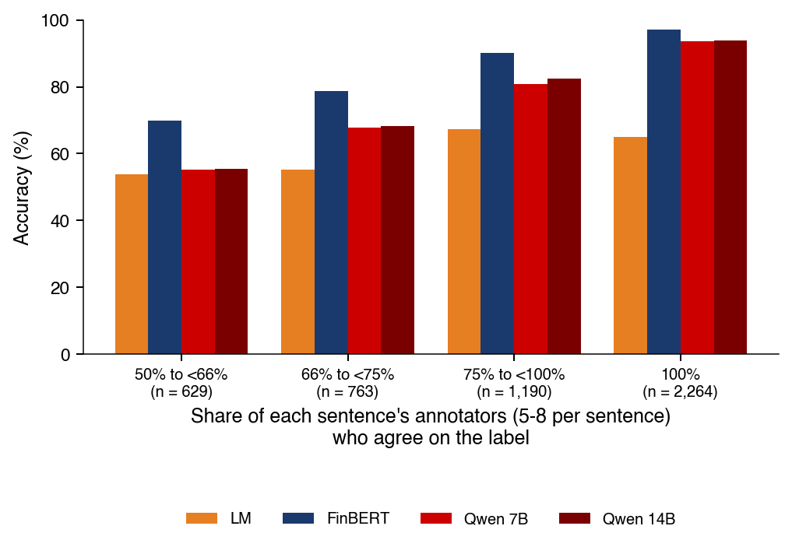
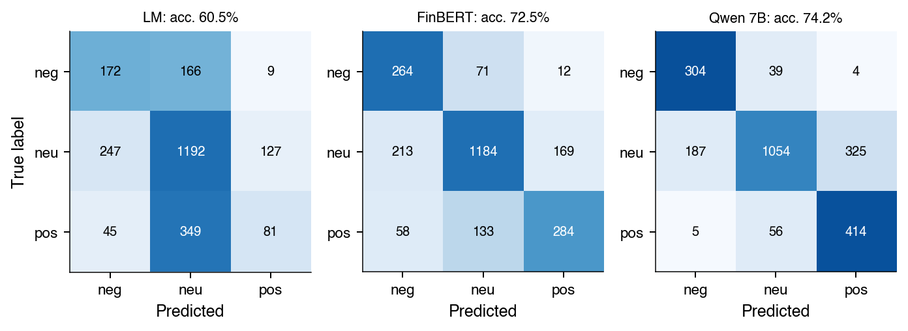
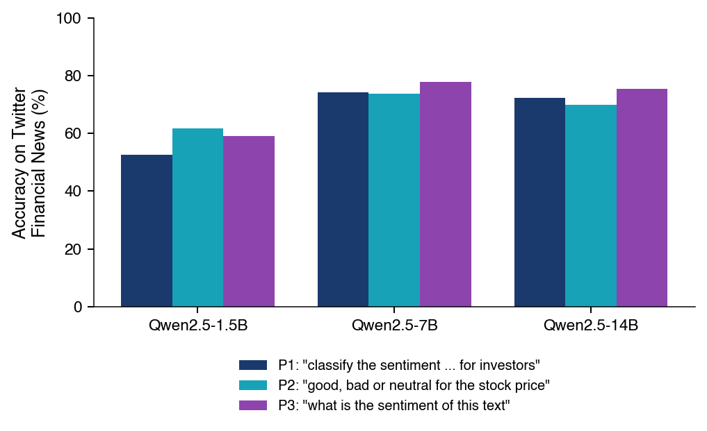
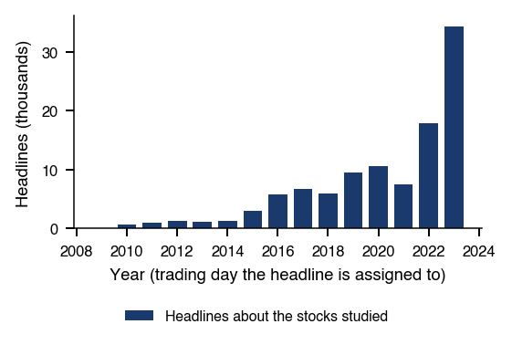
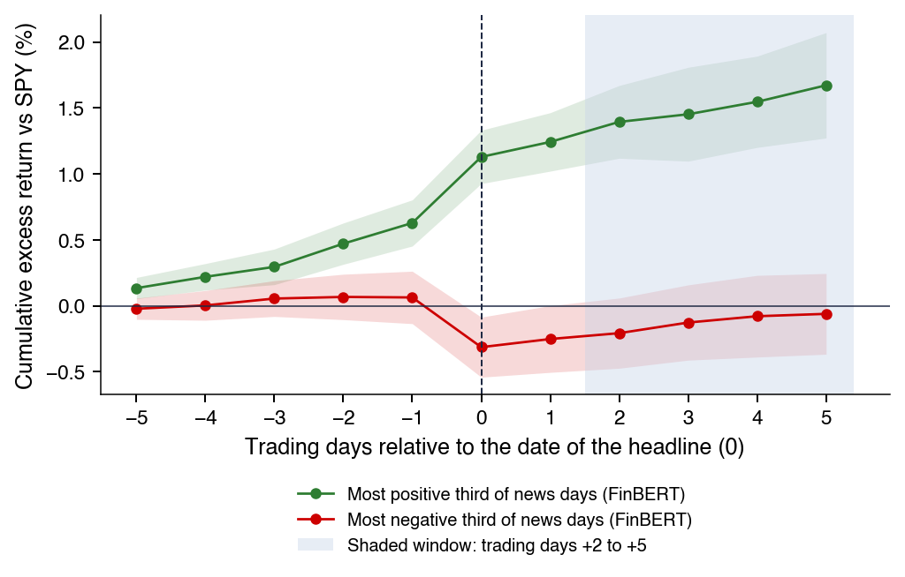
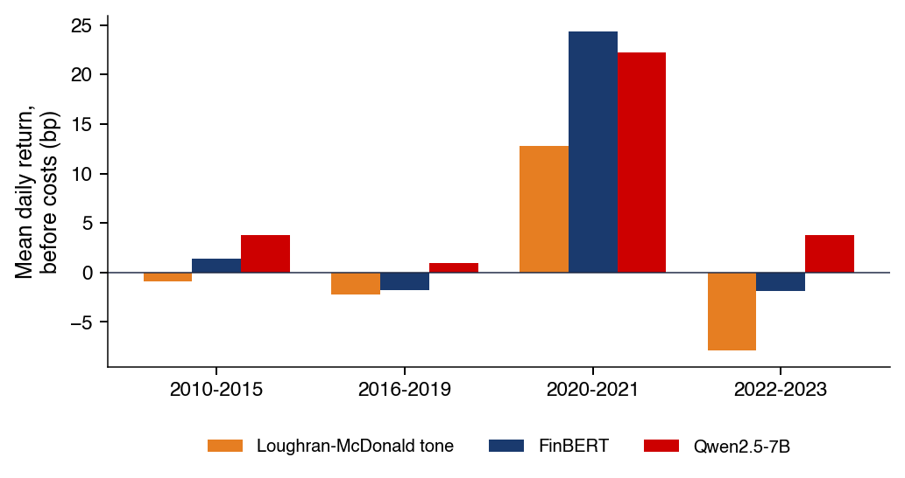
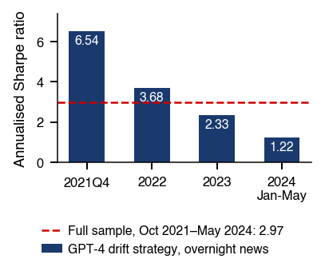

Academia de Studii Economice din București IDA Institute Digital Assets Blockchain Research Center AI4EFin Artificial Intelligence for Energy Finance Academia Română, Institutul de Prognoză Economică MSCA Digital Finance
Putem tranzacționa sentimentul citit de modele în știri?
“I find that high media pessimism predicts downward pressure on market prices followed by a reversion to fundamentals, and unusually high or low pessimism predicts high market trading volume.” — Tetlock (2007)
Capitolul compară dicționare, FinBERT, LLM-uri (large language models, modele mari de limbaj) zero-shot și embeddings pe aceleași texte etichetate
pe Twitter, cel mai bun este cel mai simplu model supervizat, TF-IDF (frecvențe de cuvinte ponderate) + regresie logistică: acuratețe 83,2%, față de 74,2% pentru Qwen2.5-7B și 72,5% pentru FinBERT
Pe 16 acțiuni americane mari, cu 106 820 de titluri de știri, scorul explică mișcarea prețului din aceeași zi
FinBERT: +39,2 bp pentru o abatere standard a scorului (\(t\) = +17,27); bp: puncte de bază, 1 bp = 0,01%
O strategie zilnică long-short după semnul scorului nu aduce profit net
Qwen2.5-7B: +5,64 bp pe zi înainte de costuri, \(p\) = 0,071 după corecția Holm
costul de echilibru, 1,5 bp pe tranzacție, este sub costul presupus de 5 bp
LLM-urile își amintesc istoria piețelor
întrebat doar de lună, Qwen2.5-14B separă lunile de creștere ale S&P 500 de cele de scădere cu AUC 0,69 (aria de sub curba ROC; 0,5 = nicio discriminare)
I find that high media pessimism predicts downward pressure on market prices followed by a reversion to fundamentals, and unusually high or low pessimism predicts high market trading volume.
Tetlock (2007) măsoară pesimismul dintr-o rubrică a Wall Street Journal și arată că el anunță presiuni de scădere a prețurilor, urmate de o revenire. Capitolul pornește de la aceeași întrebare, cu instrumentele de azi: cît de bine citesc modelele sentimentul (sentiment) unui text financiar și dacă acest sentiment poate fi tranzacționat. Sînt comparate patru căi: dicționarele de cuvinte, modelul FinBERT antrenat pe propoziții financiare etichetate, modelele mari de limbaj (LLM, large language models) folosite zero-shot și embeddings urmate de un clasificator. Dicționarele generale citesc greșit textele financiare: în listele folosite aici, 77% dintre cuvintele negative din Harvard General Inquirer (GI) nu apar printre cuvintele negative ale dicționarului financiar al lui Loughran & McDonald (2011).
Pe titlurile financiare de pe Twitter, niciun model nu cîștigă detașat. Cel mai bun este cel mai simplu model supervizat, TF-IDF (term frequency–inverse document frequency) urmat de o regresie logistică (logistic regression), cu o acuratețe de 83,2%, față de 74,2% pentru Qwen2.5-7B și 72,5% pentru FinBERT. Etichetele din domeniul-țintă contează mai mult decît mărimea modelului. Un LLM ridică și o problemă de look-ahead bias: întrebat doar de lună, Qwen2.5-14B separă lunile de creștere ale S&P 500 de cele de scădere cu o arie de sub curba ROC (AUC, area under the curve) de 0,69, unde 0,5 înseamnă nicio discriminare.
Pe 16 acțiuni americane mari, cu 106 820 de titluri distincte din FNSPID (Financial News and Stock Price Integration Dataset), scorurile explică mișcarea prețului din ziua știrii: pentru FinBERT, o abatere standard a scorului corespunde unui randament în exces mai mare cu 39,2 puncte de bază (bp, basis points). Multe titluri relatează însă chiar mișcarea prețului. O strategie zilnică long-short după semnul scorului, cu poziții deschise după ziua știrii, nu aduce profit net. Cel mai bun scor, Qwen2.5-7B, cîștigă 5,64 bp pe zi înainte de costuri, dar \(p\) = 0,071 după corecția Holm, iar costul lui de echilibru, 1,5 bp pe tranzacție, este sub costul presupus de 5 bp. Raportul Sharpe (Sharpe ratio) este +0,63 înainte de costuri și −1,48 după costuri.
Calculați sentimentul unui text cu un dicționar, cu FinBERT și cu un LLM zero-shot.
Interpretați un test pe perechi pentru doi clasificatori evaluați pe aceleași texte.
Interpretați testele de suprapunere și de memorare dintr-un backtest cu LLM.
Interpretați testul unui semnal de sentiment, cu aliniere corectă în timp, inferență pentru puține grupuri, costuri și corecție pentru testarea multiplă (multiple testing).
Prețurile răspund la informație, iar cea mai mare parte a informației care ajunge pe piață vine sub formă de text: știri, rapoarte ale companiilor, conferințe privind rezultatele, rapoarte ale analiștilor, comunicate ale băncilor centrale și rețele sociale. Capitolul tratează tonul acestor texte ca pe o mărime de măsurat, compară instrumentele care îl măsoară pe aceleași date etichetate și se întreabă apoi dacă tonul măsurat al titlurilor datate poate fi tranzacționat, odată ce sînt luate în calcul alinierea în timp, costurile și testarea multiplă.
Prima secțiune fixează vocabularul: ce înseamnă „textul ca date”, ce noțiune de sentiment folosim, ce a găsit literatura timpurie și care sînt cele patru familii de metode care transformă un document într-un scor de sentiment.
Pot modelele citi sentimentul știrilor și îl putem tranzacționa?
Informația care mișcă prețurile ajunge la investitori pe multe canale, iar aproape toate sînt textuale: agenții de știri și ziare, rapoartele periodice ale companiilor listate, transcrierile conferințelor privind rezultatele (earnings calls), rapoartele analiștilor, comunicatele băncilor centrale și, mai recent, postările de pe rețelele sociale. Un model al modului în care prețurile răspund la știri are deci nevoie, la un moment dat, de o modalitate de a citi textul.
Ziarele financiare sînt la fel de vechi ca piețele organizate. The Wall Street Journal a apărut pentru prima dată la 8 iulie 1889, iar fotografia de pe slide arată această primă pagină. Diferența de azi este una de scară: apar zilnic milioane de documente, mult mai multe decît poate citi orice analist. Lectura la această scară trebuie delegată unui algoritm, iar calitatea algoritmului devine ea însăși o problemă de măsurare.
Pe scurt
Prețurile reacționează la informație, iar cea mai mare parte a ei vine sub formă de text
Știri, raportări ale companiilor, conferințe despre rezultate, rapoarte ale analiștilor, comunicate ale băncilor centrale, rețele sociale
Ziarele financiare sînt la fel de vechi ca piețele organizate
The Wall Street Journal: primul număr pe 8 iulie 1889
Astăzi: milioane de documente pe zi, peste ce poate citi orice analist
Gentzkow, Kelly & Taddy (2019) descriu rețeta generală a textului ca date în economie. Un document \(d\) este mai întîi transformat într-o reprezentare numerică \(x_d\): frecvențe de cuvinte, scoruri sau vectori. Această reprezentare este apoi transformată într-o mărime de interes, cum ar fi sentimentul, tema sau riscul, iar mărimea intră într-un model statistic obișnuit al unei variabile economice, cum ar fi randamentele sau volatilitatea. Fiecare pas presupune alegeri, iar fiecare alegere poate introduce erori.
În acest capitol, sentimentul unui text este o proprietate a textului: dacă el este o știre bună, rea sau neutră pentru activul pe care îl menționează. El este raportat fie ca una dintre trei clase, fie ca un scor net
unde cele două probabilități sînt cele atribuite de un clasificator claselor pozitivă și negativă. Noțiunea este distinctă de sentimentul investitorilor (investor sentiment), starea de spirit a investitorilor măsurată din datele de piață (Baker & Wurgler, 2006). Sintezele lui Kearney & Liu (2014) și Loughran & McDonald (2016) acoperă ambele direcții ale literaturii financiare.
Capitolul tratează scorul (15.1) ca pe o estimare a tonului adevărat al textului, măsurată cu eroare. Această perspectivă străbate toate secțiunile: ea determină cum sînt evaluați clasificatorii față de etichetele umane, cum sînt citite pantele regresiilor pe scoruri și cum sînt construite intervalele de încredere cînd scorurile modelelor înlocuiesc etichetele umane.
Pe scurt
Gentzkow, Kelly & Taddy (2019): un document \(d\) este reprezentat numeric prin \(x_d\), folosit într-un model statistic obișnuit
\(x_d\): frecvențe, scoruri, vectori
\(x_d\) devine o mărime de interes (sentiment, temă, risc), folosită apoi pentru a analiza o problemă economică (randamente, volatilitate)
Sentimentul unui text: o veste bună, rea sau neutră pentru activul menționat
Trei clase sau scorul net \(s = P(\text{pozitiv}) - P(\text{negativ}) \in [-1, 1]\)
Nu este sentimentul investitorilor, starea de spirit măsurată din date de piață (Baker & Wurgler (2006))
Patru contribuții încadrează întrebarea empirică. Antweiler & Frank (2004) studiază mesajele de pe forumurile de internet despre acțiuni și constată că ele ajută la prognoza volatilității, în timp ce efectul asupra randamentelor este mic. Tetlock (2007) măsoară pesimismul dintr-o rubrică a Wall Street Journal și constată că un pesimism ridicat în presă anunță presiuni de scădere a prețurilor, urmate de o revenire; un pesimism neobișnuit de ridicat sau de scăzut anunță și un volum mare de tranzacționare.
Tetlock, Saar-Tsechansky & Macskassy (2008) trec de la piață la firmele individuale. Măsura lor este ponderea cuvintelor negative în știrile despre o firmă, iar ea anunță profituri și randamente mai mici. Prețurile încorporează această informație doar treptat, adică exact tipul de ajustare lentă pe care o strategie de tranzacționare l-ar putea exploata.
Shiller (2017) oferă motivația mai largă: poveștile populare se răspîndesc ca epidemiile și influențează deciziile economice, iar ele pot fi măsurate prin text. Shiller a primit Premiul Nobel pentru Economie în 2013, împreună cu Fama și Hansen. Narațiunile pot îndepărta prețurile de fundamente, temă tratată în Capitolul 2, despre eficiența pieței, și în Capitolul 17, despre bule și crahuri.
Pe scurt
Antweiler & Frank (2004): mesajele de pe forumurile despre acțiuni ajută la prognoza volatilității
Efectul asupra randamentelor este mic
Tetlock (2007): pesimismul ridicat dintr-o rubrică a Wall Street Journal anunță presiuni de scădere a prețurilor
Presiunile sînt urmate de o revenire
Pesimismul neobișnuit de mare sau de mic anunță și volume mari de tranzacționare
Metodele comparate în capitol aparțin la patru familii, care diferă prin cantitatea de date etichetate de care au nevoie. Un dicționar numără cuvintele unui document care apar pe liste predefinite de cuvinte pozitive și negative; nu are nevoie de etichete. Sînt folosite trei dicționare:
Harvard General Inquirer (GI), o listă de cuvinte de uz general;
dicționarul financiar Loughran–McDonald (LM);
VADER (Valence Aware Dictionary and sEntiment Reasoner), un dicționar cu reguli construit pentru rețelele sociale.
Un model ajustat (fine-tuned model), cum este FinBERT, este o rețea neuronală antrenată pe mii de propoziții etichetate. Un model mare de limbaj (LLM), cum sînt Qwen2.5 sau modelele GPT (Generative Pre-trained Transformer) ale OpenAI, primește o instrucțiune în limbaj natural, prompt-ul, și clasifică fără niciun exemplu etichetat; aceasta este utilizarea zero-shot. În fine, embeddings urmate de un clasificator transformă fiecare text într-un vector generic, aici produs de modelul MiniLM, și estimează o regresie pe sute sau mii de etichete.
Toate cele patru sînt comparate pe aceleași date etichetate, cu intervale de încredere (CI, confidence intervals) de 95%, și apoi testate pe randamentele zilnice ale acțiunilor. O a cincea cale, regresiile pe text cu fundamentare statistică (Taddy, 2013; Ke, Kelly & Xiu, 2019), nu este testată în corpul capitolului; ea este descrisă în Anexă.
Pe scurt
Metoda
Principiul
Etichete necesare
Exemple
Dicționar
numără cuvintele din listă
niciuna
GI, LM, VADER
Model cu fine-tuning
rețea antrenată pe propoziții etichetate
mii
FinBERT
Model mare de limbaj
instrucțiune în limbaj natural (prompt)
niciuna (zero-shot)
Qwen2.5, GPT
Embeddings + clasificator
vectorii textelor într-o regresie
sute pînă la mii
MiniLM
GI: Harvard General Inquirer, o listă de cuvinte de uz general; LM: dicționarul financiar Loughran–McDonald; VADER: Valence Aware Dictionary and sEntiment Reasoner, un dicționar cu reguli pentru rețelele sociale; GPT: Generative Pre-trained Transformer, modelele de limbaj ale OpenAI
Le comparăm pe toate patru pe aceleași date etichetate, cu intervale de încredere de 95%
CI: confidence intervals
Apoi testăm dacă vreuna produce cîștiguri pe randamentele zilnice ale acțiunilor
O a cincea cale, regresiile pe text cu fundamentare statistică, nu este testată aici (Anexa)
Autori: Taddy; Ke, Kelly și Xiu
Sinteza secțiunii
Textul intră în finanțe ca date: un document devine numere, numerele devin un scor de sentiment, iar scorul intră într-un model al randamentelor. Literatura timpurie a găsit că tonul știrilor este legat de prețuri, volum și profituri, cu o ajustare lentă. Cele patru familii de metode diferă mai ales prin cantitatea de date etichetate de care au nevoie, iar secțiunile următoare le compară pe aceleași texte.
Dicționare
Cea mai veche metodă din finanțe măsoară tonul numărînd cuvintele din liste predefinite. Avantajul ei este transparența: fiecare scor poate fi urmărit pînă la cuvintele care l-au produs. Slăbiciunea ei este că o listă de cuvinte ignoră contextul, iar o listă construită pentru un domeniu poate citi greșit un altul.
Poate o listă de cuvinte măsura tonul unui text financiar?
Metoda dicționarului se bazează pe reprezentarea bag of words: un document este redus la frecvențele cuvintelor sale, iar ordinea lor este ignorată. Unitățile (tokens) sînt cuvinte fără deosebire între majuscule și minuscule, fără cifre și fără punctuație. Un dicționar furnizează o mulțime \(\mathcal{P}\) de cuvinte pozitive și o mulțime \(\mathcal{N}\) de cuvinte negative; fie \(P_d\) și \(N_d\) numărul de cuvinte pozitive și negative din documentul \(d\).
cu \(\tau_d = 0\) dacă \(P_d + N_d = 0\), iar clasa prezisă este semnul lui \(\tau_d\), neutră cînd \(\tau_d = 0\). Un document care conține doar cuvinte pozitive din listă are tonul \(+1\), unul cu doar cuvinte negative are tonul \(-1\), iar un document fără niciun cuvînt din listă este neutru prin construcție.
Metoda este transparentă, rapidă și nu are nevoie de date de antrenare. Limita ei rezultă direct din (15.2): semnul fiecărui cuvînt este fixat dinainte, deci metoda nu vede contextul și negația. „Not good” este numărat ca pozitiv, iar un cuvînt al cărui sens depinde de vecinii lui primește același semn în orice propoziție.
Pe scurt
Reprezentarea prin frecvențele cuvintelor (bag of words): documentul este redus la frecvențele cuvintelor
Ordinea este ignorată
Tokeni: cuvinte fără cifre și punctuație, indiferent de majuscule
Un dicționar listează cuvintele pozitive \(\mathcal{P}\) și cuvintele negative \(\mathcal{N}\)
\(P_d\), \(N_d\): numărul de cuvinte pozitive și negative din documentul \(d\)
Tonul: \(\tau_d = \dfrac{P_d - N_d}{P_d + N_d} \in [-1, 1]\), iar \(\tau_d = 0\) dacă \(P_d + N_d = 0\); clasa este semnul lui \(\tau_d\) (neutră pentru \(\tau_d = 0\))
Avantaje: transparență, viteză, fără date de antrenare
Harvard General Inquirer (GI), lista Harvard IV-4, este un dicționar de psihologie din anii 1960, cu 2 007 cuvinte negative și 1 637 pozitive. Loughran & McDonald (2011) au construit dicționarul LM din rapoartele anuale (formularele 10-K) ale firmelor americane. El are 2 355 de cuvinte negative și doar 354 pozitive. Constatarea lor a fost că aproape trei sferturi dintre cuvintele negative din GI nu sînt negative într-un context financiar. În listele folosite în acest capitol, 1 552 de cuvinte negative din GI, adică 77%, nu sînt cuvinte negative în LM.
VADER (Hutto & Gilbert, 2014) conține circa 7 500 de termeni cu scoruri de intensitate și a fost construit pentru rețelele sociale. El adaugă reguli pentru negație („not good”), intensificatori („very”), majuscule, semne de exclamare și emoticoane și întoarce un scor compus (compound score) în \([-1, 1]\), tăiat de obicei la \(\pm 0{,}05\) pentru a obține trei clase.
Cele trei dicționare diferă astfel pe două axe: vocabularul (general pentru GI și VADER, financiar pentru LM) și tratarea contextului (deloc pentru GI și LM, reguli simple pentru VADER). Regulile VADER rezolvă unele probleme de context, dar vocabularul lui rămîne general, ca al GI.
Pe scurt
Harvard General Inquirer (GI), lista Harvard IV-4: un dicționar de psihologie din anii 1960
2 007 cuvinte negative și 1 637 pozitive
Loughran & McDonald (2011) (LM): construit din rapoartele anuale (formularele 10-K) ale firmelor americane
2 355 de cuvinte negative și doar 354 pozitive
Concluzia lor: aproape trei sferturi dintre cuvintele negative din GI nu sînt negative în context financiar
În listele folosite aici, 1 552 de cuvinte negative din GI (77%) nu apar printre cuvintele negative din LM
VADER (Hutto & Gilbert (2014)): circa 7 500 de termeni cu scoruri de intensitate, pentru rețelele sociale
Reguli pentru negație („not good”), intensificatori („very”), majuscule, semne de exclamare și emoticoane
Scorul compus (compound score) ia valori în \([-1, 1]\), cu pragurile uzuale \(\pm 0{,}05\)
Regulile rezolvă o parte din problemele de context, dar vocabularul este general, ca la GI
Cuvinte negative în psihologie, neutre în contabilitate (1/2)
Graficul examinează cuvintele asupra cărora GI și LM nu sînt de acord, folosind propozițiile din Financial PhraseBank, un corpus de propoziții din știri etichetate de adnotatori umani și descris în secțiunea următoare. Fiecare bară orizontală este un cuvînt; lungimea ei este numărul de propoziții PhraseBank care conțin cuvîntul, iar culorile împart aceste propoziții după eticheta dată de adnotatori: pozitivă, neutră sau negativă.
În versiunea interactivă, selectorul alege lista de cuvinte: negative în GI, dar nu și în LM, sau invers. Cursorul stabilește cîte cuvinte sînt afișate, iar butonul ▶ adaugă cuvintele unul cîte unul. Textul de sub grafic numără propozițiile și proporția celor care nu sînt etichetate negativ.
Întrebare pentru sală „Service”, „capital” și „board” sînt cuvinte negative în dicționarul Harvard IV-4. În Financial PhraseBank, ce proporție dintre propozițiile care conțin fiecare dintre aceste cuvinte este etichetată negativ?
Răspuns
Sub 10% pentru fiecare cuvînt: 2 din 106 propoziții cu „service” (1,9%), 7 din 104 cu „capital” (6,7%) și 3 din 79 cu „board” (3,8%). Semnul unui cuvînt în dicționar nu stabilește eticheta propoziției. Iar un cuvînt fără legătură cu tonul nu ar da 50%: el ar apărea în propoziții negative cu frecvența clasei negative din corpus, 12,5%.
Pentru lista implicită, cuvintele cele mai frecvente, „service” (106 propoziții), „capital” (104) și „board” (79), sînt substantive obișnuite în afaceri. Doar 2 dintre cele 106 propoziții cu „service” (1,9%), 7 dintre cele 104 cu „capital” (6,7%) și 3 dintre cele 79 cu „board” (3,8%) sînt etichetate negativ. Un cuvînt fără legătură cu tonul ar apărea în propoziții negative cu frecvența clasei negative din corpus, 12,5%; aceste cuvinte rămîn chiar sub acest nivel.
Cuvintele pe care GI le marchează ca negative, iar LM nu, sînt în cea mai mare parte vocabular obișnuit al afacerilor. „Service”, „capital” și „board” apar în propoziții neetichetate negativ în 98%, 93% și 96% dintre cazuri, iar „vice”, ca în „vice president”, în 100% dintre cazuri. Numărarea lor ca negative adaugă zgomot tonului oricărui text financiar care le menționează.
„Lower” este un caz diferit: doar 26% dintre propozițiile sale nu sînt etichetate negativ, deci este adesea un cuvînt cu adevărat negativ. Totuși, „lower costs” este o veste bună pentru o firmă. Semnul lui „lower” depinde de cuvîntul următor, pe care nicio listă nu îl vede; aceasta este problema contextului din (15.2) în forma ei cea mai pură.
În ansamblu, cele 964 de propoziții PhraseBank ale căror singure cuvinte negative în GI lipsesc din lista negativă LM nu sînt etichetate negativ în 89% dintre cazuri. Un exemplu rezolvat, cu o propoziție evaluată de ambele dicționare, se află în Aprofundări.
Pe scurt
Cuvinte negative în GI, dar nu în LM
Ordonate după numărul de propoziții din Financial PhraseBank care le conțin
Culoarea: eticheta dată propoziției de adnotatorii umani
„Service”, „capital”, „board” și „vice” sînt cuvinte uzuale în limbajul de afaceri, nu vești negative
Numărul de propoziții: „service” 106, „capital” 104, „board” 79, „vice” 17 (din „vice president”)
Ponderea propozițiilor care nu sînt etichetate negativ: 98% („service”), 93% („capital”), 96% („board”), 100% („vice”)
„Lower”: doar 26% dintre propoziții nu sînt negative
Totuși, „costuri mai mici” este o veste bună
Semnul depinde de cuvîntul următor, de care nicio listă nu ține cont
Din cele 964 de propoziții în care singurele cuvinte negative GI lipsesc din lista negativă LM:
Tonul calculat cu dicționarul, (15.2), este transparent și ieftin, dar calitatea lui depinde de listă. Un dicționar general de psihologie numără substantive din afaceri ca negative: în listele folosite aici, 77% dintre cuvintele negative din GI nu sînt negative în LM, iar propozițiile evaluate negativ doar prin astfel de cuvinte nu sînt etichetate negativ în 89% dintre cazuri. Nicio listă nu vede contextul, așa că un cuvînt precum „lower” își păstrează semnul greșit ori de cîte ori cuvîntul următor îl inversează.
Date etichetate și evaluare
Un clasificator este judecat după acordul cu etichetele umane pe texte pe care nu a fost antrenat. Secțiunea descrie cele două corpusuri etichetate, metricile folosite cînd o clasă domină, testul pe perechi care compară doi clasificatori pe aceleași texte și comparația celor unsprezece clasificatori.
Pe ce texte judecăm un clasificator? Două corpusuri etichetate
Financial PhraseBank (Malo et al., 2014) conține 4 846 de propoziții din știri financiare. Ele au fost etichetate de un grup de 16 adnotatori cu pregătire în finanțe, între 5 și 8 pentru fiecare propoziție, care au răspuns la o singură întrebare: este propoziția o știre bună, rea sau neutră pentru investitor? Corpusul este publicat cu niveluri de acord, ponderea adnotatorilor unei propoziții care au ales eticheta majoritară: cel puțin 50%, 66%, 75% sau 100%. Acordul deplin este atins pe 2 264 de propoziții, iar 629 de propoziții au un acord sub 66%. Etichetele sînt 59% neutre, 28% pozitive și 12% negative.
Al doilea corpus, Twitter Financial News, este distribuit pe Hugging Face Hub sub licența MIT și conține titluri financiare din 2022, etichetate bearish, bullish sau neutral. Are un set de antrenare de 9 543 de titluri și un set de validare de 2 388 de titluri, folosit pentru evaluare în tot capitolul. Etichetele sînt 66% neutre, 20% pozitive și 15% negative. Textele sînt scurte și zgomotoase, cu simboluri bursiere (tickers) și linkuri, și sînt mai apropiate de fluxul real de știri decît propozițiile editate din PhraseBank.
Sînt folosite două corpusuri pentru că un rezultat obținut pe unul nu se transferă neapărat pe celălalt. Comparația contează mai ales pentru FinBERT, a cărui versiune publică a fost ajustată pe PhraseBank, așa cum arată secțiunea despre modelele de limbaj.
Pe scurt
Financial PhraseBank (Malo et al. (2014)): 4 846 de propoziții din știri
Etichetate de un grup de 16 adnotatori cu pregătire în finanțe, cîte 5–8 pentru fiecare propoziție
Întrebarea pusă adnotatorilor: este o veste bună, rea sau neutră pentru investitor?
Niveluri de acord: cel puțin 50%, 66%, 75% sau 100% dintre adnotatori
2 264 de propoziții cu acord deplin, 629 cu acord sub 66%
Etichete: 59% neutre, 28% pozitive, 12% negative
Twitter Financial News (Hugging Face Hub, licența MIT): titluri din 2022
Etichetate bearish, bullish sau neutre
9 543 de titluri de antrenare și 2 388 de validare, folosite pentru evaluare
Etichete: 66% neutre, 20% pozitive, 15% negative
Texte scurte, zgomotoase, cu simboluri bursiere și linkuri, apropiate de fluxul real de știri
Două corpusuri, pentru că un rezultat obținut pe unul s-ar putea să nu se confirme pe celălalt
Acuratețe sau F1 macro? Metrici pentru clase dezechilibrate
Acuratețea (accuracy) este ponderea textelor clasificate corect, \(\text{acc} = \frac{1}{n}\sum_{i=1}^{n}\mathbf{1}\{\hat y_i = y_i\}\). Cînd o clasă domină, acuratețea recompensează un clasificator care prezice acea clasă în majoritatea cazurilor. Este nevoie de o metrică ce cîntărește clasele în mod egal, pentru a vedea dacă clasele rare, aici știrile pozitive și negative, sînt recunoscute.
Pentru clasa \(k\), fie \(TP_k\) numărul de texte din clasa \(k\) prezise ca \(k\),\(FP_k\) numărul de texte din alte clase prezise ca \(k\) și \(FN_k\) numărul de texte din clasa \(k\) prezise ca altă clasă. Precizia (precision), recall-ul și media lor armonică sînt
cu \(K = 3\) clase. F1 macro dă fiecărei clase aceeași pondere, oricît de rară ar fi; aceleași metrici sînt folosite în Capitolul 13.
Reperul care răspunde mereu „neutru” arată diferența dintre cele două metrici. Pe setul de validare Twitter el atinge 66% acuratețe, ponderea titlurilor neutre. Recall-ul lui pe clasa neutră este 1, iar precizia 0,656, deci \(F1_{\text{neutru}} = 2 \times 0{,}656 \times 1/(0{,}656 + 1)\), adică 0,792, în timp ce \(F1 = 0\) pentru celelalte două clase. F1 macro este deci \(0{,}792/3\), doar 26,4%.
Pe scurt
Întrebarea: cum comparăm clasificatori cînd o clasă domină?
Cînd doi clasificatori A și B sînt evaluați pe aceleași \(n\) texte, acuratețile lor sînt corelate: ambii găsesc ușoare textele ușoare și grele textele grele. Două intervale de încredere separate nu răspund deci la întrebarea dacă unul este mai bun. Comparația trebuie să folosească împerecherea.
Fie \(n_{01}\) numărul de texte pe care A greșește și B are dreptate, iar \(n_{10}\) numărul celor pe care A are dreptate și B greșește. Textele pe care cei doi clasificatori sînt de acord, ambii corecți sau ambii greșiți, nu aduc informație despre diferență: diferența de acuratețe este \((n_{01} - n_{10})/n\). Sub ipoteza nulă a acurateței egale, fiecare text discordant îl favorizează cu aceeași probabilitate pe oricare dintre clasificatori, deci \(n_{01} \sim \text{Binomial}(n_{01} + n_{10}; 0{,}5)\), ceea ce dă un test exact. Pentru \(n_{01} + n_{10}\) mare, statistica
are aproximativ distribuția \(\chi^2_1\); termenul \(-1\) este o corecție de continuitate.
Un exemplu mic ilustrează versiunea exactă. Dacă A greșește și B are dreptate pe 4 texte, iar invers se întîmplă pe 1, atunci, cu \(X \sim \text{Binomial}(5; 0{,}5)\), valoarea p bilaterală este \(p = 2\,P(X \ge 4) = 2 \times 6/32 = 0{,}375\). Cinci texte discordante sînt mult prea puține pentru a separa cei doi clasificatori. Un exemplu rezolvat pe date reale, FinBERT față de LM, se află în Anexă.
Pe scurt
Doi clasificatori A și B pe aceleași \(n\) texte: acuratețile lor sînt corelate
Două CI separate nu răspund la întrebare
\(n_{01}\): numărul de texte pe care A greșește și B are dreptate
\(n_{10}\): numărul de texte pe care A are dreptate și B greșește
Textele pe care ambii clasificatori le clasifică la fel nu aduc informație
Diferența de acuratețe este \((n_{01} - n_{10})/n\)
Sub \(H_0\) (acuratețe egală), \(n_{01} \sim \text{Binomial}(n_{01} + n_{10}; 0{,}5)\): un test exact
Graficul compară unsprezece clasificatori pe cele două corpusuri. Fiecare rînd este o metodă: cele trei dicționare (GI, VADER, LM), două modele supervizate antrenate pe etichete Twitter, TF-IDF + LR și MiniLM + LR, FinBERT și cinci modele Qwen2.5 zero-shot, de la 0,5 la 14 miliarde de parametri. TF-IDF (term frequency–inverse document frequency) reduce ponderea cuvintelor comune multor texte, iar LR este regresia logistică (logistic regression). Axa orizontală este acuratețea în procente, cu CI 95%; panoul din stînga este Financial PhraseBank, iar cel din dreapta Twitter Financial News. Linia verticală întreruptă marchează reperul „mereu neutru”.
În versiunea interactivă, selectorul comută între acuratețe și F1 macro, iar cursorul restrînge PhraseBank la propozițiile cu acord mai mare între adnotatori: toate propozițiile, cel puțin 66%, cel puțin 75% sau 100%. Butonul ▶ crește pas cu pas nivelul acordului. Textele de sub grafic raportează valorile pentru FinBERT, Qwen2.5-7B și reper pe PhraseBank, iar pe Twitter cea mai bună metodă și dicționarele.
Întrebare pentru sală Pe titlurile Twitter, care dintre cele 11 metode are cea mai mare acuratețe?
Răspuns
TF-IDF + regresie logistică, cu 83,2%. FinBERT are 72,5%, Qwen2.5-7B zero-shot 74,2%, iar Qwen2.5-14B 72,4%: nici adaptarea la domeniu, nici numărul de parametri nu garantează primul loc. Toate cele trei dicționare rămîn sub reperul „mereu neutru” (65,6%). TF-IDF + LR este antrenat pe etichete Twitter, deci comparația nu izolează efectul arhitecturii.
Pe Twitter, cea mai mare acuratețe, 83,2%, o are TF-IDF + regresie logistică. Qwen2.5-7B zero-shot ajunge la 74,2%, FinBERT la 72,5%, iar Qwen2.5-14B la 72,4%: nici adaptarea la textul financiar, nici numărul de parametri nu garantează primul loc. Toate cele trei dicționare rămîn sub reperul „mereu neutru”, 65,6%. Pentru că TF-IDF + LR este singura metodă de acest tip antrenată pe etichete Twitter, comparația nu izolează efectul arhitecturii.
Pe scurt
TF-IDF: term frequency–inverse document frequency, frecvențe de cuvinte cu ponderi mai mici pentru cuvintele uzuale; LR: logistic regression, regresie logistică MFM_ch15_classification
Unsprezece clasificatori, două seturi de date: niciun cîștigător unic (2/2)
Două dintre cele unsprezece metode, TF-IDF + LR și MiniLM + LR, sînt antrenate pe setul de antrenare Twitter; toate celelalte nu văd nicio etichetă Twitter. Această diferență de date de antrenare explică cea mai mare parte a clasamentului pe Twitter. Pe acest corpus, toate cele trei dicționare pierd în fața clasei majoritare: GI ajunge la 43,6%, VADER la 49,6% și LM la 60,5%, față de 66% pentru „mereu neutru”.
FinBERT ajunge la 89,0% pe PhraseBank și 72,5% pe Twitter; Qwen2.5-7B zero-shot ajunge la 81,4% și 74,2%. Cel mai bun rezultat pe Twitter, 83,2%, vine de la cel mai simplu model supervizat, TF-IDF + regresie logistică. Lecția este că datele etichetate din domeniul-țintă contează mai mult decît mărimea modelului.
Comparația este una între proceduri pe două corpusuri date: ea ordonează procese complete, inclusiv datele lor de antrenare, și nu atribuie diferențele unei singure componente. Dezacordul dintre adnotatori și κ al lui Cohen, care corectează acordul pentru hazard, sînt discutate în Aprofundări.
Pe scurt
TF-IDF + LR și MiniLM + LR: singurele metode antrenate pe etichete Twitter
Toate cele trei dicționare rămîn, pe Twitter, sub reperul clasei majoritare
Acuratețea pe Twitter: GI 43,6%, VADER 49,6%, LM 60,5%, față de 66% pentru reperul „mereu neutru”
Acuratețea FinBERT: 89,0% pe PhraseBank și 72,5% pe Twitter
Acuratețea Qwen2.5-7B zero-shot: 81,4% pe PhraseBank și 74,2% pe Twitter
Cel mai bun pe Twitter, 83,2%: cel mai simplu model supervizat, TF-IDF + regresie logistică
Lecția: etichetele din domeniul-țintă contează mai mult decît mărimea modelului
Clasificatorii sînt comparați pe două corpusuri etichetate, cu acuratețea și F1 macro (15.3), iar perechile de clasificatori cu testul McNemar (15.4), care folosește doar textele pe care aceștia nu sînt de acord. Pe titlurile Twitter, dicționarele se descurcă mai prost decît răspunsul constant „neutral”, FinBERT și Qwen2.5-7B zero-shot sînt apropiate (72,5% și 74,2%), iar o regresie logistică pe TF-IDF antrenată pe etichete Twitter conduce cu 83,2%.
Modele de limbaj: FinBERT și LLM-uri
Dicționarele dau fiecărui cuvînt un semn fix. Modelele de limbaj citesc fiecare cuvînt în contextul propoziției. Secțiunea descrie modelul ajustat FinBERT, capcana evaluării lui pe propriile date de antrenare, trecerea de la predicția cuvîntului următor la LLM-uri care urmează instrucțiuni și clasificarea zero-shot a titlurilor cu familia Qwen2.5.
Un dicționar dă cuvîntului „lower” un singur semn fix. Un model de limbaj reprezintă în schimb fiecare unitate printr-un vector care depinde de toate celelalte unități ale propoziției, prin mecanismul de atenție (attention) al arhitecturii Transformer (Vaswani et al., 2017), prezentat în Capitolul 14. Reprezentarea lui „lower” în „lower costs” poate astfel să difere de reprezentarea lui în „lower revenue”.
BERT (Bidirectional Encoder Representations from Transformers) (Devlin et al., 2019) este un encoder Transformer preantrenat pe cărți și pe Wikipedia prin ghicirea unor cuvinte ascunse aleator. Are circa 110 milioane de parametri. Pentru clasificare folosește vectorul final \(h_{\text{CLS}} \in \mathbb{R}^{768}\) al unei unități speciale, [CLS], plasată la începutul fiecărui text.
Ajustarea (fine-tuning) adaugă un strat de clasificare peste \(h_{\text{CLS}}\) și antrenează întreaga rețea pe propoziții etichetate. Probabilitățile claselor și funcția de pierdere sînt
unde \(p\) conține probabilitățile claselor negativă, neutră și pozitivă, \(y_i\) este eticheta umană a propoziției \(i\), iar \(\mathcal{L}\) este entropia încrucișată (cross-entropy). Minimizarea lui \(\mathcal{L}\) ajustează atît stratul nou, cît și ponderile preantrenate.
Pe scurt
Un dicționar dă cuvîntului „lower” un semn fix
Un model de limbaj citește propoziția din jurul lui
FinBERT (Araci, 2019) este BERT preantrenat suplimentar pe știri financiare și apoi ajustat pentru clasificarea sentimentului. Modelul public folosit în acest capitol, ProsusAI/finbert, a fost ajustat pe Financial PhraseBank. El are nevoie de cîteva milisecunde pe propoziție pe un laptop, ceea ce îl face practic pentru arhive mari de știri.
Scorul folosit în tot capitolul este scorul net (15.1),\(s = p_{\text{pos}} - p_{\text{neg}} \in [-1, 1]\), calculat din probabilitățile din (15.5), iar eticheta prezisă este \(\arg\max_k p_k\). FinBERT este reperul pentru că este public, rapid și larg folosit în literatura financiară.
Există și alte versiuni ale modelului. Huang, Wang & Yang (2023) antrenează un FinBERT pe rapoartele analiștilor, transcrierile conferințelor privind rezultatele și formularele 10-K și constată că el depășește dicționarele, mai ales pe propozițiile pe care dicționarele le citesc greșit. Tiparele de eroare ale FinBERT pe titlurile Twitter, comparate cu cele ale LM și ale Qwen2.5-7B, se află în Aprofundări.
Pe scurt
Araci (2019): FinBERT este BERT pre-antrenat suplimentar pe știri financiare
Apoi adaptat prin fine-tuning pentru sentiment
Modelul public folosit aici (ProsusAI/finbert) a fost adaptat prin fine-tuning pe Financial PhraseBank
Durata: cîteva milisecunde pe propoziție pe un laptop
Scorul folosit în acest capitol: \(s = p_{\text{poz}} - p_{\text{neg}} \in [-1, 1]\), iar eticheta este \(\arg\max_k p_k\)
De ce FinBERT ca reper: este public, rapid și larg folosit în literatura de finanțe
FinBERT atinge 89,0% acuratețe pe PhraseBank, dar cea mai mare parte a PhraseBank a fost folosită la antrenarea lui: Araci (2019) a folosit 3 101 dintre cele 4 845 de propoziții. Pe titlurile Twitter, acuratețea lui este 72,5%, o scădere de 16,4 puncte. O parte a scăderii reflectă o dificultate reală: Qwen2.5-7B, care nu a fost ajustat pe aceste etichete, scade și el, cu 7,2 puncte, pentru că titlurile Twitter sînt mai grele.
Scăderea suplimentară a FinBERT este măsurată printr-o diferență a diferențelor (difference in differences):
egală cu 9,2 puncte, unde \(a_{m,D}\) este acuratețea modelului \(m\) (F pentru FinBERT, Q pentru Qwen) pe datele \(D\) (P pentru PhraseBank, T pentru Twitter). Intervalul ei bootstrap de 95% este [6,7; 11,9]. Ipoteza de identificare este că, fără suprapunerea cu datele de antrenare, ambele modele ar pierde la fel de mult de la PhraseBank la Twitter. Intervalul măsoară doar zgomotul de eșantionare, nu această ipoteză: cele două arhitecturi pot reacționa diferit la un domeniu nou.
Rezultatul susține o diferență descriptivă între cele două scăderi de acuratețe. Atribuirea lui \(\Delta\) suprapunerii cu datele de antrenare ar cere și un comparator necontaminat și absența oricărei alte schimbări diferențiale; Qwen nu a fost ajustat pe PhraseBank, dar textele pot fi în datele lui de preantrenare. Regula practică este cea a testelor out-of-sample din Capitolele 8 și 13: un model de limbaj este evaluat numai pe texte pe care nu le-a văzut niciodată.
Pe scurt
FinBERT: 89,0% acuratețe pe PhraseBank, pe care a fost antrenat în mare parte
Ipoteza de identificare, netestabilă: fără suprapunere, ambele modele ar pierde la fel de la PhraseBank la Twitter; CI măsoară doar zgomotul de eșantionare
Ce susține rezultatul: o diferență descriptivă între scăderile de acuratețe
Atribuirea lui \(\Delta\) suprapunerii cere și un comparator necontaminat și nicio altă schimbare diferențială
Qwen nu a fost adaptat pe PhraseBank, dar textele pot apărea în datele lui de pretraining
Regula: evaluați un model de limbaj doar pe texte pe care nu le-a văzut niciodată
Shannon (1951) a arătat că limba engleză este foarte previzibilă pornind de la literele anterioare. Un model mare de limbaj (LLM) se sprijină pe aceeași idee: el estimează distribuția condiționată \(P(w_{t+1} \mid w_1, \dots, w_t)\) a unității următoare, unde \(w_t\) este a \(t\)-a unitate, un cuvînt sau o parte de cuvînt. Antrenat pe suficient text, acest singur obiectiv produce modele care pot rezolva o gamă largă de sarcini.
Brown et al. (2020) au arătat că, la scară mare, astfel de modele rezolvă sarcini pornind de la cîteva exemple incluse în prompt, adică utilizarea few-shot. Ouyang et al. (2022) au adăugat ajustarea pe instrucțiuni (instruction tuning) și RLHF (reinforcement learning from human feedback), care învață modelul să urmeze cereri formulate în limbaj natural. Clasificarea zero-shot folosită în capitol se bazează pe această capacitate.
Există și LLM-uri specializate pe domeniu. BloombergGPT (Wu et al., 2023) are 50 de miliarde de parametri și a fost antrenat pe text financiar și general. Fundamentele predicției cuvîntului următor și ale prelucrării limbajului natural sînt prezentate în cursurile Quantinar indicate pe slide.
Pe scurt
Shannon (1951): engleza este foarte predictibilă din literele anterioare
Un model mare de limbaj (LLM) estimează \(P(w_{t+1} \mid w_1, \dots, w_t)\) pe tokeni
\(w_t\): al \(t\)-lea token, un cuvînt sau o parte de cuvînt
Brown et al. (2020): la scară mare, sarcinile se rezolvă din cîteva exemple date în prompt (few-shot)
Ouyang et al. (2022): instruction tuning și RLHF (reinforcement learning from human feedback, învățare prin recompensă din evaluările oamenilor) antrenează modelul să urmeze instrucțiuni
BloombergGPT (Wu et al. (2023)): 50 de miliarde de parametri, antrenat pe text financiar și general
Clasificatorul zero-shot nu are nevoie de niciun exemplu etichetat. Prompt-ul este format dintr-o instrucțiune de sistem, „You classify the sentiment of financial news for investors. Answer with one word: positive, negative or neutral.”, urmată de text în forma „Headline: <text> Sentiment:”. Răspunsul modelului nu este generat ca text liber; în schimb, probabilitățile celor trei cuvinte de răspuns sînt citite direct.
La prima poziție generată, fie \(z_k\) valorile logit (logits) ale unităților „positive”, „negative” și „neutral”. Normalizarea pe aceste trei cuvinte dă
\[p_k = \frac{e^{z_k}}{\sum_j e^{z_j}}, \qquad k \in \{\text{pos}, \text{neg}, \text{neu}\}.\]
(15.7)
Eticheta este \(\arg\max_k p_k\), iar scorul este \(p_{\text{pos}} - p_{\text{neg}}\), ca pentru FinBERT. Citirea probabilităților în locul analizei textului generat face clasificatorul determinist și dă un scor continuu care poate intra într-o regresie.
Pe scurt
Prompt-ul: o instrucțiune de sistem plus textul de clasificat
You classify the sentiment of financial news for investors. Answer with one word: positive, negative or neutral.
Headline: <text> Sentiment:
Citim logiții \(z_k\) ai tokenilor „positive”, „negative”, „neutral” la prima poziție generată
\(p_k = e^{z_k} / \sum_j e^{z_j}\), normalizat pe cele trei cuvinte-răspuns
Eticheta: \(\arg\max_k p_k\)
Scorul: \(p_{\text{poz}} - p_{\text{neg}}\), ca la FinBERT
Cînd un LLM generează text, el extrage unitatea următoare dintr-o distribuție controlată de temperatura \(T > 0\):
\[p_k(T) = \frac{e^{z_k/T}}{\sum_j e^{z_j/T}}.\]
(15.8)
Cînd \(T \to 0\), modelul alege mereu unitatea cea mai probabilă (greedy decoding) și dă același răspuns la fiecare rulare; Lopez-Lira & Tang (2026) folosesc temperatura 0. La \(T = 1\), modelul extrage din propria distribuție, iar \(T > 1\) aplatizează probabilitățile, deci răspunsurile variază mai mult.
În acest capitol nu este generat niciun text. Eticheta \(\arg\max_k p_k\) este răspunsul pe care modelul l-ar da cînd \(T \to 0\), iar scorul păstrează probabilitățile la \(T = 1\) din (15.7), fără nimic de analizat. Modelele aparțin familiei Qwen2.5 (Qwen Team, 2024), modele cu ponderi publice (open-weight) de la 0,5 la 72 de miliarde de parametri, publicate la 19 septembrie 2024 sub licența Apache 2.0 sau, pentru 3B, Qwen Research License. Capitolul folosește 0.5B, 1.5B, 3B, 7B și 14B, unde B înseamnă miliarde de parametri; timpii de procesare se află în Anexă.
Ponderile publice contează din două motive:
Rezultatele pot fi reproduse cu exact același model.
Data publicării ponderilor limitează ce ar fi putut ști modelul, proprietate folosită în secțiunea despre look-ahead bias.
Pe scurt
La generare, modelul extrage următorul token din \(p_k(T) = e^{z_k/T} / \sum_j e^{z_j/T}\), cu temperatura \(T > 0\)
\(T \to 0\): mereu tokenul cel mai probabil (decodare greedy), deci același răspuns la fiecare rulare; Lopez-Lira & Tang (2026) folosesc temperatura 0
\(T = 1\): distribuția modelului; \(T > 1\) aplatizează probabilitățile, deci răspunsurile variază mai mult
Aici nu se generează text
Eticheta \(\arg\max_k p_k\) este răspunsul de la \(T \to 0\)
Scorul păstrează probabilitățile de la \(T = 1\), fără extragerea etichetei dintr-un răspuns textual
Qwen Team (2024): modele cu ponderi deschise, de la 0,5 la 72 de miliarde de parametri
Licențe: Apache 2.0; Qwen Research License pentru 3B
Graficul arată F1 macro pentru cele cinci modele Qwen2.5 zero-shot, toate cu același prompt. Axa orizontală este numărul de parametri în miliarde, pe scară logaritmică, iar axa verticală este F1 macro în procente. Linia albastră este Financial PhraseBank, iar cea roșie Twitter Financial News; liniile orizontale punctate sînt FinBERT pe cele două corpusuri.
În versiunea interactivă, selectorul comută între F1 macro și acuratețe, iar cursorul alege prompt-ul folosit pe Twitter, P1, P2 sau P3; cele trei prompt-uri pun aceeași întrebare în cuvinte diferite. Butonul ▶ parcurge cele trei prompt-uri. Textul de sub grafic dă valoarea pentru 1.5B, 7B, 14B și FinBERT, ponderea răspunsurilor „neutral” ale modelului 1.5B și comparația McNemar dintre 7B și 1.5B.
Întrebare pentru sală Pornim de la prompt-ul P1 și rulăm ▶ pînă la P3. Dintre modelele Qwen2.5 1.5B, 7B și 14B, care va avea cel mai mare F1 macro pe Twitter la P3?
Răspuns
14B. La P3, F1 macro este 57,8% pentru 1.5B, 71,8% pentru 7B și 73,3% pentru 14B. La P1 conducea 7B: 72,6%, față de 71,3% pentru 14B și 55,3% pentru 1.5B. Clasamentul depinde și de prompt: avantajul observat la P1 nu se transferă automat la P3.
Pe PhraseBank, F1 macro crește cu mărimea, de la 63,3% (0.5B) la 82,1% (14B), tot sub cel al FinBERT, 88,3%, un avantaj datorat parțial suprapunerii cu datele de antrenare (Capcana evaluării in-sample). Pe Twitter, cu prompt-ul P1, relația nu este monotonă: 1.5B este cel mai slab model (55,3%), iar 7B cel mai bun (72,6%), peste FinBERT (66,8%) și peste 14B (71,3%). În acuratețe, 7B depășește 1.5B cu 21,5 puncte, cu \(p < 0{,}001\) în testul McNemar.
Clasamentul depinde și de prompt. La P3, F1 macro este 57,8% pentru 1.5B, 71,8% pentru 7B și 73,3% pentru 14B, deci avantajul lui 7B de la P1 nu se transferă. Modelele mici reacționează puternic la formulare: cu prompt-ul P1, modelul 1.5B răspunde rar „neutral”. Prompt-ul este un parametru al clasificatorului, discutat în Aprofundări.
Pe scurt
F1 macro pentru Qwen2.5 zero-shot cu același prompt, iar liniile punctate arată FinBERT
PhraseBank: F1 macro crește de la 63,3% (0.5B) la 82,1% (14B), tot sub FinBERT (88,3%)
Avantajul FinBERT de acolo provine parțial din suprapunerea cu datele de antrenare (Capcana evaluării in-sample)
Pe Twitter, F1 macro nu crește monoton cu mărimea
1.5B este cel mai slab (55,3%)
7B este cel mai bun (72,6%), peste FinBERT (66,8%)
Diferența de acuratețe dintre 7B și 1.5B este de +21,5 puncte procentuale (testul McNemar: \(p\)\(<\)0,001)
Modelele mici sînt foarte sensibile la formulare
Modelul 1.5B răspunde rar „neutral” cu acest prompt
Modelele de limbaj citesc cuvintele în context. FinBERT, un BERT ajustat pe PhraseBank, pare pe PhraseBank mai bun decît este: scăderea lui suplimentară de acuratețe pe Twitter, (15.6), este de 9,2 puncte. LLM-urile zero-shot clasifică pornind de la un prompt, citind probabilitățile cuvintelor de răspuns, (15.7), fără să genereze text. Acuratețea lor nu crește monoton cu mărimea și depinde de prompt.
Embeddings ca variabile
Un model de embeddings transformă un text într-un vector generic, neantrenat pentru sentiment. Un clasificator estimat pe acești vectori cu un număr modest de etichete este a patra cale, între dicționare și modelele ajustate. Secțiunea se întreabă dacă astfel de vectori conțin sentimentul unui titlu și de cîte etichete are nevoie un clasificator simplu.
Pot vectorii generici ai textelor măsura sentimentul?
Un embedding este un vector \(e_d \in \mathbb{R}^k\) atribuit textului \(d\) astfel încît textele asemănătoare să aibă vectori apropiați. Embeddings la nivel de cuvînt provin din word2vec (Mikolov et al., 2013); Sentence-BERT (Reimers & Gurevych, 2019) produce vectori pentru propoziții întregi. Capitolul folosește MiniLM (Wang et al., 2020), cu \(k = 384\) și vectori de lungime unitară, deci similaritatea a două texte este \(\cos(e_a, e_b) = e_a^\top e_b\). Embeddings intră într-un clasificator sau într-o regresie ca orice altă variabilă.
Graficul arată titlurile de validare Twitter în planul primelor două componente principale ale vectorilor MiniLM: prima componentă pe axa orizontală, a doua pe cea verticală, fiecare titlu fiind un punct colorat după eticheta umană (1 566 neutre, 475 pozitive și 347 negative). Analiza componentelor principale (PCA, principal component analysis), introdusă în Capitolul 3, păstrează direcțiile de varianță maximă, nu pe cele legate de etichetă.
În versiunea interactivă, cursorul rotește o direcție de proiecție în planul PC1–PC2, de la 0° (prima componentă principală) la 180°, iar al doilea panou arată titlurile pozitive și negative proiectate pe această direcție. Butonul ▶ rotește direcția pas cu pas; textul de sub grafic raportează aria de sub curba ROC (AUC) pentru titlurile pozitive față de cele negative, la direcția curentă și la cea mai bună.
Întrebare pentru sală Cea mai bună direcție din planul primelor două componente principale ale vectorilor MiniLM separă titlurile pozitive de cele negative cu AUC ≈ 0,636. Ce putem deduce despre informația de sentiment din embeddings?
Răspuns
Separarea liniară în acest plan este modestă, dar rezultatul nu exclude informație utilă în celelalte dimensiuni. PCA maximizează varianța explicată, fără să folosească etichetele. AUC privește aici numai ordonarea titlurilor pozitive față de cele negative; nu este acuratețea în trei clase. O regresie logistică pe toate cele 384 de dimensiuni ajunge la 78,6% acuratețe pe Twitter.
Cea mai bună direcție din acest plan separă titlurile pozitive de cele negative cu AUC ≈ 0,636, o separare modestă. Acest AUC privește doar ordonarea titlurilor pozitive față de cele negative și nu este o acuratețe pe trei clase. PCA maximizează varianța explicată fără să folosească etichetele, deci rezultatul nu exclude informație de sentiment în celelalte dimensiuni. O regresie logistică pe toate cele 384 de dimensiuni găsește direcția sentimentului și ajunge la 78,6% acuratețe pe Twitter.
Pe scurt
Embedding: un vector \(e_d \in \mathbb{R}^k\), apropiat pentru texte asemănătoare
Aici: MiniLM (Wang et al. (2020)), cu \(k = 384\) și vectori de normă 1, deci similaritatea este \(\cos(e_a, e_b) = e_a^\top e_b\)
Embeddings intră într-un clasificator sau într-o regresie ca orice altă variabilă
Graficul: titlurile din setul de validare Twitter, colorate după etichetă
Axele: primele două componente principale ale vectorilor MiniLM
Primele două componente nu separă sentimentul
PCA (principal component analysis, analiza componentelor principale; Capitolul 3) păstrează direcțiile de varianță maximă, nu pe cele legate de etichetă
O regresie logistică pe toate cele 384 de dimensiuni găsește direcția sentimentului
Un clasificator pe embeddings sau pe variabile TF-IDF are nevoie de etichete din domeniul-țintă, iar curba de învățare (learning curve) arată cum crește acuratețea lui cu numărul acestora. Axa orizontală este numărul de titluri etichetate de antrenare, pe scară logaritmică, de la 100 la întregul set de antrenare Twitter; axa verticală este acuratețea pe setul de validare, în procente. Cele două linii colorate sînt embeddings MiniLM + regresie logistică și TF-IDF + regresie logistică, fiecare cu o bandă de \(\pm 2\) abateri standard între reeșantionările de antrenare. Liniile orizontale sînt FinBERT și Qwen2.5-7B, care nu folosesc etichete Twitter.
În versiunea interactivă, cursorul parcurge numerele testate de etichete de antrenare, iar butonul ▶ se deplasează de-a lungul curbei. Textul de sub grafic raportează acuratețea medie a celor doi clasificatori la mărimea aleasă și o compară cu FinBERT.
Întrebare pentru sală Care este primul număr testat de etichete Twitter la care acuratețea medie a MiniLM + LR, calculată între reeșantionările de antrenare, depășește FinBERT?
Răspuns
400. Media este 71,9% la 200 de etichete și 73,3% la 400; FinBERT are 72,5%. Unele antrenări depășesc reperul deja la 200, iar la 800 îl depășesc toate cele zece. Pragul de 400 privește media, nu fiecare eșantion. TF-IDF pornește mai jos (66,9% la 100 de etichete), dar ajunge la circa 83% cu toate cele 9 543 de etichete, față de 78,6% pentru embeddings.
Acuratețea medie a MiniLM + LR este 71,9% la 200 de etichete și 73,3% la 400, față de 72,5% pentru FinBERT: 400 este prima mărime testată la care media depășește reperul. Unele antrenări depășesc FinBERT deja la 200 de etichete, iar la 800 îl depășesc toate cele zece. Pragul de 400 privește media, nu fiecare eșantion.
Fiecare punct al curbei provine dintr-o regresie logistică antrenată pe o submulțime aleatoare a setului de antrenare Twitter, de mărimea dată, cu 10 repetări pentru fiecare mărime; banda acoperă \(\pm 2\) abateri standard între repetări. Designul măsoară cît depinde rezultatul de titlurile care se întîmplă să fie etichetate, nu doar de numărul lor.
Embeddings + regresie logistică pornesc de sus: 69,0% cu 100 de etichete și peste FinBERT de la 400 de etichete. Vectorii preantrenați conțin deja cea mai mare parte din ce îi trebuie clasificatorului, iar cîteva sute de etichete ajung pentru a găsi direcția sentimentului. TF-IDF pornește mai jos, de la 66,9%, dar continuă să se îmbunătățească și ajunge la circa 83% cu toate etichetele, față de 78,6% pentru embeddings. Cu multe etichete, cuvintele exacte precum „upgrade”, „cuts” sau „misses” poartă semnalul în titluri, iar o reprezentare rară (sparse) a cuvintelor le poate folosi direct.
Regula practică este de a eticheta cîteva sute de documente din propriul domeniu înainte de a avea încredere într-un model preluat de-a gata. Același eșantion etichetat servește mai tîrziu ca eșantion de validare în secțiunea despre scoruri ca estimări.
Pe scurt
Regresie logistică antrenată pe submulțimi aleatoare ale setului de antrenare Twitter
10 repetări pentru fiecare mărime a eșantionului, iar banda arată \(\pm 2\) abateri standard
Embeddings + regresie logistică: 69,0% acuratețe cu 100 de etichete
Peste FinBERT începînd de la 400 de etichete
Vectorii pre-antrenați conțin deja cea mai mare parte a informației necesare
TF-IDF pornește mai jos (66,9%), dar continuă să crească
Circa 83% cu toate etichetele, față de 78,6% pentru embeddings
Cu multe etichete, cuvintele exacte („upgrade”, „cuts”, „misses”) conțin semnalul în titluri
Regulă practică: etichetați cîteva sute de documente din domeniul de interes
Vectorii generici MiniLM nu separă sentimentul în primele lor două componente principale, dar o regresie logistică pe toate cele 384 de dimensiuni ajunge la 78,6% pe Twitter și depășește FinBERT în acuratețe medie de la 400 de etichete. Cu întregul set de antrenare, TF-IDF se descurcă și mai bine, cu circa 83%. Cîteva sute de etichete din domeniu valorează mai mult decît un model general mai mare.
Look-ahead bias și memorarea
Un LLM este antrenat pe texte care pot descrie chiar evenimentele pe care un backtest încearcă să le prognozeze. Secțiunea formulează problema, prezintă un test direct al memoriei lui Qwen2.5 despre mișcările trecute ale pieței și enumeră remediile.
Un LLM antrenat pe texte pînă în 2024 poate să fi citit ce s-a întîmplat după un titlu publicat în 2015. Un backtest pe știrile din 2015 amestecă atunci prognoza cu amintirea: un scor ridicat poate reflecta cunoașterea traiectoriei ulterioare a prețului, nu o lectură a titlului.
Glasserman & Lin (2023) identifică două distorsiuni în backtest-urile de sentiment cu LLM-uri. Look-ahead bias apare cînd modelul cunoaște randamentele care au urmat știrii. Distragerea (distraction) apare cînd cunoștințele generale despre compania numită interferează cu lectura textului; în testele lor, distragerea a contat mai mult decît look-ahead bias. Sarkar & Vafa (2024) arată, prin teste directe, că look-ahead bias este prezent în aplicațiile LLM la conferințele privind rezultatele și la alegeri.
Orice backtest al scorurilor LLM pe titluri anterioare publicării modelului are nevoie, prin urmare, de o precizare a ceea ce modelul ar fi putut ști și, de preferință, de un test al acestui lucru.
Pe scurt
Un LLM antrenat pe texte de pînă în 2024 poate să fi citit ce s-a întîmplat după un titlu din 2015
Un backtest pe știrile din 2015 confundă atunci prognoza cu memorarea
Testul îl întreabă pe model despre mișcările trecute ale pieței fără să îi dea vreun text de citit. În varianta lunară, întrebarea este „Did the S&P 500 index rise or fall during <month year>?”, pusă pentru fiecare lună, în 296 de luni dinainte de publicarea ponderilor și 23 de luni de după. În varianta zilnică, întrebarea este „Did Apple stock close higher or lower on <date> than on the previous trading day?”, pusă pentru 500 de zile aleatoare din 2010–2023 și pentru 493 de zile de după octombrie 2024.
Scorul este \(P(\text{creștere})\), calculat din probabilitățile cuvintelor de răspuns, ca în (15.7). Direcția adevărată provine din prețurile lunare de închidere ale S&P 500 și din cele zilnice ale Apple. Discriminarea este măsurată prin AUC, aria de sub curba ROC (receiver operating characteristic): probabilitatea ca o perioadă de creștere aleasă aleator să primească un scor mai mare decît o perioadă de scădere aleasă aleator. Un AUC de 0,5 înseamnă nicio discriminare; metrica este prezentată în Capitolul 13.
După publicare nu mai există nimic de amintit. Dacă data nu poartă informație predictivă, de exemplu prin sezonalitate, AUC-ul populației după publicare este 0,5, iar AUC-ul din eșantion variază în jurul acestei valori. Lunile de după publicare servesc astfel drept grup de control pentru lunile de dinainte.
Pe scurt
Întrebarea lunară: „Did the S&P 500 index rise or fall during <lună an>?”
Pusă pentru 296 de luni dinainte de publicarea ponderilor și pentru 23 de luni de după
Întrebarea zilnică: „Did Apple stock close higher or lower on <dată> than on the previous trading day?”, pusă pentru 500 de zile aleatoare din 2010–2023 și pentru 493 de zile de după octombrie 2024
Scorul: \(P(\text{creștere})\), calculat din probabilitățile cuvintelor-răspuns
Direcția adevărată: din prețurile de închidere lunare ale S&P 500 și din cele zilnice ale Apple
AUC (area under the curve, aria de sub curba ROC, receiver operating characteristic): probabilitatea ca o perioadă aleatoare de creștere să primească un scor mai mare decît una aleatoare de scădere
AUC = 0,5 înseamnă nicio capacitate de discriminare (Capitolul 13)
După publicare nu mai există nimic de memorat
Dacă data nu conține informație predictivă (de exemplu sezonalitate), AUC în populație este 0,5
Graficul raportează AUC pentru trei modele Qwen2.5, 1.5B, 7B și 14B, cu intervale de 95%. Panoul din stînga privește direcția lunilor S&P 500, iar cel din dreapta direcția zilelor individuale Apple; axa orizontală este mărimea modelului, iar axa verticală AUC. Punctele albastre sînt perioadele dinainte de publicarea ponderilor, cele portocalii perioadele de după publicare, cînd modelul nu poate ști răspunsul. Linia întreruptă marchează 0,5.
În versiunea interactivă, primul selector alege seria (lunile S&P 500 sau zilele Apple), iar al doilea modelul. Cursorul stabilește pragul peste care un răspuns contează drept „creștere”, iar al doilea panou arată punctul corespunzător pe curba ROC; butonul ▶ mută pragul de la 0 la 1 și trasează curba.
Întrebare pentru sală Pentru Qwen2.5-14B, AUC pe lunile S&P 500 dinainte de publicarea ponderilor este 0,69, cu CI 95% [0,62; 0,75]. Ce concluzie susține acest rezultat?
Răspuns
Discriminare peste 0,5, compatibilă cu memorarea, fără să identifice singură mecanismul. Rezultatul măsoară discriminarea unor luni trecute: nu separă memorarea de regularitățile calendaristice sau de regim și nu stabilește performanța viitoare. Pentru zilele individuale ale Apple, AUC rămîne între 0,48 și 0,52. Pe cele 23 de luni de după publicare, AUC este 0,59, cu un interval larg, aproximativ [0,35; 0,84]: ar fi nevoie de circa 101 luni.
Pentru Qwen2.5-14B, AUC pe lunile S&P 500 dinainte de publicare este 0,69, cu CI 95% [0,62; 0,75]. Este o discriminare peste 0,5, compatibilă cu memorarea, dar care nu identifică singură mecanismul: nu separă memorarea de regularitățile calendaristice sau de regim și nu spune nimic despre lunile viitoare. Pentru zilele individuale Apple, AUC rămîne între 0,48 și 0,52. Pe cele 23 de luni de după publicare, AUC pentru 14B este 0,59, cu un interval larg, de aproximativ [0,35; 0,84].
Intervalele sînt intervale bootstrap de 95%, cu lunile reeșantionate independent. Înainte de publicare, AUC este 0,67 pentru 7B (CI [0,61; 0,73]) și 0,69 pentru 14B (CI [0,62; 0,75]), iar valoarea p a testului de permutare pentru 14B este sub 0,001. Modelul 1.5B știe mult mai puțin, cu un AUC de 0,57.
După publicare, pe 23 de luni, intervalele includ 0,5, dar sînt prea largi pentru a dovedi ceva. Ar fi nevoie de circa 101 luni de după publicare pentru a detecta o scădere de la 0,69 la 0,5; testul formal și puterea lui se află în Anexă. Pentru zilele individuale Apple, AUC este între 0,48 și 0,52 înainte de publicare: nu este detectată nicio discriminare peste hazard.
Look-ahead bias este deci un pericol la orizontul evenimentelor bine cunoscute, cum este direcția unei luni rămase în memorie pentru un crah, și mai puțin pentru zgomotul zilnic. Rezultatul este descriptiv: discriminarea lunilor este compatibilă cu memorarea, dar nu o separă de regularitățile calendaristice sau de regim. Răspunsurile lui 14B pentru fiecare lună sînt prezentate în Aprofundări.
Pe scurt
AUC cu intervale bootstrap de 95%, cu lunile reeșantionate independent
Lunile dinainte de publicare: AUC 0,67 pentru 7B și 0,69 pentru 14B
CI [0,61; 0,73] pentru 7B și [0,62; 0,75] pentru 14B
Testul prin permutări pentru 14B: \(p\)\(<\)0,001
Modelul 1.5B știe mult mai puțin: AUC 0,57
După publicare (23 de luni) intervalele includ 0,5, dar sînt prea largi pentru o concluzie
Ar fi nevoie de circa 101 luni după publicare pentru a detecta o cădere la 0,5
Testarea numai pe știri publicate după data-limită de antrenare a modelului, remediul cel mai curat. Lopez-Lira & Tang (2026) evaluează GPT-4 pe titluri publicate după această dată; designul este curat, dar fereastra de evaluare începe tîrziu.
Mascarea numelor companiilor și a datelor înainte de evaluare și compararea pantelor cu și fără mascare (Glasserman & Lin, 2023). Acesta este un diagnostic, nu o vindecare, pentru că produsele, evenimentele sau citatele pot identifica în continuare episodul.
Un model disponibil la data analizată (point-in-time model), antrenat numai pe textele disponibile pînă la data \(t\) a analizei (Sarkar & Vafa, 2024).Drinkall et al. (2024) publică o serie de LLM-uri point-in-time, fiecare fără cunoștințe despre faptele de după data lui, cu modele și date de antrenare publice. He et al. (2025) construiesc ChronoBERT și ChronoGPT, care folosesc numai textele disponibile la fiecare dată; pe randamentele din ziua următoare știrilor, rapoartele lor Sharpe sînt apropiate de cele ale unui model mult mai mare, deci look-ahead bias este modest în acea aplicație.
Oricare ar fi remediul ales, fiecare rezultat trebuie să precizeze versiunea modelului și data publicării ponderilor lui, astfel încît cititorul să poată judeca ce ar fi putut ști modelul.
Pe scurt
Testați doar după data-limită a datelor de antrenare
Antrenate doar pe textul disponibil pînă la data \(t\)
Drinkall et al. (2024): o serie de LLM-uri cu date de referință succesive, fiecare fără informații despre faptele de după data lui, iar modelele și datele lor de antrenare sînt publice
He et al. (2025): ChronoBERT și ChronoGPT folosesc doar textul disponibil la fiecare dată
La prognoza randamentelor zilei următoare din știri, rapoartele lor Sharpe sînt apropiate de cele ale unui model mult mai mare: acolo, look-ahead bias-ul are un efect modest
Raportați versiunea modelului și data publicării ponderilor sale împreună cu fiecare rezultat
Sinteza secțiunii
Întrebat doar de lună, Qwen2.5-14B separă lunile de creștere ale S&P 500 de cele de scădere dinainte de publicarea lui cu un AUC de 0,69, în timp ce zilele individuale Apple nu sînt discriminate. Cele 23 de luni de după publicare sînt prea puține pentru a arăta dacă discriminarea dispare. Backtest-urile scorurilor LLM au deci nevoie de date de după publicare, de diagnostice prin mascare sau de modele point-in-time și de precizarea datei de publicare a modelului.
De la sentiment la un semnal de tranzacționare
Secțiunile anterioare au măsurat cît de bine concordă scorurile cu etichetele umane. Această secțiune se întreabă dacă tonul titlurilor datate prognozează randamente care mai pot fi tranzacționate. Ea descrie titlurile FNSPID și marcajele lor de timp, regresia pe date cumulate și inferența ei cu 16 acțiuni, precum și o strategie zilnică long-short după costuri.
Datele provin din FNSPID, Financial News and Stock Price Integration Dataset(Dong, Fan & Peng, 2024): 15,7 milioane de înregistrări de știri despre firmele din S&P 500, din patru site-uri de știri, pentru 1999–2023, sub licența Creative Commons CC BY-NC 4.0 (atribuire, utilizare necomercială).
Capitolul folosește 16 acțiuni americane mari pentru care prețurile zilnice sînt disponibile în datele cursului: firme de tehnologie, bănci, GameStop și Strategy. După eliminarea titlurilor repetate rămîn 106 820 de titluri distincte și 18 282 de zile-acțiune cu știri, între 27 octombrie 2009 și 18 decembrie 2023. Acoperirea este inegală în timp, așa cum arată Aprofundările.
Eșantionul este mic în secțiune transversală și selectat: 16 firme mari, urmărite intens, alese dintre supraviețuitorii de azi. Ambele trăsături contează pentru interpretarea rezultatelor care urmează.
Pe scurt
Întrebarea secțiunii: prognozează tonul titlurilor randamente pe care le mai putem tranzacționa?
FNSPID (Dong, Fan & Peng (2024)): 15,7 milioane de știri despre firmele din S&P 500, 1999–2023
Financial News and Stock Price Integration Dataset
Știri de pe patru site-uri de știri
Licența Creative Commons CC BY-NC 4.0 (atribuire, utilizare necomercială)
Aici: 16 acțiuni americane mari cu prețuri zilnice în datele cursului
Tehnologie, bănci, GameStop, Strategy
106 820 de titluri distincte, după eliminarea repetițiilor
18 282 de zile-acțiune cu știri (perechi acțiune–zi cu cel puțin un titlu), între 27.10.2009 și 18.12.2023
Momentul apariției unui titlu față de ședința de tranzacționare decide ce randament poate prognoza acesta. Graficul arată distribuția marcajelor de timp FNSPID pe ore. Axa orizontală este ora marcajului în timpul universal coordonat (UTC, Coordinated Universal Time), axa verticală numărul de titluri pe scară logaritmică; bara roșie este miezul nopții, 00:00 UTC.
În versiunea interactivă, cursorul mută ceasul din UTC în alt fus orar, cu decalaje de la −12 la +12 ore, iar butonul ▶ parcurge decalajele.
Întrebare pentru sală Dacă mutăm ceasul din UTC în UTC−5, aflăm dacă titlurile din FNSPID au apărut înainte sau după închiderea bursei?
Răspuns
Nu. 99,8% dintre titluri au marcajul exact 00:00 UTC, deci sursa dă doar data. La UTC−5, 00:00 UTC devine 19:00 în ziua anterioară, dar conversia schimbă doar afișarea marcajului, fără să adauge ora publicării. De aceea randamentele din zilele d și d+1 pot conține încă reacția, iar primul randament folosit ca prognoză tranzacționabilă este cel din d+2.
Mutarea ceasului nu arată dacă un titlu a apărut înainte sau după închiderea bursei. 99,8% dintre titluri au marcajul exact 00:00 UTC, deci sursa dă doar data. La UTC−5, 00:00 UTC devine 19:00 în ziua anterioară, dar conversia schimbă doar afișarea marcajului; ea nu adaugă ora publicării.
Pentru că 99,8% dintre titluri au marcajul 00:00 UTC, sursa înregistrează data publicării, nu ora ei. Un titlu datat \(d\) poate să fi apărut înainte de deschidere, în timpul ședinței sau după închiderea zilei \(d\). Orice aliniere a titlurilor cu randamentele trebuie să fie validă în toate cele trei cazuri.
Alinierea folosită în capitol atribuie fiecare titlu zilei \(d\), prima zi de tranzacționare egală cu data lui sau ulterioară. Randamentele din \(d\) și din \(d+1\) pot conține încă reacția la știre: în \(d\), dacă titlul a apărut înainte de ședință sau în timpul ei, în \(d+1\), dacă a apărut după închidere. Prima prognoză sigură este randamentul din \(d+2\), de la închiderea din \(d+1\) la închiderea din \(d+2\). Această aliniere nu are look-ahead, cu prețul renunțării la prima zi de după știre.
Pe scurt
Ora marcajului de timp FNSPID în timpul universal coordonat (UTC), scară logaritmică
99,8% dintre titluri au marcajul exact 00:00 UTC: sursa dă data, nu ora publicării
Un titlu datat \(d\) poate apărea înainte de deschidere, în timpul ședinței sau după închiderea zilei \(d\)
Alinierea folosită aici, fără look-ahead bias
Ziua \(d\): prima zi de tranzacționare egală cu data titlului sau ulterioară
Randamentele din \(d\) și \(d+1\) pot conține încă reacția
Prima prognoză sigură: randamentul din \(d+2\), de la închiderea din \(d+1\) la închiderea din \(d+2\)
Pentru fiecare titlu sînt calculate trei scoruri: tonul LM (15.2), scorul net FinBERT \(P(\text{pos}) - P(\text{neg})\) și scorul net Qwen2.5-7B cu prompt-ul P1. Dicționarul LM găsește un cuvînt din listă în doar 27% dintre titluri; toate celelalte primesc tonul 0. Etichetele FinBERT sînt 19% negative, 62% neutre și 18% pozitive.
Scorurile concordă doar parțial. Între titluri, corelația este 0,62 între FinBERT și Qwen, 0,41 între FinBERT și LM și 0,36 între Qwen și LM. Cele două modele de limbaj sînt mai apropiate între ele decît de dicționar.
Variabila explicată este randamentul în exces al acțiunii \(i\) în ziua \(t\) față de SPY, un fond tranzacționat la bursă care replică indicele S&P 500:
\[r^{e}_{i,t} = r_{i,t} - r_{\text{SPY},t}.\]
(15.9)
Acest randament ajustat cu piața presupune \(\beta = 1\) pentru fiecare acțiune. Alternativa uzuală este \(r_{i,t} - \hat\alpha_i - \hat\beta_i r_{\text{SPY},t}\), cu \(\hat\beta_i\) estimat înainte de eveniment.
Pe scurt
Cele trei scoruri:
Tonul LM
Scorul net FinBERT \(P(\text{poz}) - P(\text{neg})\)
Scorul net Qwen2.5-7B cu prompt-ul P1
LM găsește un cuvînt din listă doar în 27% dintre titluri: restul primesc tonul 0
Corelațiile pe titluri: FinBERT–Qwen 0,62, FinBERT–LM 0,41, Qwen–LM 0,36
Randamentul în exces: \(r^{e}_{i,t} = r_{i,t} - r_{\text{SPY},t}\)
SPY: un fond tranzacționat la bursă care urmărește indicele S&P 500
Ajustat la piață: \(\beta = 1\) pentru fiecare acțiune; alternativa uzuală este \(r_{i,t} - \hat\alpha_i - \hat\beta_i r_{\text{SPY},t}\), cu \(\hat\beta_i\) estimat înaintea evenimentului
Specificația regresiei și erorile standard grupate pe zile
Relația dintre scoruri și randamente este estimată printr-o regresie pe date cumulate (pooled regression) pe zilele-acțiune cu știri:
\[r^{e}_{i,d+h} = a + b\,z_{i,d} + \varepsilon_{i,d+h}, \qquad h = 0, 1, 2,\]
(15.10)
unde \(z_{i,d}\) este scorul zilnic al acțiunii \(i\) în ziua \(d\), standardizat pe panel la media 0 și abaterea standard 1. Panta \(b\) este atunci randamentul în exces, în procente, la o abatere standard a scorului. Orizontul \(h = 0\) măsoară reacția din ziua știrii, iar \(h = 2\) măsoară predictibilitatea, pentru că \(d+2\) este primul randament sigur.
Erorile acțiunilor diferite din aceeași zi sînt corelate prin șocurile comune ale pieței. Erorile standard OLS (ordinary least squares, metoda celor mai mici pătrate) ignoră această corelație și sînt prea mici. Urmînd Petersen (2009), varianța este grupată pe zile:
unde \(g\) indexează zilele de tranzacționare, \(X\) conține regresorii (o constantă și \(z\)), iar \(X_g\) și \(\hat\varepsilon_g\) sînt rîndurile și reziduurile OLS ale zilei \(g\). Termenul din mijloc permite orice corelație între reziduurile aceleiași zile și niciuna între zile diferite.
Pe scurt
Regresie pe toate zilele-acțiune cu știri: \(r^{e}_{i,d+h} = a + b\,z_{i,d} + \varepsilon_{i,d+h}\), \(h = 0, 1, 2\)
\(z\): scorul zilnic standardizat pe panel (medie 0, abatere standard 1), deci \(b\) este randamentul în exces (%) asociat unei abateri standard a scorului
\(g\) indexează zilele de tranzacționare, \(X\) conține regresorii (constanta și \(z\)), iar \(X_g\), \(\hat\varepsilon_g\) sînt rîndurile și reziduurile OLS din ziua \(g\)
Reacție față de predicție: titlurile descriu prețurile
Graficul raportează panta \(b\) din (15.10) pentru fiecare dintre cele trei scoruri și cele trei orizonturi. Axa orizontală enumeră scorurile (tonul Loughran–McDonald, FinBERT, Qwen2.5-7B); axa verticală este randamentul în exces în puncte de bază (bp, 1 bp = 0,01%) la o abatere standard a scorului, cu intervale de 95% grupate pe zile. Albastrul este ziua știrii \(d\), ocrul ziua \(d+1\), cînd știrile pot încă sosi, iar roșul ziua \(d+2\), prognoza tranzacționabilă.
În versiunea interactivă, cursorul stabilește numărul minim de titluri pe zi-acțiune care intră în regresie, de la 1 la 20, iar selectorul alege orizonturile, de la \(d\) la \(d+2\) sau de la \(d\) la \(d+5\). Butonul ▶ crește pas cu pas numărul minim de titluri.
Întrebare pentru sală La filtrul inițial de cel puțin un titlu pe zi-acțiune, ce concluzie susțin estimările pantelor pentru randamentul în exces din ziua d+2?
Răspuns
Nu detectăm pante diferite de zero la pragul bilateral de 5%, cu erori standard grupate pe zi. Statisticile t sînt −0,25 pentru FinBERT, +1,19 pentru Qwen și −0,01 pentru LM; niciuna nu depășește în modul reperul asimptotic 1,96. Este lipsă de dovezi în această specificație, nu dovada unor efecte exact nule. În ziua d pantele sînt mari: FinBERT +39,2 bp (t = 17,27) și Qwen +41,4 bp (t = 19,07); multe titluri relatează chiar mișcarea prețului.
În ziua \(d\), pantele sînt mari: FinBERT +39,2 bp (\(t\) = +17,27), Qwen +41,4 bp (\(t\) = +19,07) și LM +15,5 bp (\(t\) = +8,53). Multe titluri relatează chiar mișcarea prețului („shares jump”, „stock falls”), deci cauzalitatea merge în ambele sensuri. În ziua \(d+1\), pantele sînt +3,2 bp pentru FinBERT (\(t\) = +1,60) și +3,7 bp pentru Qwen (\(t\) = +1,86); o parte provine din știri publicate după închiderea din \(d\), nu dintr-o prognoză.
În ziua \(d+2\), pantele sînt −0,5 bp pentru FinBERT (\(t\) = −0,25), +2,3 bp pentru Qwen (\(t\) = +1,19) și −0,0 bp pentru LM (\(t\) = −0,01). Niciuna nu depășește 1,96 în valoare absolută: nu detectăm pante diferite de zero la pragul bilateral de 5%, cu erori standard grupate pe zile. Este o lipsă de dovezi în această specificație, nu dovada unor efecte exact nule.
Pe scurt
Panta \(b\) în puncte de bază pentru o abatere standard a scorului (s.d. în grafic)
bp: 1 bp = 0,01%
CI 95% grupat pe zile
Ziua \(d\): FinBERT +39,2 bp (\(t\) = +17,27), Qwen +41,4 bp (\(t\) = +19,07), LM +15,5 bp (\(t\) = +8,53)
Multe titluri relatează chiar mișcarea prețului („shares jump”, „stock falls”): cauzalitatea merge în ambele sensuri
Ziua \(d+1\): FinBERT +3,2 bp (\(t\) = +1,60), Qwen +3,7 bp (\(t\) = +1,86)
O parte din acest efect provine din știri publicate după închiderea zilei \(d\), nu dintr-o prognoză
Ziua \(d+2\): FinBERT \(-\)0,5 bp (\(t\) = \(-\)0,25), Qwen +2,3 bp (\(t\) = +1,19), LM \(-\)0,0 bp (\(t\) = \(-\)0,01)
Gruparea pe zile tratează șocurile comune, dar erorile unei acțiuni pot fi corelate și între zile, pentru că efectele specifice firmei persistă. Pantele trebuie deci să reziste și grupării pe acțiuni. Gruparea dublă (two-way clustering) (Cameron, Gelbach & Miller, 2011) le combină pe cele două:
unde fiecare termen este formula sandwich (15.11), cu grupuri date de zi, de acțiune și, respectiv, de perechea acțiune–zi.
O pereche acțiune–zi conține aici o singură observație, deci ultimul termen este estimatorul White, robust doar la heteroscedasticitate. Scăderea lui evită numărarea de două ori a varianței fiecărei observații, pe care o includ atît grupurile pe zile, cît și cele pe acțiuni. Driscoll & Kraay (1998) permit în plus corelația între zile diferite.
Pe scurt
Întrebarea: rezistă pantele dacă erorile sînt corelate și în timp, pentru aceeași acțiune?
Efectele de firmă persistă, deci erorile aceleiași acțiuni sînt corelate între zile: grupăm și pe acțiuni
Gruparea pe acțiuni lasă doar \(G = 16\) grupuri. Cu atît de puține grupuri, eroarea standard grupată pe acțiuni este prea mică, iar testul \(t\) respinge prea des (Cameron, Gelbach & Miller, 2008). Wild cluster bootstrap cu ipoteza nulă impusă corectează această problemă.
Procedura estimează mai întîi modelul restricționat, cu \(b = 0\), care dă o constantă \(\tilde a\) și reziduurile \(\tilde\varepsilon_{i,t}\). Pentru \(j = 1, \dots, B\), cu \(B = 9\,999\), ea extrage ponderi Rademacher \(w_g = \pm 1\), fiecare cu probabilitatea \(\tfrac12\), o extragere pentru fiecare acțiune \(g\), construiește randamentele bootstrap \(r^{e*}_{i,t} = \tilde a + w_{g(i)}\,\tilde\varepsilon_{i,t}\), reestimează regresia și calculează statistica \(t^*_j\) grupată pe acțiuni. Valoarea p este
Același semn pentru toate reziduurile unei acțiuni păstrează corelația din interiorul grupului. Bootstrap-ul presupune acțiuni independente, deci este citit alături de statistica cu grupare dublă, care permite corelația între acțiuni în aceeași zi.
Pe scurt
Cu doar \(G = 16\) acțiuni, SE grupată pe acțiuni este subestimată, iar testul \(t\) respinge prea des (Cameron, Gelbach & Miller (2008))
Wild cluster bootstrap cu ipoteza nulă impusă
Estimăm modelul restricționat (\(b = 0\)), cu constanta \(\tilde a\) și reziduurile \(\tilde\varepsilon_{i,t}\)
Pentru \(j = 1, \dots, B\), \(B = 9\,999\): ponderi Rademacher \(w_g = \pm 1\) cu probabilitatea \(\frac12\), o extragere pentru fiecare acțiune \(g\)
\(r^{e*}_{i,t} = \tilde a + w_{g(i)}\,\tilde\varepsilon_{i,t}\); reestimăm regresia și calculăm \(t^*_j\) grupat pe acțiuni
Analiza rulează nouă regresii: trei scoruri înmulțite cu trei orizonturi, \(h = 0, 1, 2\). Dacă niciun scor nu ar avea vreun efect, nouă teste la 5% ar da totuși, în medie, \(9 \times 0{,}05 = 0{,}45\) respingeri false. Familia de teste are nevoie de o corecție pentru testarea multiplă.
Corecția Holm, prezentată în Capitolul 2, menține rata erorii pe familie (FWER, family-wise error rate), probabilitatea oricărei respingeri false, la cel mult 5%. Cu valorile p ordonate, \(p_{(1)} \le \dots \le p_{(m)}\) și \(m = 9\), valorile p ajustate sînt
iar \(H_{(k)}\) este respinsă cînd \(\tilde p_{(k)} \le 0{,}05\). Holm este mai puternic decît Bonferroni, care înmulțește fiecare valoare p cu \(m\), și rămîne valid la orice dependență între teste.
Tabelul raportează, pentru combinațiile principale de scor și orizont, panta în puncte de bază, statistica \(t\) grupată pe acțiuni, statistica cu grupare dublă (15.12), valoarea p din wild bootstrap (15.13) și valoarea p ajustată Holm (15.14). Pantele din aceeași zi rezistă tuturor corecțiilor: FinBERT +39,2 bp, cu \(t\) = +5,71 pe acțiuni și +5,67 cu grupare dublă, și Qwen +41,4 bp, cu +5,10 și +5,07; valorile lor p din bootstrap și Holm sînt sub 0,001.
Orizontul tranzacționabil este diferit. Qwen în \(d+2\) are \(t\) = +2,41 pe acțiuni, ceea ce pare semnificativ: \(p\) = 0,029 sub o distribuție \(t\) cu 15 grade de libertate. Wild bootstrap dă \(p\) = 0,061, iar Holm dă apoi 0,37. Printre cele nouă valori p bootstrap ordonate, Qwen în \(d+2\) este a patra, după cele trei valori din aceeași zi, toate sub 0,001, deci valoarea lui p Holm este \((9 - 4 + 1) \times 0{,}061 \approx 0{,}37\). FinBERT și LM în \(d+2\) au valori p Holm de 1,00. Rîndurile neafișate sînt LM în \(d\), cu \(p < 0{,}001\), și cele trei pante din \(d+1\), cu \(p\) = 0,272 (FinBERT), 0,317 (Qwen) și 0,802 (LM).
Rezultatul susține o asociere: scorurile și randamentele din aceeași zi se mișcă împreună, dar sensul cauzalității rămîne deschis. Studiul de eveniment din Aprofundări arată că zilele-acțiune cu scorurile cele mai pozitive cîștigă deja +0,63% în cele 5 zile dinaintea știrii.
Pe scurt
Scor, orizont
\(b\) (bp)
\(t\) pe acțiuni
\(t\) grupare dublă
\(p\) wild bootstrap
\(p\) Holm
FinBERT, \(d\)
+39,2
+5,71
+5,67
\(<\)0,001
\(<\)0,001
Qwen, \(d\)
+41,4
+5,10
+5,07
\(<\)0,001
\(<\)0,001
FinBERT, \(d+2\)
\(-\)0,5
\(-\)0,35
\(-\)0,30
0,739
1,00
Qwen, \(d+2\)
+2,3
+2,41
+2,01
0,061
0,37
LM, \(d+2\)
\(-\)0,0
\(-\)0,03
\(-\)0,02
0,979
1,00
Qwen în \(d+2\): \(t\) = +2,41, cu grupare pe acțiuni, pare semnificativ
\(p\) = 0,029 cu distribuția \(t\) cu 15 grade de libertate
Dar nu și după wild bootstrap și corecția Holm
Corecția Holm pas cu pas: ordonăm cele 9 p-value-uri bootstrap; Qwen în \(d+2\) este a 4-a, după cele trei valori din ziua \(d\) (toate sub 0,001), deci \(p\) Holm = (9 \(-\) 4 + 1) \(\times\) 0,061 \(\approx\) 0,37
Rîndurile care nu apar în tabel: LM în ziua \(d\), \(p\)\(<\)0,001; în ziua \(d+1\), \(p\) = 0,272 (FinBERT), 0,317 (Qwen), 0,802 (LM)
Ce susține rezultatul: asociere
Scorurile cele mai pozitive au deja +0,63% în cele 5 zile dinainte de știre (Aprofundări)
Regresia măsoară o asociere; o strategie se întreabă dacă semnul scorului aduce un profit care poate fi încasat efectiv. La închiderea din \(d+1\), pentru fiecare acțiune cu știri și scor nenul în ziua \(d\), strategia ia o poziție long dacă scorul este pozitiv și short dacă este negativ. Fiecare poziție este acoperită cu SPY; o acoperire unu-la-unu elimină mișcarea pieței doar cînd \(\beta = 1\). Pozițiile au ponderi egale și sînt închise după o zi, la închiderea din \(d+2\). Scorul LM este zero în 48% dintre zilele-acțiune, iar acestea nu intră în portofoliu.
Randamentul brut al strategiei în ziua \(d+2\) este
unde \(A_d = \{i : |s_{i,d}| > b\}\) este mulțimea acțiunilor cu știri și cu un scor peste pragul \(b\) în valoare absolută, aici \(b = 0\), iar \(N_d = |A_d|\) este numărul de poziții deschise la închiderea din \(d+1\). Dacă \(A_d\) este vidă, \(G_{d+2} = 0\) și nu se plătesc costuri.
Pe scurt
Întrebarea: aduce semnul scorului un profit pe care îl putem încasa efectiv?
La închiderea din \(d+1\): pentru fiecare acțiune cu știri și scor nenul în ziua \(d\)
Poziție long dacă scorul este pozitiv și short dacă este negativ
Fiecare poziție este acoperită (hedging) cu SPY; acoperirea unu-la-unu elimină mișcarea pieței doar pentru \(\beta = 1\)
Pozițiile au ponderi egale și se închid după o zi, la închiderea din \(d+2\)
Scorul LM este zero în 48% dintre perechile acțiune–zi: acestea nu intră în portofoliu
Costul tranzacționării este fixat la \(c\) = 5 bp pe tranzacție într-un sens, pe unitate de valoare nominală tranzacționată. Valoarea este presupusă, nu estimată; ea este plauzibilă pentru acțiuni americane mari și lichide. O tranzacție dus-întors (round trip), intrarea și ieșirea dintr-o poziție, costă \(2c\). Într-o zi cu poziții, strategia face o tranzacție dus-întors pentru portofoliul de acțiuni și una pentru acoperirea cu SPY, fiecare cu valoarea nominală 1, deci plătește \(4c\) = 20 bp.
Costul de echilibru (break-even cost) \(c^*\) este valoarea lui \(c\) la care randamentul net mediu este zero, \(c^* = \bar G_{\text{activ}}/4\), unde \(\bar G_{\text{activ}}\) este randamentul brut mediu în zilele cu poziții. O strategie merită tranzacționată doar dacă costul ei de echilibru depășește costul plătit efectiv.
Pe scurt
\(c\) = 5 bp pe tranzacție într-un singur sens, pe unitatea de valoare nominală tranzacționată
Nivel presupus, nu estimat, plauzibil pentru acțiuni americane mari și lichide
O tranzacție dus-întors (intrare și ieșire) costă \(2c\)
Într-o zi cu poziții: \(4c\) = 20 bp
Un dus-întors pentru portofoliul de acțiuni și unul pentru acoperirea SPY
Inferența pentru randamentul zilnic mediu folosește statistica \(t\) Newey–West, prezentată în Capitolul 2, și un interval de încredere prin block bootstrap. Ambele permit autocorelația randamentelor zilnice.
Raportul Sharpe anualizat este
\[SR = \sqrt{252}\,\frac{\bar G}{\hat\sigma},\]
(15.17)
unde \(\bar G\) și \(\hat\sigma\) sînt media și abaterea standard a randamentului zilnic \(G_t\) pe toate cele 3 568 de zile de tranzacționare; zilele fără poziții intră cu 0, iar după costuri \(G_t\) este înlocuit cu randamentul net (15.16). Pentru Qwen2.5-7B, o medie de +5,64 bp și \(SR\) = +0,63 implică \(\hat\sigma = \sqrt{252} \times \text{media}/SR \approx 143\) bp pe zi.
Efectul costurilor rezultă din (15.16): cu poziții în 95% dintre zile, media scade cu \(20 \times 0{,}95\) bp. Graficul următor însumează randamentele zilnice simple în exces; suma este o măsură aditivă a profitului, nu averea compusă.
Graficul arată suma cumulată a randamentelor zilnice în exces ale strategiei (15.15), în procente, din 2010 pînă în 2024. Liniile continue sînt randamentele brute, iar cele întrerupte randamentele nete cu 5 bp pe tranzacție într-un sens; portocaliul este scorul LM, albastrul FinBERT și roșul Qwen2.5-7B.
În versiunea interactivă, primul cursor alege ziua randamentului, de la \(d+1\) la \(d+5\), al doilea costul pe tranzacție într-un sens, de la 0 la 10 bp, iar al treilea ultima zi inclusă în sumă. Butonul ▶ extinde suma în timp.
Întrebare pentru sală Pentru strategia Qwen2.5-7B pe d+2, media brută este 5,64 bp pe zi, iar proporția zilelor active este aproximativ 95%. La un cost c = 5 bp pe tranzacție, într-un sens, ce medie netă rezultă?
Răspuns
Aproximativ −13,36 bp pe zi. O zi activă plătește 4c: intrare și ieșire pentru poziția în acțiuni și pentru acoperirea cu SPY. Media netă este 5,64 − 0,95 × 4 × 5 ≈ −13,36 bp. +0,89 bp numără un singur sens; −3,86 bp numără un singur dus-întors. Raportul Sharpe scade de la +0,63 la −1,48, iar costul de echilibru este 1,5 bp pe tranzacție.
Înainte de costuri, FinBERT cîștigă +3,27 bp pe zi (\(t\) = +1,27), cu CI 95% [−1,51; +8,93], nediferit de zero; LM are −0,21 bp (\(t\) = −0,07). Qwen2.5-7B cîștigă +5,64 bp pe zi (\(t\) = +2,26, \(p\) = 0,024), cu CI [+0,95; +10,61]. Ca cel mai bun dintre trei scoruri, valoarea lui p Holm este 0,071, nesemnificativă.
Costurile elimină cîștigul. O zi activă plătește \(4c\), iar cu zile active în circa 95% dintre zile media netă este \(5{,}64 - 0{,}95 \times 4 \times 5 \approx -13{,}36\) bp pe zi. Costul de echilibru al Qwen2.5-7B este 1,5 bp pe tranzacție, mult sub 5 bp, iar raportul lui Sharpe scade de la +0,63 înainte de costuri la −1,48 după costuri. Rezultatul susține doar o asociere: cîștigurile mari sînt concentrate în 2020–2021 și nu sînt semnificative la 5% (Aprofundări).
Pe scurt
Suma randamentelor zilnice în exces (%), înainte de costuri și cu 5 bp pe tranzacție
FinBERT: +3,27 bp pe zi (\(t\) = +1,27), nu diferă de zero
CI 95% [\(-\)1,51; +8,93], iar LM obține \(-\)0,21 bp pe zi (\(t\) = \(-\)0,07)
Qwen2.5-7B: +5,64 bp (\(t\) = +2,26, \(p\) = 0,024)
CI 95% [+0,95; +10,61], dar este cel mai bun dintre trei scoruri: după corecția Holm, \(p\) = 0,071, nesemnificativ
Costul de echilibru, +1,5 bp pe tranzacție, este mult sub 5 bp: raportul Sharpe este +0,63 înainte de costuri și \(-\)1,48 după costuri
Ce susține rezultatul: asociere
Doar 2020–2021 are cîștiguri mari, nesemnificative la 5% (Aprofundări)
Strategia în ziua netranzacționabilă \(d+1\) verifică alinierea în timp. FinBERT are −0,22 bp (\(t\) = −0,10), iar Qwen +4,06 bp (\(t\) = +1,36). Nu există un cîștig semnificativ nici în această zi: aproape toată reacția are loc în ziua \(d\), pe care marcajele de timp fără oră o fac imposibil de tranzacționat.
O parte din avantajul Qwen poate fi memorată. Ponderile Qwen2.5 au fost publicate pe 19 septembrie 2024, iar fiecare titlu din eșantion, din 2010–2023, este anterior. Un titlu care numește un episod poate declanșa amintirea a ceea ce a urmat, spre deosebire de testul Apple din secțiunea anterioară, care dădea doar data. Testul memoriei limitează ce știe modelul despre date calendaristice; nu limitează ce știe despre evenimente numite.
Pe scurt
Ziua netranzacționabilă \(d+1\): FinBERT \(-\)0,22 bp (\(t\) = \(-\)0,10), Qwen +4,06 bp (\(t\) = +1,36)
Niciun cîștig semnificativ nici aici: aproape toată reacția are loc în ziua \(d\)
O parte din avantajul Qwen poate proveni din memorare: ponderile Qwen2.5 au fost publicate pe 19 septembrie 2024, după titlurile din 2010–2023
Un titlu care numește episodul poate declanșa amintirea, spre deosebire de testul Apple, care dădea doar data
Scorurile titlurilor explică mișcarea din aceeași zi: +39,2 bp la o abatere standard pentru FinBERT și +41,4 bp pentru Qwen, rezultate robuste la gruparea dublă, la wild bootstrap și la Holm. Relația reflectă în mare parte titluri care descriu mișcări de preț. La primul orizont sigur, \(d+2\), nicio pantă nu rezistă corecțiilor, iar strategia zilnică long-short nu aduce profit net: cel mai bun scor, Qwen2.5-7B, își atinge echilibrul la 1,5 bp pe tranzacție, sub costul presupus de 5 bp.
Scorurile de sentiment sînt estimări
Un scor de sentiment este ieșirea unui model, nu tonul adevărat al textului. Cînd intră într-o regresie ca regresor sau cînd media lui este raportată ca o mărime a populației, eroarea de măsurare a scorului trece în estimări. Secțiunea derivă atenuarea pantei pe un regresor generat, o măsoară pentru cele trei scoruri ale capitolului și prezintă prediction-powered inference, care construiește intervale valide din scorurile modelelor și dintr-un eșantion mic etichetat de oameni.
Întrebarea secțiunii este ce se întîmplă cu panta și cu intervalul ei cînd regresorul este ieșirea unui model, nu tonul adevărat. Fie modelul adevărat \(r = a + \beta s^* + \varepsilon\), unde \(s^*\) este tonul adevărat al textului. Observăm doar ieșirea modelului, \(\hat s = s^* + u\), unde \(u\) este eroarea de măsurare.
Sub eroarea clasică, \(u\) este independentă de \(s^*\) și de \(\varepsilon\). Panta OLS a lui \(r\) pe \(\hat s\) converge atunci la
unde \(\lambda\) este fiabilitatea (reliability) scorului, ponderea semnalului în varianța lui. Panta este atenuată spre zero cu factorul \(\lambda\).
Rezultă două consecințe. Testul pentru \(\beta = 0\) rămîne valid, pentru că \(\beta\lambda = 0\) exact cînd \(\beta = 0\). Mărimea efectului este însă subestimată: o pantă estimată pe un scor zgomotos subestimează efectul tonului adevărat, iar două scoruri cu fiabilități diferite dau pante diferite chiar dacă măsoară același lucru.
Pe scurt
Întrebarea secțiunii: ce se întîmplă cu panta și cu intervalul?
Cînd regresorul este ieșirea unui model, nu tonul adevărat
Modelul: \(r = a + \beta s^* + \varepsilon\), cu tonul adevărat \(s^*\)
Observăm ieșirea unui model \(\hat s = s^* + u\)
Eroare clasică (\(u\) independentă de \(s^*\) și \(\varepsilon\)): \(\operatorname{plim} \hat b = \beta\lambda\), cu \(\lambda = \text{Var}(s^*)/[\text{Var}(s^*) + \text{Var}(u)] < 1\)
\(\lambda\): fiabilitatea scorului, partea din varianța lui care este semnal
Testul pentru \(\beta = 0\) rămîne valid, dar estimările sînt atenuate spre 0
Scor standardizat: corecția prin corelația cu tonul adevărat
Regresiile din secțiunea anterioară folosesc scorul standardizat \(z\), cu \(\operatorname{Var}(z) = 1\). Presupunem că eroarea este nediferențială (non-differential): \(E[r \mid s^*, \hat s] = E[r \mid s^*]\), adică scorul nu aduce informație despre randamente dincolo de tonul adevărat. Atunci \(\operatorname{Cov}(r, z) = \beta\,\operatorname{Cov}(s^*, z)\) și, pentru că \(\operatorname{Var}(z) = 1\),
Panta pe \(z\) este efectul unei abateri standard a tonului adevărat, \(\beta\sigma_{s^*}\), înmulțit cu corelația dintre adevăr și scor. Împărțirea pantei estimate la \(\rho(s^*, \hat s)\) recuperează efectul unei abateri standard a tonului adevărat.
O etichetă binară nu este o eroare clasică. Dacă regresorul este o variabilă dummy obținută dintr-un clasificator, clasificarea greșită micșorează panta cu un alt factor (Aigner, 1973); formula se află în Anexă. Econometria variabilelor generate de AI este un domeniu activ: Battaglia et al. (2024) propun corecția distorsiunii și estimarea comună, iar Ludwig, Mullainathan & Rambachan (2024) disting între utilizarea LLM-urilor pentru predicție și pentru estimare.
Cum \(\text{Var}(z) = 1\), panta este \(b_z = \text{Cov}(r, z) = \beta\,\sigma_{s^*}\,\rho(s^*, \hat s)\)
Panta pe \(z\) = (efectul unei abateri standard a lui \(s^*\)) \(\times\ \rho(s^*, \hat s)\): pentru corecție, împărțim panta la corelația dintre tonul adevărat și scor
O etichetă binară nu are eroare clasică: clasificarea greșită reduce panta unei variabile binare cu alt factor (Aigner (1973); Anexa și Seminarul 15, A1)
Corecția (15.19) are nevoie de \(\rho(s^*, \hat s)\), corelația dintre scor și tonul adevărat. Ea este măsurată pe setul de validare Twitter, ca și corelația scorului net cu eticheta umană codificată \(-1, 0, 1\), titlu cu titlu: 0,29 pentru LM, 0,58 pentru FinBERT și 0,71 pentru Qwen2.5-7B.
Împărțirea pantelor din aceeași zi la aceste corelații dă efectul unei abateri standard a tonului adevărat: 15,5/0,29 ≈ 54 bp pentru LM, 39,2/0,58 ≈ 67 bp pentru FinBERT și 41,4/0,71 ≈ 58 bp pentru Qwen. După corecție, cele trei metode concordă mult mai bine decît înainte. Panta mică a LM este atunci în mare parte eroare de măsurare, cu condiția ca ipotezele discutate în Aprofundări să fie îndeplinite.
O a doua abordare folosește doar scorurile FNSPID. Dacă cele trei scoruri zilnice sînt tratate ca măsuri zgomotoase ale unui factor comun \(f\), încărcarea \(\ell_j = \operatorname{corr}(z_j, f)\) a scorului \(j\) este 0,53 pentru LM, 0,85 pentru FinBERT și 0,78 pentru Qwen; modelul factorial și verificarea prin variabile instrumentale se află în Anexă. Efectul unei abateri standard a lui \(f\),\(b/\ell_j\), este atunci 29 bp (LM), 46 bp (FinBERT) și 53 bp (Qwen). Cele două abordări concordă în privința faptului că efectele corectate sînt mai apropiate între ele decît pantele brute, dar nu și în privința valorilor exacte.
Pe scurt
Scor
\(\rho(s^*, \hat s)\), Twitter
\(b\) în ziua \(d\) (bp)
\(b/\rho\) (bp)
\(\ell_j\), loading (un factor)
LM
0,29
15,5
54
0,53
FinBERT
0,58
39,2
67
0,85
Qwen2.5-7B
0,71
41,4
58
0,78
\(\rho\): corelația scorului net cu eticheta umană (\(-1, 0, 1\)), titlu cu titlu
\(b/\rho\): efectul în aceeași zi al unei abateri standard a tonului adevărat
După corecție cele trei metode sînt mult mai apropiate: panta mică a LM este în mare parte eroare de măsurare, dacă ipotezele din Aprofundări sînt îndeplinite
\(\ell_j\): loading al scorului \(j\) pe factorul comun \(f\) al celor trei scoruri zilnice
\(\ell_j = \text{corr}(z_j, f)\)
Modelul factorial și variabilele instrumentale: Anexa
Efectul unei abateri standard a lui \(f\), \(b/\ell_j\): 29 bp (LM), 46 bp (FinBERT), 53 bp (Qwen)
Să presupunem că vrem media populației a etichetei umane, \(\theta = E[Y]\), de exemplu tonul mediu al unui corpus de știri. Avem \(n\) texte etichetate de oameni, \((X_j, Y_j)\), și \(N\) texte neetichetate \(\tilde X_i\), eșantioane aleatoare independente din aceeași populație, precum și scorul \(f(\cdot)\) al unui model fix, antrenat pe alte date. Media lui \(f\) pe textele neetichetate este precisă, dar distorsionată dacă modelul este distorsionat; media etichetelor umane este nedistorsionată, dar imprecisă dacă \(n\) este mic.
Primul termen este predicția medie pe cele \(N\) texte neetichetate. Al doilea termen este distorsiunea medie \(f - Y\), estimată pe textele etichetate și scăzută. Varianța este estimată prin
ceea ce dă un interval de încredere asimptotic valid în acest design de eșantionare, oricare ar fi calitatea lui \(f\). Un model bun face \(\operatorname{Var}(f - Y)\) mică și intervalul îngust; un model slab face intervalul larg, dar nu îl invalidează. Extinderile la regresii se află în Aprofundări.
Pe scurt
Datele: \(n\) texte etichetate de oameni (\(X_j\), \(Y_j\)) și \(N\) texte neetichetate \(\tilde X_i\)
Eșantioane aleatoare independente din aceeași populație
Ținta: \(\theta = E[Y]\), media etichetei umane în populație
\(f(\cdot)\) este scorul unui model fix, antrenat pe alte date
PPI (prediction-powered inference, Angelopoulos et al. (2023)): \(\hat\theta_{\text{PPI}} = \frac{1}{N}\sum_{i=1}^{N} f(\tilde X_i) - \frac{1}{n}\sum_{j=1}^{n} \bigl(f(X_j) - Y_j\bigr)\)
Primul termen: media predicțiilor pe cele \(N\) texte neetichetate
Al doilea termen: distorsiunea medie \(f - Y\), estimată pe textele etichetate și scăzută din predicție
Simularea tratează cele 2 388 de titluri de validare Twitter drept populație și estimează tonul lor uman mediu. Panoul din stînga arată lățimea medie a intervalului de 95%, iar cel din dreapta acoperirea lui empirică, ambele în funcție de numărul \(n\) de titluri etichetate de oameni (100, 200, 400 și 800). Cele trei linii sînt: doar etichete umane, PPI cu scorurile FinBERT și PPI cu scorurile Qwen2.5-7B; linia întreruptă din panoul din dreapta marchează 95%.
În versiunea interactivă, cursorul stabilește \(n\), iar un al treilea panou arată distribuția estimărilor între replicări. Butonul ▶ crește \(n\) pas cu pas.
Întrebare pentru sală Păstrăm FinBERT fix și adăugăm titluri neetichetate din aceeași populație. Dispare astfel diferența dintre media scorurilor FinBERT (−0,014) și tonul mediu uman (0,054)?
Răspuns
Nu: scade incertitudinea mediei scorurilor, dar distorsiunea rămîne. Mai multe scoruri reduc eroarea de eșantionare, nu corectează distorsiunea modelului. PPI estimează media diferenței f − Y pe un eșantion etichetat și o scade din media scorurilor. La n = 100, intervalele cu nivel nominal 95% au acoperire empirică 94,3% în curs și 94,4% în browser; lățimea medie este 0,204 în curs și 0,203 în browser, față de 0,229 doar cu etichete umane.
Adăugarea de titluri neetichetate, cu FinBERT păstrat fix, nu elimină diferența dintre media scorurilor FinBERT, −0,014, și tonul uman mediu, 0,054: mai multe scoruri reduc eroarea de eșantionare, nu distorsiunea modelului. PPI estimează diferența medie \(f - Y\) pe eșantionul etichetat și o scade, ca în (15.20). La \(n\) = 100, intervalele cu nivelul nominal de 95% au o acoperire empirică de 94,3%, iar lățimea lor medie este 0,204, față de 0,229 doar cu etichete umane.
Simularea extrage, în fiecare dintre cele 2 000 de replicări, \(n\) titluri etichetate și \(2\,388 - n\) neetichetate, independent și cu întoarcere, din cele 2 388 de titluri de validare. Ținta este tonul net uman mediu, cu etichete codificate \(-1, 0, 1\); valoarea lui adevărată în această populație este \(\theta = 0{,}054\).
Mediile simple ale scorurilor modelelor sînt distorsionate: −0,014 pentru FinBERT, care are semnul greșit, și +0,101 pentru Qwen2.5-7B. Creșterea eșantionului nu elimină această eroare, pentru că distorsiunea este o proprietate a modelului. PPI păstrează acoperirea nominală: 94,3% la \(n\) = 100.
Pe scurt
Ținta: tonul net uman mediu (\(-1, 0, 1\))
Cele 2 388 de titluri de validare au rolul populației
2 000 de replicări cu \(n\) titluri etichetate și 2 388 \(- n\) neetichetate
Extrase independent, cu întoarcere
Tonul mediu adevărat: \(\theta\) = 0,054
Mediile simple ale scorurilor modelelor sînt distorsionate
Intervalul PPI este mai îngust decît cel obținut doar din etichete, 0,204 față de 0,229 pentru FinBERT la \(n\) = 100, dar cîștigul este modest: reducerea varianței, \(1 - \operatorname{Var}(f - Y)/\operatorname{Var}(Y)\), este 24% pentru FinBERT și 27% pentru Qwen, pentru că modelele sînt zgomotoase.
La \(n\) = 800, intervalul PPI este mai larg decît cel obținut doar din etichete, 0,087 față de 0,081. Cu doar \(2\,388 - 800\) de texte neetichetate, termenul \(\operatorname{Var}(f)/N\) din (15.21) nu mai este neglijabil. Pentru regresiile randamentelor, același eșantion etichetat permite corectarea ambelor condiții de moment OLS (Egami et al., 2023). Rezultatul susține o comparație între proceduri: PPI, doar etichete umane și media simplă a scorurilor.
Pe scurt
Lățimea medie a intervalului la \(n\) = 100: 0,229 doar cu etichete, 0,204 cu PPI (FinBERT)
Reducerea varianței, \(1 - \text{Var}(f - Y)/\text{Var}(Y)\), este modestă
24% pentru FinBERT și 27% pentru Qwen, pentru că modelele sînt zgomotoase
La \(n\) = 800 PPI este mai larg (0,087 față de 0,081)
Cu doar 2 388 \(-\) 800 de texte neetichetate, \(\text{Var}(f)/N\) nu mai este neglijabil
Pentru regresiile randamentelor, același eșantion etichetat permite corectarea ambelor condiții de moment OLS (Egami et al. (2023))
Ce susține rezultatul: comparație între proceduri (PPI, doar etichete umane, media scorurilor)
Un scor al unui model este o măsurătoare cu eroare. Sub eroarea clasică, panta pe scor este atenuată cu fiabilitatea (15.18), iar pentru un scor standardizat cu corelația cu tonul adevărat (15.19); corectate astfel, efectele din aceeași zi ale celor trei scoruri devin mult mai apropiate. PPI (15.20) folosește un eșantion mic etichetat de oameni pentru a elimina distorsiunea scorului mediu și dă intervale valide oricare ar fi calitatea modelului; cîștigul principal este corecția distorsiunii, nu un interval mai îngust.
Studii de caz: ChatGPT și culoarea cuvintelor financiare
Două lucrări recente din Journal of Financial Economics abordează întrebarea capitolului cu eșantioane mai mari și date mai precise. Lopez-Lira & Tang (2026) evaluează titlurile cu GPT-4 după data-limită de antrenare a acestuia și cu ore exacte de publicare. Garcia, Hu & Rohrer (2023) învață liste de cuvinte din reacțiile prețurilor, în loc să le aleagă prin judecată. Ambele sînt replicate parțial pe datele FNSPID ale capitolului.
Lopez-Lira & Tang (2026) se întreabă dacă un LLM de uz general, fără antrenare financiară explicită, poate spune dacă un titlu este o veste bună sau rea pentru acțiune și dacă răspunsul lui prognozează randamentele. Ei separă două mărimi. Reacția inițială este mișcarea prețului imediat după știre; ea nu este tranzacționabilă și măsoară dacă LLM-ul înțelege știrea. Drift-ul este randamentul de după reacție, în direcția știrii; el este tranzacționabil și măsoară reacția insuficientă (underreaction) a pieței.
Designul este aceeași evaluare zero-shot a titlurilor ca în testul FNSPID al capitolului, cu două diferențe: știrile sînt publicate după data-limită de antrenare a modelului, iar orele lor de publicare sînt exacte. Ambele elimină probleme identificate în secțiunile anterioare, memorarea și marcajele de timp fără oră.
Lucrarea contează pentru că transformă LLM-ul într-un instrument de măsurare a vitezei cu care prețurile absorb știrile. Modelul autorilor prezice și că doar LLM-urile peste un prag de calitate prognozează randamentele și că adoptarea largă a acestor modele ar trebui să erodeze predictibilitatea. Metoda studiului este detaliată în Aprofundări.
Poate un LLM de uz general, fără o antrenare financiară explicită, să determine dacă un titlu este o veste bună sau rea pentru acțiune?
Prognozează răspunsul lui randamentele ulterioare?
Reacția inițială: mișcarea prețului imediat după știre
Nu este tranzacționabilă, dar arată dacă LLM-ul înțelege știrea
Drift-ul: randamentul de după reacție, în sensul știrii
Este tranzacționabil și măsoară reacția insuficientă a pieței
Față de testul nostru pe FNSPID: aceeași evaluare zero-shot a titlurilor
Dar pe știri de după data-limită de antrenare și cu ora exactă a publicării
Relevanța: LLM-ul devine un instrument de măsură pentru viteza cu care prețurile absorb știrile
Modelul teoretic al autorilor: doar LLM-urile care depășesc un anumit prag de acuratețe prognozează randamentele, iar utilizarea lor pe scară largă ar trebui să reducă predictibilitatea
Tabelul raportează, pentru patru dintre modele, rata de succes (hit rate) a portofoliului long-short pe știrile din afara ședinței (overnight), adică ponderea zilelor cu randament pozitiv al portofoliului, pentru reacția inițială și pentru drift, împreună cu randamentul mediu zilnic al drift-ului și raportul lui Sharpe anualizat \(SR\). GPT-4 ghicește direcția reacției în 93% dintre zile, ca GPT-3.5, dar cîștigă cel mai mare drift: 0,34% pe zi, cu \(SR\) 2,97, față de 0,29% și 1,66 pentru GPT-3.5. FinBERT atinge o rată de succes de 90% pentru reacție, dar drift-ul lui este −0,07% pe zi, cu \(SR\) −0,33. GPT-1 este aproape de hazard la reacție, cu 0,53.
Componentele portofoliului GPT-4 sînt asimetrice. Componenta short cîștigă 0,26% pe zi (\(SR\) 2,01), iar cea long 0,08% (\(SR\) 0,78): piața reacționează insuficient mai ales la veștile rele. În regresia pe știrile overnight, coeficientul scorului GPT-4 este \(\hat\gamma = 1{,}326\)(\(t\) = 26,52) pentru reacție și 0,161 (\(t\) = 6,59) pentru drift. Adăugarea scorului de sentiment al furnizorului de știri lasă GPT-4 la 0,158 (\(t\) = 5,27) și dă furnizorului 0,010 (\(t\) = 0,15). Interacțiunea cu acțiunile mici este 0,404 (\(t\) = 4,55): drift-ul este concentrat acolo unde arbitrajul este costisitor.
Rezultatul susține o asociere. El nu este nici stabil în timp: raportul Sharpe al GPT-4 scade de la 6,54 în trimestrul al patrulea din 2021 la 1,22 în ianuarie–mai 2024, așa cum arată Aprofundările.
Pe scurt
Model
Rata de succes, reacție
Rata de succes, drift
Drift, % pe zi
\(SR\)
GPT-4
0,93
0,58
0,34
2,97
GPT-3.5
0,93
0,56
0,29
1,66
FinBERT
0,90
0,48
\(-0{,}07\)
\(-0{,}33\)
GPT-1
0,53
0,48
\(-0{,}07\)
\(-0{,}64\)
Portofolii long-short pentru știrile dintre ședințe
GPT-4 are o rată de succes de 93% pentru reacția inițială, la fel ca GPT-3.5
GPT-4 are cel mai mare randament ulterior
Drift-ul componentei short este 0,26% pe zi (\(SR\) 2,01), iar al componentei long 0,08% pe zi (\(SR\) 0,78)
Piața reacționează insuficient mai ales la veștile rele
Regresia, știrile dintre ședințe: \(\hat\gamma = 1{,}326\) (\(t = 26{,}52\)) pentru reacție
\(0{,}161\) (\(t = 6{,}59\)) pentru drift
Dacă se adaugă scorul de sentiment al furnizorului de știri:
Coeficientul GPT-4 rămîne 0,158 (\(t = 5{,}27\))
Cel al furnizorului este 0,010 (\(t = 0{,}15\))
Acțiunile mici: coeficientul interacțiunii cu variabila „firmă mică” este 0,404 (\(t = 4{,}55\)): drift-ul se concentrează acolo unde arbitrajul este costisitor
Ce susține rezultatul: asociere
Raportul Sharpe GPT-4 scade de la 6,54 (trimestrul IV 2021) la 1,22 (ianuarie–mai 2024): Aprofundări
Modelele: reacția inițială și randamentul ulterior (1/2)
Graficul raportează rezultatele lui Lopez-Lira & Tang (2026) pentru douăsprezece modele de limbaj evaluate cu același design: portofolii long-short pe știrile overnight, din octombrie 2021 pînă în mai 2024. În panoul din stînga, fiecare model are două bare orizontale, rata de succes a reacției inițiale și rata de succes a drift-ului, în procente, cu o linie întreruptă la 50%. Panoul din dreapta arată raportul Sharpe anualizat al drift-ului, verde cînd este pozitiv și roșu cînd este negativ. Printre modele se află BART (Bidirectional and Auto-Regressive Transformer), un model de limbaj encoder–decoder, DistilBart, versiunea lui comprimată (distilată), și LLM-urile cu ponderi publice Llama2, publicate de Meta.
În versiunea interactivă, cursorul stabilește un prag pentru rata de succes a reacției inițiale, de la 50% la 95%, și evidențiază modelele de peste prag. Butonul ▶ crește pragul pas cu pas.
Întrebare pentru sală FinBERT are o rată de succes de 90% pentru reacția inițială și un raport Sharpe al drift-ului de −0,33. Ce distincție explică aceste rezultate?
Răspuns
Identificarea reacției inițiale nu garantează randamente ulterioare profitabile. Reacția inițială și drift-ul privesc ferestre diferite: informația reflectată deja în preț poate identifica reacția fără să ofere un cîștig ulterior. GPT-4 și GPT-3.5 au cele mai mari rapoarte Sharpe ale drift-ului, 2,97 și 1,66, dar nu sînt singurele pozitive: DistilBart are 1,26, BART-Large 1,05. Modelele cu rate de succes de 53–66% au rapoarte Sharpe negative.
Identificarea reacției inițiale nu garantează randamente ulterioare profitabile. FinBERT are o rată de succes de 90% pentru reacție și un raport Sharpe al drift-ului de −0,33: informația reflectată deja în preț poate identifica reacția fără să ofere un cîștig ulterior. GPT-4 și GPT-3.5 au cele mai mari rapoarte Sharpe ale drift-ului, 2,97 și 1,66, dar nu sînt singurele pozitive: DistilBart are 1,26, iar BART-Large 1,05. Modelele cu rate de succes pentru reacție de 53–66% au rapoarte Sharpe negative.
Pe scurt
BART: Bidirectional and Auto-Regressive Transformer, un model de limbaj codificator–decodor; DistilBart: un BART comprimat (distilat); Llama2: LLM-uri cu ponderi deschise publicate de Meta MFM_ch15_llt_case
Modelele: reacția inițială și randamentul ulterior (2/2)
Cele douăsprezece modele formează grupuri. GPT-1, GPT-2, BERT și Llama2-7b ghicesc reacția în doar 53–66% dintre zile, iar rapoartele lor Sharpe ale drift-ului sînt negative, de la −0,64 la −0,11. Șapte modele ajung la 86–93% pentru reacție, dar doar GPT-4 și GPT-3.5 combină acest rezultat cu un raport Sharpe mare al drift-ului. Tiparul este compatibil cu pragul din modelul autorilor: un model trebuie să înțeleagă bine știrea pentru ca semnalul lui să cîștige drift-ul.
FinBERT ghicește reacția, dar are un drift negativ. El dă o direcție doar pentru 25% dintre titlurile overnight, iar citirea a ceea ce se află deja în prețul de deschidere nu cîștigă drift-ul.
Componentele trebuie citite alături de rapoartele Sharpe. Numărul mediu de acțiuni din componenta short este 2 pentru BERT-Large, al cărui raport Sharpe este 1,05, 6 pentru GPT-3.5 și 20 pentru GPT-4. Un raport Sharpe construit pe o mînă de poziții short este fragil.
Pe scurt
Portofolii long-short pentru știrile dintre ședințe, douăsprezece modele (sursa: Lopez-Lira & Tang (2026))
Aceeași construcție, octombrie 2021 – mai 2024
Pragul: GPT-1, GPT-2, BERT și Llama2-7b ghicesc direcția reacției doar în 53–66% din zile
Au rapoarte Sharpe ale drift-ului negative (între \(-0{,}64\) și \(-0{,}11\))
Șapte modele ajung la 86–93%
Doar GPT-4 și GPT-3.5 au și un raport Sharpe al drift-ului mare
FinBERT ghicește reacția, dar are drift negativ
Indică o direcție doar pentru 25% dintre titlurile dintre ședințe
Concluzia: informația deja reflectată în prețul de deschidere nu aduce cîștiguri ulterioare
Numărul mediu de acțiuni din componenta short
2 pentru BERT-Large (Sharpe 1,05), 6 pentru GPT-3.5, 20 pentru GPT-4
Un raport Sharpe obținut din cîteva poziții short este fragil
Strategia Qwen2.5-7B a capitolului pe cele 16 acțiuni FNSPID cîștigă +5,64 bp pe zi înainte de costuri, față de 34 bp pentru GPT-4 în lucrare. Partea C3 din Seminarul 15 replică designul lucrării pe datele cursului: prompt-ul publicat, temperatura 0, scoruri în \(\{-1, 0, 1\}\), regula de cel puțin două firme pe componentă și aceeași regresie, pe titlurile FNSPID și prețurile zilnice ajustate de închidere din datele cursului. Datele impun trei limite:
marcaje de timp fără oră, deci primul randament sigur este \(d+2\), nu următoarea deschidere;
16 acțiuni mari;
titluri anterioare modelului.
Autorii își declară propriile limite. La 20 bp pe tranzacție dus-întors strategia pierde bani, deci se potrivește operatorilor cu costuri mici, cum sînt formatorii de piață (market makers); cei 5 bp pe tranzacție într-un sens din capitol corespund la 10 bp dus-întors. Prompt-urile și modelele de embeddings nu au fost optimizate, deci comparațiile lor sînt limite inferioare.
Din modelul lucrării rezultă o extindere deschisă. Pe titluri publicate după publicarea unui model cu ponderi publice, supraviețuiește drift-ul și continuă raportul lui Sharpe să scadă, așa cum prezice modelul autorilor?
Pe scurt
Strategia Qwen2.5-7B din acest capitol, pe 16 acțiuni FNSPID
+5,64 bp pe zi, față de 34 bp pentru GPT-4
Replicarea (Seminarul 15, C3): prompt-ul publicat, temperatura 0, scorurile \(\{-1, 0, 1\}\), regula celor două firme și aceeași regresie, pe titlurile FNSPID și prețurile de închidere ajustate din datele cursului
Limitele datelor noastre: date fără oră (primul randament sigur este cel din \(d+2\)), doar 16 acțiuni mari, titluri mai vechi decît modelul
Limite enunțate de autori: la 20 bp pe tranzacție dus-întors strategia pierde bani
Deci se potrivește celor cu costuri mici, de exemplu unui market maker
Costul nostru de 5 bp într-un singur sens înseamnă 10 bp dus-întors
Prompt-urile și embeddings nu au fost optimizate, deci comparațiile sînt limite inferioare
Extindere deschisă, pe titluri publicate după lansarea unui model cu ponderi deschise
se mai păstrează drift-ul?
continuă să scadă raportul Sharpe, așa cum prezice modelul teoretic al autorilor?
Al doilea studiu de caz: culoarea cuvintelor financiare
Garcia, Hu & Rohrer (2023) se întreabă dacă o listă de cuvinte aleasă după reacțiile prețurilor poate concura cu listele alese de cercetători, cum este Loughran–McDonald. Corpusul lor este format din transcrierile a 85 530 de conferințe privind rezultatele, în care firmele își prezintă rezultatele trimestriale, ale 3 229 de firme, între 13 octombrie 2005 și 7 octombrie 2020. Eticheta fiecărui text este randamentul acțiunii minus randamentul pieței, de la închiderea zilei \(t-1\) la închiderea zilei \(t+2\).
În rezultatul principal al lucrării, listele învățate pe conferințele dinainte de 2016 sînt evaluate pe 2016–2020, împreună cu variabilele de control ale lucrării. \(R^2\) ajustat este 2,1% cu cuvintele LM care nu sînt în listele învățate (ML, machine learning), 4,6% cu cuvintele ML care nu sînt în LM și 1,7% doar cu variabilele de control. Listele învățate pe întregul eșantion au în comun cu LM doar 18 cuvinte pozitive și 30 negative.
Abordarea păstrează transparența unei liste de cuvinte, dar lasă piața, nu judecata cercetătorului, să decidă culoarea fiecărui cuvînt. Ea este deci reperul simplu cu care FinBERT și LLM-urile ar trebui comparate pe aceleași texte.
Poate o listă de cuvinte aleasă de reacția prețurilor să concureze cu listele alese de cercetători, de exemplu Loughran–McDonald (LM)?
Corpusul lucrării: transcrierile a 85 530 de earnings calls (conferințele de prezentare a rezultatelor trimestriale), 3 229 de firme, 13.10.2005–07.10.2020
Eticheta fiecărui text: randamentul acțiunii minus randamentul pieței, de la închiderea din ziua \(t-1\) la închiderea din ziua \(t+2\)
Rezultatul principal al lucrării: liste învățate pe apelurile dinainte de 2016, evaluate pe 2016–2020, cu variabilele de control ale lucrării
\(R^2\) ajustat: 2,1% cu cuvintele LM care nu sînt în listele ML, 4,6% cu cuvintele ML care nu sînt în LM
Doar cu variabilele de control: 1,7%
Listele învățate pe tot eșantionul lucrării au în comun cu LM doar 18 cuvinte pozitive și 30 negative
Relevanța: lista rămîne transparentă, dar eticheta cuvintelor vine din piață, nu din judecata cercetătorului
Este reperul simplu cu care trebuie comparate FinBERT și LLM-urile pe aceleași texte
Listele învățate din randamente, pe titlurile FNSPID
Graficul arată replicarea din curs pe titlurile FNSPID. Listele sînt construite pe 2009–2019, iar \(R^2\) și pantele sînt estimate pe 2020–2023. Panoul din stînga raportează \(R^2\), în procente, al randamentului în exces pe 4 zile explicat de fiecare mulțime de cuvinte și de cele două scoruri ale modelelor de limbaj: listele LM cu portocaliu, listele învățate din randamente cu turcoaz, modelele de limbaj cu albastru. Panoul din dreapta arată randamentul în exces la o abatere standard a ponderii cuvintelor, în procente, pentru listele pozitive și negative, cu intervale de 95% bazate pe erori standard Driscoll–Kraay.
În versiunea interactivă, cursorul stabilește pragul pentru \(|D^+|\), procentul net al subeșantioanelor în care un cuvînt are o încărcare pozitivă sau negativă, de la 50% la 95%; butonul ▶ crește pragul pas cu pas.
Întrebare pentru sală La |D+| ≥ 80%, cuvintele ML care nu sînt în LM dau R² = 0,77% pe textele din 2020–2023, față de 0,20% pentru toate cuvintele LM. Ce susține această comparație?
Răspuns
O asociere mai puternică pe textele din 2020–2023, fără să demonstreze o prognoză tranzacționabilă. Listele sînt învățate pe 2009–2019, dar pantele și R² sînt estimate pe 2020–2023, iar fereastra de randament de 4 zile poate include mișcarea relatată de titlu: multe cuvinte ML („jumped”, „slumped”, „gainers”) descriu chiar mișcarea prețului. Diferența de R² este 0,58 puncte procentuale, CI 95% [0,14; 1,02] (bootstrap pe blocuri de 10 zile); nu este un randament al strategiei. FinBERT (1,49%) și Qwen2.5-7B (1,73%) explică mai mult decît orice listă.
La pragul de 80%, cuvintele ML care nu sînt în LM dau \(R^2\) = 0,77% pe textele din 2020–2023, față de 0,20% pentru toate cuvintele LM. Este o asociere mai puternică pe aceste texte, nu o prognoză tranzacționabilă: pantele și \(R^2\) sînt estimate pe aceleași texte din 2020–2023, iar fereastra de randament de 4 zile poate include mișcarea relatată de titlu. Multe cuvinte ML, precum „jumped”, „slumped” sau „gainers”, descriu chiar mișcarea prețului. FinBERT (1,49%) și Qwen2.5-7B (1,73%) explică mai mult decît orice listă.
Pe scurt
ML (machine learning): listele învățate din randamente; listele sînt construite pe 2009–2019, \(R^2\) și pantele sînt estimate pe 2020–2023 MFM_ch15_colour_words
Metoda: robust MNIR și ce schimbă replicarea din curs
Metoda este regresia inversă multinomială (MNIR, multinomial inverse regression) (Taddy, 2013), descrisă în Anexă. Ea modelează frecvența cuvîntului \(j\) în textul \(i\) ca variabilă Poisson cu media
\[m_i\, e^{\alpha_j + \varphi_j v_i},\]
(15.22)
unde \(m_i\) este numărul de cuvinte al textului, iar \(v_i\) randamentul standardizat. Un \(\varphi_j\) pozitiv înseamnă că acel cuvînt este mai frecvent după randamente mari.
Pasul robust repetă MNIR pe 500 de subeșantioane de cîte 5 000 de texte, extrase fără întoarcere. Pentru fiecare cuvînt, \(D^+_j\) este proporția subeșantioanelor cu \(\varphi_j > 0\) minus proporția celor cu \(\varphi_j < 0\). Lista pozitivă conține cuvintele cu \(D^+_j \ge 80\%\), iar cea negativă pe cele cu \(D^+_j \le -80\%\). Scorul unui text este numărul de cuvinte din listă împărțit la numărul de cuvinte, scalat la abaterea standard unitară.
Replicarea din curs schimbă unitatea și metoda. Un text este mulțimea tuturor titlurilor FNSPID ale unei acțiuni într-o zi, 18 282 de zile-acțiune. Antrenarea folosește perioada octombrie 2009 – decembrie 2019, fără textele a căror fereastră de randament ajunge în 2020 (10 286 de texte), iar testarea folosește 2020–2023 (7 980 de texte). Vocabularul de 15 376 de cuvinte și pragurile de winsorizare provin doar din textele de antrenare. Semnul lui \(\varphi_j\) este obținut printr-o aproximare de tip score test a selecției după criteriul informațional Akaike (AIC, Akaike information criterion), \(z^2 > 2\), în locul penalizării gamma-lasso. Variabilele de control ale lucrării nu sînt folosite, iar numele celor 16 firme sînt eliminate în locul filtrului pentru substantive proprii.
Pe scurt
MNIR (multinomial inverse regression, Taddy (2013), Anexă): numărul de apariții ale cuvîntului \(j\) în textul \(i\) este Poisson, cu media \(m_i e^{\alpha_j+\varphi_j v_i}\)
\(m_i\): numărul de cuvinte al textului; \(v_i\): randamentul standardizat
Pasul robust: MNIR pe 500 de subeșantioane de cîte 5 000 de texte, extrase fără întoarcere
\(D^+_j\): procentul subeșantioanelor cu \(\varphi_j > 0\) minus procentul celor cu \(\varphi_j < 0\)
Lista pozitivă: \(D^+_j \ge 80\%\); lista negativă: \(D^+_j \le -80\%\)
Scorul unui text: numărul de cuvinte din listă împărțit la numărul de cuvinte, scalat la abaterea standard 1
Replicarea din curs, pe datele capitolului:
Textul: toate titlurile FNSPID ale unei acțiuni într-o zi, 18 282 de perechi acțiune–zi
Învățare: oct. 2009 – dec. 2019, fără textele a căror fereastră de randament ajunge în 2020 (10 286 de texte); testare: 2020–2023 (7 980 de texte)
Vocabularul (15 376 de cuvinte) și pragurile de winsorizare: doar din textele de învățare
Semnul lui \(\varphi_j\): aproximarea prin testul score a selecției AIC (criteriul informațional Akaike, \(z^2 > 2\)), în locul penalizării gamma-lasso
Fără variabilele de control ale lucrării; numele celor 16 firme sînt eliminate în locul filtrului de nume proprii
Rezultatul: cuvintele alese de piață explică mai mult decît LM
Pe textele de test din 2020–2023, cu pantele estimate pe aceeași perioadă, \(R^2\) este 0,20% cu toate cuvintele LM și 0,77% cu cele 94 de cuvinte ML care nu sînt în LM. Diferența este +0,58 puncte procentuale, cu CI 95% [0,14; 1,02], obținut prin bootstrap pe blocuri de 10 zile consecutive, cu 1 999 de extrageri și listele învățate ținute fixe. Pentru praguri de la 50% la 95%, \(R^2\) al listelor ML este între 0,44% și 1,02%.
Pantele sînt raportate la o abatere standard a ponderii cuvintelor, cu statistici \(t\) calculate din erori standard Driscoll–Kraay, care sînt HAC (heteroskedasticity and autocorrelation consistent) pe zile. Lista ML pozitivă are panta +0,31% (\(t\) = 4,45), iar lista ML negativă −0,24% (\(t\) = −3,98). Cuvintele LM pozitive nu diferă semnificativ de zero, +0,04% (\(t\) = 0,81). Cuvintele LM negative au −0,19% (\(t\) = −3,29) și rămîn semnificative alături de listele ML, cu −0,17% (\(t\) = −2,90). FinBERT (1,49%) și Qwen2.5-7B (1,73%) explică mai mult decît orice listă; Qwen depășește listele ML cu +0,96 puncte procentuale, cu CI 95% [0,20; 1,73].
Rezultatul susține o comparație între proceduri, pe o asociere din aceeași fereastră de 4 zile, nu o prognoză. Multe cuvinte ML descriu chiar mișcarea prețului („jumped”, „slumped”, „gainers”, „losers”), deci titlul poate urma randamentului. Doar 1 cuvînt pozitiv și 5 negative sînt comune cu LM: „positive”, de o parte, și „claims”, „downgrades”, „weak”, „worse” și „worst”, de cealaltă. Qwen poate ști deja ce a urmat știrilor din 2020–2023 (Look-ahead bias).
Pe scurt
\(R^2\) pe textele de test, 2020–2023, cu pantele estimate pe aceeași perioadă: 0,20% cu toate cuvintele LM, 0,77% cu cele 94 de cuvinte ML care nu sînt în LM
Diferența: +0,58 puncte procentuale, CI 95% [0,14; 1,02] (bootstrap pe blocuri de 10 zile consecutive, 1 999 de extrageri, cu listele învățate fixate)
Pentru pragurile între 50% și 95%, \(R^2\) al listelor ML este între 0,44% și 1,02%
O abatere standard în plus a ponderii cuvintelor ML (\(t\) cu erori standard Driscoll–Kraay, HAC pe zile)
Coeficientul cuvintelor LM pozitive nu diferă semnificativ de zero: +0,04% (\(t = 0{,}81\))
Cuvintele LM negative: \(-\)0,19% (\(t = -3{,}29\)), semnificative și alături de listele ML: \(-\)0,17% (\(t = -2{,}90\))
FinBERT (1,49%) și Qwen2.5-7B (1,73%) explică mai mult decît orice listă
Qwen față de listele ML: +0,96 puncte procentuale, CI 95% [0,20; 1,73]
Ce susține rezultatul: comparație între proceduri, pe o asociere din aceeași fereastră de 4 zile, nu o prognoză
Multe cuvinte ML descriu chiar mișcarea prețului („jumped”, „slumped”, „gainers”, „losers”): titlul poate urma randamentul
Limitele: doar 1 cuvînt pozitiv și 5 negative comune cu LM (positive; claims, downgrades, weak, worse, worst)
Qwen poate ști deja ce a urmat știrilor din 2020–2023 (Look-ahead bias)
Sinteza secțiunii
GPT-4, evaluat pe știri publicate după data-limită a antrenării lui, ghicește reacția inițială în 93% dintre zile și cîștigă un drift cu un raport Sharpe de 2,97 în octombrie 2021 – mai 2024, mai ales din veștile rele și din acțiunile mici; modelele de sub un prag de calitate nu cîștigă nimic, iar raportul Sharpe scade în timp. Listele de cuvinte învățate din randamente explică mai mult din randamentul pe 4 zile al titlurilor FNSPID decît LM, dar mai puțin decît FinBERT și Qwen2.5-7B, iar o bună parte din ce surprind sînt titluri care descriu mișcări de preț.
AI pentru descoperire științifică
LLM-urile pot propune ipoteze, pot scrie cod și pot rula experimente. Secțiunea se întreabă ce inferență rămîne validă cînd un asistent propune semnalul, prompt-ul, pragul și perioada de deținere, aplică răspunsul la rafinările strategiei din capitol și testează familia de strategii rezultată cu o curbă a specificațiilor.
O întrebare deschisă: putem avea încredere în ipotezele generate de LLM-uri?
Ludwig & Mullainathan (2024) tratează generarea ipotezelor ca pe o procedură statistică: un model antrenat pe date scoate la iveală un tipar, oamenii îl numesc, iar date noi îl testează. Procedura este validă pentru că datele de test nu sînt folosite la generarea ipotezei.
Un LLM rupe această separare într-un mod specific. Lopez-Lira, Tang & Zhu (2025) arată că, înainte de data-limită a cunoștințelor lui, un LLM își poate aminti rezultatele. O ipoteză pe care o propune despre acea perioadă nu este deci independentă de datele care o vor testa.
Întrebarea deschisă este care este familia de teste și ce inferență rămîne validă cînd un asistent propune semnalul, prompt-ul, pragul și perioada de deținere. Agenții care rulează singuri experimentele (Lu et al., 2024) fac familia atît mai mare, cît și mai puțin vizibilă.
Numărul \(M\) trebuie să includă fiecare variantă propusă de asistent, inclusiv pe cele abandonate. Dacă ipotezele au fost construite pe rezultatele testelor, valorile p au nevoie de date de test neatinse sau de inferență selectivă (secvențială).
Bucla de cercetare are șase pași: literatura, ipotezele, datele și codul, verificările de robustețe fixate dinainte, critica și raportul. Un asistent precum Claude, ChatGPT, Gemini sau GitHub Copilot poate redacta fiecare pas, dar cercetătorul îl verifică pe fiecare; prompt-uri reutilizabile pentru acești pași se află în Anexă. Patru riscuri au nevoie de un test specific.
Memorarea: modelul poate ști ce a urmat titlului. Testul folosește știri publicate după publicarea ponderilor, text anonimizat ca diagnostic (Glasserman & Lin, 2023) și testul memoriei din acest capitol. Traiectoriile ramificate (forking paths): prompt-ul, pragul și orizontul pot fi ajustate pe perioada de test. Testul este o grilă preînregistrată, cu o rată de eroare declarată, Holm pentru FWER sau BH pentru FDR, sub independență sau dependență pozitivă; regula \(|t| > 3\) (Harvey, Liu & Zhu, 2016) este o euristică, nu o garanție a ratei de eroare.
HARKing (hypothesising after the results are known), formularea ipotezei după cunoașterea rezultatelor, produce un mecanism plauzibil scris după rezultat, cu referințe care pot să nu existe. Testul constă în formularea mecanismului și a condiției care l-ar infirma înainte de test și în verificarea fiecărui DOI (digital object identifier). Alinierea în timp și agenții care rulează cod aduc marcaje de timp fără oră și schimbări tăcute ale datelor, ferestrelor sau seed-urilor. Testele sînt primul randament tranzacționabil în \(d+2\), date doar pentru citire, înregistrarea apelurilor către instrumente și diff-ul fiecărui script înainte ca un rezultat să fie acceptat.
Pe scurt
Literatura, ipotezele, datele și codul, robustețea fixată dinainte, critica, raportul
Un asistent (Claude, ChatGPT, Gemini, GitHub Copilot) redactează fiecare pas, cercetătorul îl verifică
Teste: știri de după publicarea ponderilor, text anonimizat ca diagnostic (Glasserman & Lin (2023)) și testul de memorie din acest capitol
Forking paths: prompt, prag, orizont ajustate pe perioada de test
Test: o grilă preînregistrată și o rată de eroare declarată: Holm (FWER) sau BH (FDR, sub independență sau dependență pozitivă)
\(|t| > 3\) (Harvey, Liu & Zhu (2016)) este o regulă empirică, nu o garanție pentru rata de eroare
HARKing: un mecanism plauzibil scris după rezultat, cu referințe care pot să nu existe
HARKing: hypothesising after the results are known, formularea ipotezei după ce rezultatul este cunoscut
Test: formulați mecanismul și ce l-ar infirma înaintea testului și verificați fiecare DOI (digital object identifier, identificatorul digital al lucrării)
Alinierea în timp și agenții care rulează cod
Marcaje de timp doar la nivel de dată și modificări neanunțate ale datelor, ferestrelor sau seed-urilor
Teste: primul randament tranzacționabil este cel din \(d+2\), date doar pentru citire, apeluri de instrumente jurnalizate și verificarea modificărilor (diff) fiecărui script înainte de a accepta un rezultat
Mini-studiu de caz: rafinările propuse de un asistent
O propunere tipică a unui asistent sună astfel: „the Qwen signal works; refine it with a stronger threshold or a later entry day”. În locul testării doar a rafinării propuse, întreaga grilă de variante este testată pe scorurile salvate. Grila combină 3 scoruri (LM, FinBERT, Qwen) cu 3 praguri, \(|s_{i,d}| > b\) pentru \(b \in \{0;\ 0{,}25;\ 0{,}5\}\) pe scorul brut, și cu 4 zile de randament, de la \(d+2\) la \(d+5\), fiecare fiind o poziție de o zi deschisă la închiderea anterioară: în total 36 de strategii. Cazul de bază este strategia din secțiunea anterioară, 5,64 bp pe zi, cu \(t\) = 2,26.
Cinci dintre cele 36 de strategii au \(|t| > 1{,}96\), față de 1,8 așteptate sub ipoteza nulă globală la 5%, iar 2 dintre ele au semnul greșit. După corecție nu supraviețuiește nicio strategie: 0 cu Holm la o FWER de 5%, 0 cu BH la o FDR de 10% și 0 cu \(|t| > 3\). Pragul Bonferroni pentru 36 de teste este \(|t| > 3{,}20\).
Rafinările nu adaugă deci nicio dovadă. Cea mai bună variantă este cea de la care am pornit, iar ea însăși a fost aleasă dintre trei scoruri, pe o perioadă pe care modelul și-o poate aminti.
Pe scurt
O propunere tipică a unui asistent:
„semnalul Qwen funcționează; rafinează-l cu un prag mai strict sau cu o zi de intrare mai tîrzie”
Testăm toată grila pe scorurile salvate
Grila: 3 scoruri \(\times\) 3 praguri \(\times\) 4 zile de randament = 36 de strategii
O curbă a specificațiilor (specification curve) (Simonsohn, Simmons & Nelson, 2020) raportează toate variantele unei analize, nu doar pe cea mai bună. Graficul ordonează cele 36 de strategii ale mini-studiului după statistica \(t\) Newey–West a randamentului zilnic mediu: axa orizontală este rangul specificației, axa verticală statistica ei \(t\), culoarea scorul (portocaliu LM, albastru FinBERT, roșu Qwen2.5-7B), iar liniile întrerupte marchează \(\pm 1{,}96\).
În versiunea interactivă, primul cursor stabilește valoarea critică a lui \(t\), iar al doilea numărul de extrageri sub ipoteza nulă, de la 100 la 2 000. Al doilea panou arată distribuția sub ipoteza nulă a numărului de specificații peste valoarea critică; butonul ▶ crește numărul de extrageri.
Întrebare pentru sală Trei dintre cele 36 de specificații au t > 1,96. Cu 2 000 de extrageri, permite acest număr respingerea ipotezei nule comune la nivelul de 5%?
Răspuns
Nu. Comparația relevantă folosește distribuția comună a numărului de depășiri, care păstrează dependența dintre specificații: semnul pozițiilor este schimbat aleator în blocuri de 10 zile. Probabilitatea a cel puțin 3 specificații cu t > 1,96 este 0,113 în curs și 0,103 în browser, ambele peste 0,05. Nu respingem ipoteza nulă, ceea ce nu demonstrează că toate efectele sînt nule. Nicio specificație nu trece de pragul Bonferroni, |t| > 3,20.
Trei dintre cele 36 de specificații au \(t > 1{,}96\). Comparația relevantă folosește distribuția comună a numărului de depășiri, care păstrează dependența dintre specificații. Sub ipoteza nulă, cel puțin 3 specificații cu \(t > 1{,}96\) apar cu probabilitatea 0,113, peste 0,05: nu respingem ipoteza nulă comună, ceea ce nu demonstrează că toate efectele sînt nule. Nicio specificație nu trece de pragul Bonferroni, \(|t| > 3{,}20\).
Ipoteza nulă comună este că nicio specificație nu prognozează randamentele. Distribuția ei este simulată schimbînd aleator semnele pozițiilor în blocuri de 10 zile de tranzacționare consecutive, inclusiv zilele cu randament zero, de 2 000 de ori, cu aceleași schimbări pentru toate cele 36 de specificații; aceasta este un wild bootstrap dependent (Shao, 2010). Procedura este validă dacă, sub ipoteza nulă, randamentele cu semn sînt simetrice în jurul lui zero, iar blocurile sînt aproximativ independente.
Curba observată are 3 specificații cu \(t > 1{,}96\) și o mediană a lui \(t\) de 0,50. Sub ipoteza nulă, 3 sau mai multe depășiri apar cu probabilitatea 0,113, iar o mediană atît de mare cu probabilitatea 0,207. Curba este compatibilă cu zgomotul la 5%; raportarea doar a celui mai bun punct ar ascunde acest lucru.
Rezultatul susține o asociere, iar niciuna dintre cele 36 de asocieri predictive nu se distinge de zgomot.
Pe scurt
Toate cele 36 de strategii din mini-studiu, ordonate după \(t\) (Simonsohn, Simmons & Nelson (2020)), cu linii punctate la \(\pm 1{,}96\)
Ipoteza nulă comună: nicio specificație nu prognozează randamentele
Schimbăm aleator semnul pozițiilor în blocuri de 10 zile de tranzacționare consecutive, inclusiv zilele cu randament zero, de 2 000 de ori, cu aceleași schimbări pentru toate cele 36 de specificații (dependent wild bootstrap, Shao (2010))
Valid dacă, sub ipoteza nulă, randamentele cu semn sînt simetrice în jurul lui 0, iar blocurile sînt aproximativ independente
Observat: 3 specificații cu \(t > 1{,}96\), iar \(t\) median este 0,50
Sub ipoteza nulă: probabilitatea a 3 sau mai multe specificații cu \(t > 1{,}96\) este 0,113, iar a unei mediane a lui \(t\) cel puțin la fel de mari, 0,207
Interpretare: curba este compatibilă cu zgomotul la 5%
Raportarea doar a celui mai bun punct ar ascunde asta
Ce susține rezultatul: asociere
Niciuna dintre cele 36 de asocieri predictive nu se distinge de zgomot
Întrebarea proiectului este dacă sentimentul titlurilor măsurat cu un LLM prognozează randamentele dincolo de \(d+1\), pe știri publicate după publicarea modelului, sub o grilă preînregistrată. Primul pas este replicarea strategiei Qwen din acest capitol, apoi a designului post-cutoff al lui Lopez-Lira & Tang (2026).
Livrabilele sînt grila preînregistrată și corecția ei, titluri datate publicate după publicarea unui model cu ponderi publice și testul pe toate variantele. Ele includ și un mecanism propus de un LLM, formulat înainte de test împreună cu condiția care l-ar infirma, precum și o critică în stilul unui referent, cu răspunsul autorului.
Fiecare prompt care a influențat o decizie este înregistrat în `AI_USE.md`, iar fiecare referință inventată, fapt memorat sau număr greșit depistat este înregistrat în `AI_ERRORS.md`, împreună cu testul care l-a depistat; șabloanele sînt indicate pe slide.
Pe scurt
Întrebarea și pașii
Prognozează sentimentul titlurilor, măsurat cu un LLM, randamentele după \(d+1\)?
Pe știri publicate după lansarea modelului, cu o grilă preînregistrată
Grila și corecția pentru testarea multiplă, preînregistrate
Titluri datate de după publicarea unui model deschis
Testul pe toate variantele grilei
Un mecanism propus de LLM, formulat înaintea testului împreună cu ce l-ar infirma
O critică de tip recenzent și răspunsul echipei
Sinteza secțiunii
Cînd un asistent propune rafinări, unitatea inferenței este întreaga familie de variante. Pe datele capitolului, 5 din 36 de strategii trec de \(|t| > 1{,}96\), niciuna nu rezistă la Holm, BH sau \(|t| > 3\), iar curba specificațiilor este compatibilă cu zgomotul la 5%. Verificările pentru memorare, traiectorii ramificate, HARKing și aliniere în timp rămîn ale cercetătorului.
Concluzii
Capitolul a comparat patru moduri de a măsura sentimentul textelor financiare pe aceleași date etichetate, a testat ce își amintește un LLM despre istoria pieței și s-a întrebat dacă tonul măsurat al titlurilor datate poate fi tranzacționat. Secțiunea adună rezultatele principale și le transformă într-o decizie practică.
Dicționarele generale citesc greșit textele financiare, iar dicționarul LM rămîne un reper transparent. FinBERT și LLM-urile cu ponderi publice de 7B–14B parametri nu arată o diferență semnificativă de acuratețe pe titlurile financiare, ceea ce nu este o dovadă de egalitate, iar cîteva sute de etichete cu un clasificator simplu concurează cu ambele.
LLM-urile își amintesc istoria pieței, deci trebuie evaluate doar pe date de după data lor de publicare. Sentimentul titlurilor explică mișcările din aceeași zi, dar, cu o aliniere realistă în timp și cu costuri, nu bate piața în cele 16 acțiuni mari studiate.
În fine, scorurile sînt măsurători cu eroare. Atenuarea, erorile posibil comune ale modelelor, numărul mic de grupuri și multele variante încercate influențează toate inferența trasă din ele.
Pe scurt
Dicționarele generale citesc greșit textele financiare, iar dicționarul LM rămîne un reper transparent
Între FinBERT și LLM-urile deschise de 7B–14B nu s-a detectat o diferență semnificativă de acuratețe
Pe titluri financiare
Ceea ce nu dovedește egalitatea
Cîteva sute de etichete și un clasificator simplu concurează cu ambele
LLM-urile își amintesc istoria piețelor: evaluați-le doar după data publicării lor
Sentimentul titlurilor explică mișcările din aceeași zi
Dar, cu o aliniere realistă în timp și cu costuri, nu depășește piața
Pentru cele 16 acțiuni mari studiate
Scorurile sînt măsurători cu eroare
Atenuarea, erorile posibil comune ale modelelor, puținele grupuri și numeroasele încercări influențează inferența
Decizia are trei părți: ce aleg, în ce condiții și ce rezultat m-ar face să renunț. Un reper rapid și transparent este dicționarul LM, care nu are nevoie de antrenare și poate fi auditat. Pentru titluri financiare scurte în engleză, FinBERT sau, cu cîteva sute de etichete din domeniu, embeddings cu regresie logistică. Fără etichete, în alte limbi sau pentru documente lungi, un LLM cu ponderi publice de cel puțin 7B parametri, folosit zero-shot. Pentru tranzacționarea zilnică a celor 16 acțiuni mari studiate, niciun semnal de sentiment.
Alegerile sînt valabile sub evaluare out-of-sample, cu intervale și teste pe perechi. Pe Twitter, TF-IDF cu regresie logistică atinge 83,2% acuratețe, față de 74,2% pentru Qwen2.5-7B și 72,5% pentru FinBERT. Strategia Qwen2.5-7B își atinge echilibrul la 1,5 bp pe tranzacție, sub costul presupus de 5 bp.
Alegerea trebuie revizuită după un test McNemar semnificativ în favoarea altei metode pe texte din domeniul-țintă, după un test al memoriei cu AUC peste 0,5 pe perioada backtest-ului (0,69 pentru Qwen2.5-14B pe lunile dinainte de publicare) sau dacă un semnal rămîne semnificativ după Holm pe titluri publicate după publicarea modelului, cu un cost de echilibru peste costul real.
Pe scurt
Ce aleg
Un reper rapid și transparent: dicționarul LM, fără antrenare și verificabil
Titluri financiare scurte în engleză: FinBERT sau, cu cîteva sute de etichete din domeniu, embeddings + regresie logistică
Fără etichete, în alte limbi sau pe documente lungi: un LLM deschis de cel puțin 7B, zero-shot
Pentru tranzacționarea zilnică a celor 16 acțiuni mari: niciun semnal de sentiment
În ce condiții
Evaluare out-of-sample, cu intervale și teste pe perechi
Pe Twitter, TF-IDF + regresie logistică are 83,2% acuratețe, față de 74,2% pentru Qwen2.5-7B și 72,5% pentru FinBERT
Strategia Qwen2.5-7B are un cost de echilibru de 1,5 bp pe tranzacție, sub costul presupus de 5 bp
Ce rezultat m-ar face să renunț
Un test McNemar semnificativ în favoarea altei metode, pe texte din domeniul-țintă
Un test de memorie cu AUC peste 0,5 pe perioada backtest-ului (0,69 pentru Qwen2.5-14B, pe lunile dinainte de publicare)
Un semnal care rămîne semnificativ după Holm pe titluri de după publicarea modelului, cu un cost de echilibru peste costul real
Sinteza secțiunii
Răspunsul capitolului la întrebarea lui este negativ pentru datele studiate: modelele citesc rezonabil tonul titlurilor, iar acest ton explică mișcarea din aceeași zi, dar pe 16 acțiuni mari, cu marcaje de timp fără oră, nu prognozează un randament tranzacționabil după costuri. Instrumentele de măsurare din capitol, testele pe perechi, testele memoriei, corecțiile atenuării, PPI și corecțiile pentru testarea multiplă, se aplică oricărui semnal bazat pe text.
Aprofundări
Cadrele din această parte extind teme tratate pe scurt în corpul capitolului: exemple rezolvate, dezacordul adnotatorilor și κ al lui Cohen, structura erorilor, prompt-ul ca parametru, calibrarea probabilităților, ce își amintește Qwen2.5-14B lună de lună, acoperirea titlurilor, un studiu de eveniment, stabilitatea în timp, limitele corecției atenuării, PPI pentru regresii și detaliile studiului de caz cu GPT-4.
Propoziția din Financial PhraseBank „Uponor improved its performance in spite of the decrease in residential construction in the US”, etichetată pozitiv de toți adnotatorii, ilustrează problema vocabularului din (15.2). LM găsește un cuvînt pozitiv, „improved”, și niciun cuvînt negativ, deci \(\tau = +1{,}00\), corect pozitiv. GI nu găsește niciun cuvînt pozitiv, pentru că „improved” nu este în GI, și găsește două cuvinte negative, „spite” și „decrease”, deci \(\tau = -1{,}00\), greșit negativ; aceste cuvinte descriu piața, nu firma.
Pe scurt
Propoziție din Financial PhraseBank, etichetată pozitiv de toți adnotatorii:
Uponor improved its performance in spite of the decrease in residential construction in the US .
Dicționarul LM găsește un cuvînt pozitiv („improved”) și niciun cuvînt negativ
\(\tau = (1 - 0) / (1 + 0) = \) +1,00: ton pozitiv, deci clasificare corectă
Dicționarul GI nu găsește niciun cuvînt pozitiv și găsește două cuvinte negative („spite”, „decrease”)
\(\tau = (0 - 2) / (0 + 2) = \)\(-\)1,00: ton negativ, deci clasificare greșită
„Spite” și „decrease” descriu piața, nu firma, iar „improved” lipsește din GI
Graficul împarte Financial PhraseBank după pragul cel mai înalt de acord atins de fiecare propoziție și arată acuratețea LM, FinBERT, Qwen 7B și Qwen 14B în fiecare grup. Pe propozițiile cu acord deplin, FinBERT ajunge la 97%, Qwen2.5-14B la 94% și LM la 65%; pe cele cu acord între 50% și sub 66%, valorile sînt 70%, 55% și 54%. Eticheta umană este ea însăși zgomotoasă și limitează acuratețea măsurată: zgomotul simetric, independent de clasificatori, micșorează diferențele măsurate spre zero, iar zgomotul dependent de clasă le poate mări sau inversa. Modelele cu etichete latente se află în Anexă.
Pe scurt

Financial PhraseBank împărțit după cel mai înalt prag de acord atins de fiecare propoziție
Grupul cel mai slab: între 50% și 66%
Acuratețea la acord deplin: FinBERT 97%, Qwen2.5-14B 94%, LM 65%
Acuratețea la un acord de cel puțin 50%, dar sub 66%: FinBERT 70%, Qwen2.5-14B 55%, LM 54%
Eticheta umană este ea însăși zgomotoasă: limitează superior acuratețea măsurată
Acuratețea numără și acordul obținut din întîmplare, care este mare cînd o clasă domină. κ al lui Cohen, \(\kappa = (p_o - p_e)/(1 - p_e)\)(Cohen, 1960), scade din acordul observat \(p_o\) acordul datorat hazardului, \(p_e = \sum_k p^A_k p^B_k\), calculat din frecvențele marginale ale etichetelor celor doi evaluatori. Pe setul de validare Twitter, \(\kappa\) este 0,19 pentru LM, 0,50 pentru FinBERT și 0,56 pentru Qwen2.5-7B, în timp ce reperul „mereu neutru” are \(\kappa = 0\), deși acuratețea lui o depășește pe a LM. Pentru mai mult de doi evaluatori pe text se folosește κ al lui Fleiss.
Pe scurt
Acuratețea numără și acordul obținut din întîmplare, mare cînd o clasă domină
\(\kappa\) al lui Cohen (Cohen (1960)): \(\kappa = \dfrac{p_o - p_e}{1 - p_e}\)
\(p_o\): ponderea textelor pe care doi evaluatori (aici modelul și omul) dau aceeași etichetă
\(p_e = \sum_k p^{A}_k\, p^{B}_k\): acordul așteptat din întîmplare, din frecvențele marginale ale etichetelor celor doi evaluatori
\(\kappa = 1\): acord perfect; \(\kappa = 0\): nu mai bun decît hazardul
Pe setul de validare Twitter: \(\kappa\) = 0,19 (LM), 0,50 (FinBERT), 0,56 (Qwen2.5-7B)
Reperul „mereu neutru” are \(\kappa = 0\), deși acuratețea lui o depășește pe cea a LM
Pentru mai mulți evaluatori pe text, \(\kappa\) al lui Fleiss (Anexa)
Matricele de confuzie (confusion matrices) pe setul de validare Twitter au etichetele adevărate pe rînduri și etichetele prezise pe coloane, iar fiecare celulă conține numărul de titluri; cele trei panouri sînt LM, FinBERT și Qwen2.5-7B, cu acuratețea fiecăruia în titlu.
Pe scurt

Setul de validare Twitter, numărul de titluri în fiecare celulă
LM clasifică drept neutre majoritatea titlurilor pozitive, pentru că lista lui pozitivă este scurtă;
FinBERT greșește în ambele direcții în jurul clasei neutre;
Qwen2.5-7B are un recall de circa 87% pe titlurile pozitive (414 din 475) și 88% pe cele negative (304 din 347), dar o precizie de doar 56% pe pozitive (414 din 743) și 61% pe negative (304 din 496), pentru că transformă multe titluri neutre în pozitive sau negative.
Pentru tranzacționare, semnalele false costă bani, deci contează precizia pe clasele extreme.
Pe scurt
LM clasifică drept neutre majoritatea titlurilor pozitive
Lista sa de cuvinte pozitive este scurtă
FinBERT greșește în ambele direcții în jurul clasei neutre
Qwen2.5-7B: recall de circa 87% pe pozitive (414/475) și 88% pe negative (304/347)
Dar precizie de doar 56% pe pozitive (414/743) și 61% pe negative (304/496)
Multe titluri neutre devin pozitive sau negative
Pentru tranzacționare, semnalele false generează pierderi
Trei prompt-uri care pun aceeași întrebare dau rezultate diferite pe setul de validare Twitter: acuratețea variază între 52,7% și 61,7% pentru 1.5B, între 73,7% și 77,8% pentru 7B și între 69,9% și 75,6% pentru 14B. Cele trei prompt-uri dau aceeași etichetă doar pentru 67% dintre titluri la 7B, iar ponderea răspunsurilor „neutral” ale lui 7B variază între 48% (P1) și 69% (P3). Alegerea prompt-ului după vederea rezultatelor de test este o formă de data snooping (Capitolul 13); prompt-ul se fixează dinainte sau se alege pe un set de validare separat.
Pe scurt

Trei prompt-uri care pun aceeași întrebare, pe setul de validare Twitter
Acuratețea variază cu prompt-ul
Între 52,7% și 61,7% pentru 1.5B
Între 73,7% și 77,8% pentru 7B
Între 69,9% și 75,6% pentru 14B
Cele trei prompt-uri dau aceeași etichetă doar pentru 67% dintre titluri (7B)
Ponderea răspunsurilor „neutral” pentru 7B: de la 48% (P1) la 69% (P3)
Alegerea prompt-ului după examinarea rezultatelor de test este o formă de data snooping (Capitolul 13)
Fixați prompt-ul dinainte sau alegeți-l pe un set de validare separat
Un model este calibrat dacă, dintre textele cărora le atribuie probabilitatea 0,9, are dreptate în 90% dintre cazuri. Eroarea de calibrare așteptată (ECE, expected calibration error), \(\sum_b \frac{n_b}{n}|\text{acc}_b - \text{conf}_b|\) pe 10 intervale ale probabilității maxime, ponderează diferența dintre acuratețe și încrederea medie din fiecare interval cu ponderea textelor din el. Scalarea prin temperatură (temperature scaling) (Guo et al., 2017) împarte valorile logit la \(T\), ca în (15.8), cu \(T\) estimat prin verosimilitate maximă pe o jumătate aleatoare a setului de validare Twitter și ECE măsurată pe cealaltă jumătate; ea nu schimbă clasa cea mai probabilă, deci nici acuratețea.
Pe scurt
Întrebarea: cînd modelul dă unei clase probabilitatea 0,9, are dreptate în 90% din cazuri?
ECE \(= \sum_b \frac{n_b}{n}|\text{acc}_b - \text{conf}_b|\) pe 10 intervale ale probabilității maxime
ECE: expected calibration error, eroarea medie de calibrare
\(n_b\) și \(n\): numărul de titluri din intervalul \(b\), respectiv numărul total de titluri
\(\text{conf}_b\): media probabilității maxime în intervalul \(b\)
\(\text{acc}_b\): proporția titlurilor clasificate corect în intervalul \(b\)
Scalarea prin temperatură (Guo et al. (2017)): \(p_k(T) \propto p_k^{1/T}\), adică logiții împărțiți la \(T\)
\(T\) estimat prin verosimilitate maximă pe o jumătate aleatoare a setului de validare Twitter
ECE măsurat pe cealaltă jumătate
Probabilitățile salvate sînt rotunjite la 6 zecimale; zerourile sînt înlocuite numeric cu \(10^{-12}\)
Clasa cea mai probabilă nu se schimbă, deci nici acuratețea
Diagrama de fiabilitate (reliability diagram) reprezintă, pentru fiecare interval, ponderea etichetelor corecte în funcție de probabilitatea prezisă a etichetei alese, înainte de scalarea prin temperatură (stînga) și după ea (dreapta); diagonala întreruptă înseamnă calibrare perfectă, iar legenda dă ECE brută pentru FinBERT, Qwen2.5-7B și Qwen2.5-14B.
ECE brută este 10,4% pentru FinBERT, 22,6% pentru Qwen2.5-7B și 25,9% pentru Qwen2.5-14B. Qwen2.5-7B dă unei proporții de 88% dintre titluri o încredere peste 0,93, cu media 99,7%, dar are dreptate doar pentru 77% dintre ele. Scalarea prin temperatură, cu \(T\) = 8,4 pentru 7B și 1,4 pentru FinBERT, coboară ECE la 4,3% și 4,6%; \(T\) estimat pentru 7B depinde de pragul numeric (5,6 cu \(10^{-6}\) în loc de \(10^{-12}\)), dar supraîncrederea rămîne. ECE a lui 7B depinde și de prompt: 22,6%, 22,1% și 19,8% pentru P1, P2 și P3.
Pe scurt
Panoul din stînga: probabilitățile brute
Panoul din dreapta: după scalarea prin temperatură
Diagonala înseamnă calibrare perfectă
ECE pentru probabilitățile brute: FinBERT 10,4%, Qwen2.5-7B 22,6%, Qwen2.5-14B 25,9%
Qwen2.5-7B atribuie pentru 88% dintre titluri o probabilitate de peste 0,93 (în medie 99,7%)
Are dreptate doar la 77% dintre ele: supraîncredere
Scalarea prin temperatură, \(T\) = 8,4 (7B) și 1,4 (FinBERT): ECE scade la 4,3% și 4,6%
\(T\) pentru 7B depinde de pragul numeric: 5,6 cu \(10^{-6}\) în locul lui \(10^{-12}\); supraîncrederea rămîne
ECE pentru 7B depinde de prompt: 22,6% cu P1, 22,1% cu P2 și 19,8% cu P3
Două scoruri proprii (proper scores) ale probabilităților, ambele mai mici cînd sînt mai bune, confirmă cîștigul: log loss, media lui \(-\ln p_{iy_i}\), și scorul Brier (Brier, 1950), distanța pătratică dintre probabilități și eticheta one-hot, însumată pe cele 3 clase. Pentru 7B, scalarea prin temperatură duce log loss de la 2,61 la 0,63 și scorul Brier de la 0,468 la 0,366. Cu probabilitățile brute ale LLM-ului, scorul net dintr-o regresie este aproape o etichetă cu trei valori.
Pe scurt
Două reguli de scor proprii pentru probabilități, la care o valoare mai mică este mai bună
Proper scoring rules
log loss: media lui \(-\ln p_{i y_i}\), cu \(p_{i y_i}\) probabilitatea dată clasei adevărate \(y_i\) a titlului \(i\)
scorul Brier (Brier (1950)): distanța pătratică dintre probabilități și eticheta codificată one-hot (1 pentru clasa adevărată, 0 în rest), însumată pe cele 3 clase
Pentru 7B, după scalarea prin temperatură:
Log loss trece de la 2,61 la 0,63
Scorul Brier trece de la 0,468 la 0,366
Cu probabilitățile brute ale LLM-ului, scorul net folosit într-o regresie
Pe Twitter, cu prompt-ul P1, Qwen2.5-7B ajunge la 74,2%, iar FinBERT la 72,5%. Cu A = FinBERT și B = Qwen, \(n_{01}\) = 395 și \(n_{10}\) = 355, deci diferența este 40/2 388 = +1,7 puncte, cu CI 95% [−0,5; +3,8]; după (15.4),\(\chi^2 = 2{,}03\) și \(p \approx 0{,}15\) (testul exact: 0,154). Qwen2.5-14B față de FinBERT dă −0,1 puncte, \(p\) = 0,942. Diferența nu este semnificativă, ceea ce nu dovedește o acuratețe egală: de 70 pînă la 130 de ori mai mulți parametri și o procesare mai lentă nu aduc un cîștig demonstrat pe titluri, în timp ce LLM-urile ajută acolo unde lipsesc etichetele, în alte limbi și pe documente lungi (Anexă).
Graficul arată, pentru fiecare lună începînd din 2000, probabilitatea ca Qwen2.5-14B să răspundă „rise” cînd este întrebat doar de lună, colorată după ce a făcut efectiv S&P 500 în acea lună; linia verticală întreruptă marchează publicarea ponderilor.
Modelul răspunde „fall” pentru 2000–2002 și 2008–2009 și „rise” pentru cea mai mare parte din 2003–2007 și 2013–2021. Octombrie 2008 (−16,9%), martie 2020 (−12,5%) și decembrie 2018 (−9,2%) primesc \(P(\text{creștere}) \approx 0\), dar septembrie 2002 (−11,0%) și februarie 2009 (−11,0%) primesc \(P(\text{creștere})\) aproape de 1: cunoașterea este grosieră, formată din episoade memorabile, nu din fiecare lună. După publicare, răspunsurile alunecă spre „rise”, reflectînd doar convingerea generală că piețele cresc.
Pe scurt
Probabilitatea răspunsului „rise” pentru fiecare lună, fără context
Culoarea arată ce a făcut de fapt indicele
Răspunsul este „fall” pentru 2000–2002 și 2008–2009
„Rise” pentru cea mai mare parte din 2003–2007 și 2013–2021
\(P(\text{creștere}) \approx 0\) în lunile cu scăderi mari: octombrie 2008 (\(-\)16,9%), martie 2020 (\(-\)12,5%), decembrie 2018 (\(-\)9,2%)
Dar septembrie 2002 (\(-\)11,0%) și februarie 2009 (\(-\)11,0%) primesc \(P(\text{creștere})\) aproape de 1
Cunoașterea este aproximativă
Modelul reține episoadele memorabile, nu fiecare lună
După publicare, răspunsurile tind spre „rise”
Fără cunoștințe, rămîne convingerea generală că piețele cresc
Numărul de titluri despre cele 16 acțiuni, după anul zilei de tranzacționare căreia îi sînt atribuite, crește puternic în timp: 34 380 de titluri doar în 2023, față de 8 445 pentru toți anii dinainte de 2016. Rezultatele sînt deci dominate de anii recenți. Într-o zi cu știri, o acțiune are în medie 5,8 titluri, iar scorul zilnic este media lor. Cele 16 acțiuni aparțin firmelor mari de azi, selectate retrospectiv, ceea ce introduce o distorsiune de supraviețuire (survivorship bias).
Pe scurt

Titluri despre cele 16 acțiuni pe an, după ziua de tranzacționare la care sînt atribuite
34 380 de titluri doar în 2023, față de 8 445 în toți anii dinainte de 2016
Rezultatele sînt dominate de anii recenți, iar primii ani au puține zile cu știri pe acțiune
Într-o zi cu știri, o acțiune are în medie 5,8 titluri
Scorul zilnic: media scorurilor titlurilor pentru acțiunea și ziua respectivă
Survivorship bias (distorsiunea de supraviețuire)
Cele 16 acțiuni aparțin unor firme mari în prezent, selectate retrospectiv
Graficul arată randamentul mediu cumulat în exces față de SPY, din ziua −5 pînă în ziua +5 în jurul datei titlului, pentru treimea cea mai pozitivă și cea mai negativă a zilelor cu știri după scorul zilnic FinBERT; fereastra hașurată acoperă zilele tranzacționabile \(d+2\)–\(d+5\). Treimea cea mai pozitivă cîștigă +0,63% în cele 5 zile dinaintea știrii și +0,50% în ziua \(d\); treimea cea mai negativă cîștigă +0,06% înainte și pierde −0,38% în ziua \(d\). Mișcarea dinaintea știrii indică scurgeri de informații sau titluri scrise după ce prețul s-a mișcat.
Pe scurt

Randamentul în exces cumulat mediu, de la ziua \(-5\) la ziua \(+5\)
Zilele cu știri împărțite pe tercilele scorului zilnic FinBERT
Zona hașurată: zilele tranzacționabile, de la \(d+2\) la \(d+5\)
Treimea cu scorurile cele mai pozitive: randament în exces cumulat
+0,63% în cele 5 zile dinainte
+0,50% în ziua \(d\)
Treimea cu scorurile cele mai negative: +0,06% în cele 5 zile dinainte și \(-\)0,38% în ziua \(d\)
Explicații posibile: scurgeri de informații sau titluri scrise după mișcarea prețului
Efectul sentimentului, treimea pozitivă minus cea negativă, cu fiecare zi-acțiune ponderată egal și intervale Driscoll–Kraay, este +1,00% [+0,87; +1,13] în ziua \(d\) și +0,17% [−0,11; +0,46] în zilele \(d+2\)–\(d+5\); graficul, care face mai întîi media în fiecare zi, arată +0,88% în ziua \(d\). Testul lui Boehmer, Musumeci & Poulsen (1991), robust la varianța indusă de eveniment, dă pe \(d+2\)–\(d+5\)\(z\) = +2,62 pentru treimea pozitivă și +1,25 pentru cea negativă dacă evenimentele sînt independente, cu \(N\) = 6 094 de evenimente pe treime, dar doar +1,57 și +0,66 cu erori standard Driscoll–Kraay. Ambele treimi derivă în sus, iar selecția firmelor mari de azi poate contribui.
Pe scurt
Efectul sentimentului: diferența dintre treimea pozitivă și cea negativă
Estimandul: diferența mediilor, cu ponderi egale pe evenimentele acțiune–zi; CI Driscoll–Kraay (HAC pe zile)
În ziua \(d\): +1,00%, CI [+0,87; +1,13]; în zilele \(d+2\)–\(d+5\): +0,17%, CI [\(-\)0,11; +0,46]
Graficul face media întîi în fiecare zi, apoi între zilele fiecărei treimi: +0,88% în ziua \(d\)
Testul robust la varianța indusă de eveniment (Boehmer, Musumeci & Poulsen (1991)), pentru zilele \(d+2\)–\(d+5\): \(z = \dfrac{\overline{SCAR}}{s(SCAR)/\sqrt{N}}\)
\(SCAR_e = CAR_e/\hat\sigma_e\): randamentul în exces cumulat al evenimentului \(e\), împărțit la abaterea lui standard estimată înaintea evenimentului; \(N\) = 6 094 evenimente în fiecare treime
\(z\) = +2,62 pentru treimea pozitivă și +1,25 pentru cea negativă dacă evenimentele sînt independente; cu erori standard Driscoll–Kraay: +1,57 și +0,66
Ambele treimi au randamente cumulate în creștere
Poate contribui selecția firmelor care sînt mari astăzi
Randamentul zilnic mediu al strategiei înainte de costuri, pe subperioade, este pentru FinBERT +1,4 bp în 2010–2015, −1,8 bp în 2016–2019, +24,3 bp în 2020–2021 și −1,8 bp în 2022–2023. Doar 2020–2021, perioada acțiunilor meme, are o valoare mare, și nici atunci nu este semnificativă la 5%: \(t\) = +1,89 pentru FinBERT, iar Qwen are +22,2 bp cu \(t\) = +1,78; pe întregul eșantion, rezultatul net este negativ. Predictibilitatea publicată se bazează pe marcaje de timp precise și pe multe acțiuni mici, ca în studiul de caz, în timp ce acest eșantion are 16 acțiuni urmărite intens, marcaje fără oră și frecvență zilnică.
Pe scurt

Randamentul zilnic mediu al strategiei înainte de costuri, pe subperioade
FinBERT: +1,4 bp (2010–2015), \(-\)1,8 bp (2016–2019), +24,3 bp (2020–2021), \(-\)1,8 bp (2022–2023)
Doar subperioada 2020–2021 are valori mari, nesemnificative la 5%: \(t\) = +1,89 pentru FinBERT, iar Qwen are +22,2 bp (\(t\) = +1,78)
2020–2021: perioada acțiunilor-meme (episodul GameStop: Anexa)
După costurile presupuse, estimările punctuale rămîn pozitive, dar dovezile statistice sînt slabe
Pe întregul eșantion, rezultatul net este negativ
Explicații: 16 acțiuni foarte urmărite, marcaje de timp doar la nivel de dată, frecvență zilnică
Predictibilitatea publicată se bazează pe marcaje de timp precise și pe multe acțiuni mici (studiul de caz)
Corecția \(b/\rho\) se bazează pe trei ipoteze: eroare nediferențială, o corelație măsurată pe Twitter care se transferă pe titlurile FNSPID și aceeași unitate de măsură. Ultima nu este îndeplinită aici: \(\rho\) este măsurat pe titlu, în timp ce \(b\) folosește media zilnică a în medie 5,8 titluri. Dacă erorile titlurilor sînt independente și titlurile au un ton adevărat comun, media crește fiabilitatea după formula Spearman–Brown, \(\lambda_k = k\lambda/(1 + (k-1)\lambda)\): cu \(\lambda = 0{,}25\) și \(k = 4\),\(\lambda_k = 0{,}57\) și \(\rho_k = 0{,}76\), deci o pantă zilnică de 10 bp este corectată la 20 bp cu \(\rho\) pe titlu, dar la circa 13 bp cu cel zilnic. Valorile \(b/\rho\) din capitol sînt atunci limite superioare, iar etichetarea tuturor titlurilor dintr-un eșantion aleator de zile-acțiune ar măsura \(\rho\) la nivelul corect.
Pe scurt
Corecția \(b/\rho\) se bazează pe trei ipoteze
Eroare nediferențială: dat fiind tonul adevărat, eroarea scorului nu prezice randamentele
Corelația de pe Twitter se păstrează pentru titlurile FNSPID
Aceeași unitate: \(\rho\) este măsurat pe titlu, dar \(b\) folosește scorul zilnic al unei acțiuni, adică media titlurilor din acea zi (în medie 5,8 titluri)
Dacă erorile titlurilor sînt independente, iar titlurile aceleiași zile-acțiune au același ton adevărat:
Media crește corelația cu adevărul
\(\rho\) zilnic depășește \(\rho\) pe titlu, iar \(b/\rho\) corectează prea mult
Exemplu numeric: un titlu are fiabilitatea \(\lambda = \rho^2 = 0{,}25\) (\(\rho = 0{,}50\))
Media a \(k = 4\) astfel de titluri are \(\lambda_k = \dfrac{k\lambda}{1 + (k-1)\lambda} = \dfrac{4(0{,}25)}{1 + 3(0{,}25)} = 0{,}57\) (Spearman–Brown)
Deci \(\rho_k = 0{,}76\)
O pantă zilnică de 10 bp este corectată atunci la \(10/0{,}50 = 20\) bp cu \(\rho\) pe titlu, dar la \(10/0{,}76 \approx 13\) bp cu \(\rho\) zilnic
Cu erori independente între titluri, valorile \(b/\rho\) sînt limite superioare
Concluzia despre panta LM depinde de această ipoteză
Remediu: etichetarea tuturor titlurilor dintr-un eșantion aleator de zile-acțiune
Din (15.21), intervalul PPI este mai îngust decît cel obținut doar din etichete cînd \(\operatorname{Var}(f)/N + \operatorname{Var}(f - Y)/n < \operatorname{Var}(Y)/n\), adică aproximativ cînd \(\operatorname{Var}(f - Y) < \operatorname{Var}(Y)\) pentru \(N \gg n\). Pentru o regresie, corecția se aplică fiecărei condiții de moment care conține variabila prezisă, inclusiv cînd aceasta este un regresor; învățarea supervizată bazată pe design (design-based supervised learning) (Egami et al., 2023) dă o versiune dublu robustă, în care probabilitățile de etichetare pot depinde de text. Cele cîteva sute de documente etichetate nu sînt deci doar date de antrenare, ci eșantionul de validare care face validă inferența ulterioară.
Pe scurt
Intervalul PPI este mai îngust decît cel calculat doar cu etichete cînd
Lopez-Lira & Tang (2026) folosesc 159 137 de observații firmă–titlu–dată pentru 4 123 de acțiuni ordinare americane listate la NYSE, NASDAQ și AMEX, din octombrie 2021 pînă în mai 2024, după data-limită de antrenare din septembrie 2021 a modelului evaluat, `gpt-4-0314`. Titlurile sînt filtrate după relevanță, evenimente noi și cvasi-duplicate, iar 82% sînt știri overnight, publicate înainte de ora 9 sau după ora 16. Modelul, instruit să se comporte ca un expert financiar, răspunde YES, NO sau UNKNOWN despre efectul pe termen scurt asupra prețului acțiunii, la temperatura 0, răspunsuri codificate ca scorurile 1, −1 și 0.
Pe scurt
159 137 de observații firmă-titlu-dată, octombrie 2021 – mai 2024
4 123 de acțiuni ordinare listate la bursele americane NYSE, NASDAQ și AMEX
Eșantionul începe după septembrie 2021, data-limită a datelor de antrenare pentru modelul gpt-4-0314
Filtre: scorul de relevanță al furnizorului de știri egal cu 100, fără titlurile de tip „stock-gain”/„stock-loss”, doar evenimente noi, eliminarea titlurilor aproape identice din aceeași zi
Știrile publicate înainte de ora 9 sau după ora 16 reprezintă 82% dintre titluri, iar restul apar în timpul ședinței de tranzacționare
Prompt-ul: modelul joacă rolul unui expert financiar
Răspunde YES (veste bună), NO (veste rea) sau UNKNOWN
Despre efectul pe termen scurt asupra prețului acțiunii
În fiecare zi, autorii iau poziții long în acțiunile cu scor pozitiv și short în cele cu scor negativ, cu ponderi egale și cu o componentă doar dacă aceasta conține cel puțin două firme; pentru știrile overnight, reacția inițială merge de la închiderea anterioară la deschidere, iar drift-ul de la deschidere la închidere. Regresia \(r_{i,t} = a_i + b_t + \gamma s_{i,t} + \varepsilon_{i,t}\) are efecte fixe pe firmă și pe dată și erori standard grupate pe dată și pe firmă, deci \(\gamma\) este randamentul pe unitate de scor. Douăsprezece modele de limbaj, de la GPT-1 la GPT-4, sînt evaluate cu același design.
Pe scurt
Portofolii zilnice cu ponderi egale
Poziții long pentru scoruri pozitive și short pentru scoruri negative
Fiecare componentă (long sau short) se formează doar dacă are cel puțin două firme
Pentru știrile dintre ședințe, reacția inițială se măsoară de la închiderea anterioară la deschidere, iar drift-ul, de la deschidere la închidere
Rata de succes: ponderea zilelor cu randament pozitiv al portofoliului
Raportul Sharpe: anualizat din randamentele zilnice ale portofoliului, ca pentru strategia noastră
Raportul Sharpe anualizat al strategiei de drift GPT-4 pe știrile overnight scade de la 6,54 în trimestrul al patrulea din 2021 la 3,68 în 2022, 2,33 în 2023 și 1,22 în ianuarie–mai 2024, o scădere de peste cinci ori; valoarea de 2,97 pe întregul eșantion combină un început puternic cu un final slab. Scăderea este compatibilă cu eroziunea prezisă de modelul autorilor și coincide cu răspîndirea ChatGPT, deși autorii menționează și schimbarea condițiilor de piață, intervalele pe subperioade sînt largi, iar cel pentru 2024 include zero.
Pe scurt

Strategia long-short GPT-4 pe drift-ul știrilor dintre ședințe (sursa: Lopez-Lira & Tang (2026))
Raportul Sharpe anualizat pe subperioade
De la 6,54 în trimestrul IV din 2021 la 1,22 în ianuarie–mai 2024, o scădere de peste cinci ori
Valoarea de 2,97 pe tot eșantionul combină un început puternic cu un final slab: nu este o prognoză a rezultatelor actuale
Concordant cu erodarea prezisă de modelul autorilor, iar momentul coincide cu răspîndirea ChatGPT
Autorii menționează și schimbarea condițiilor de piață
Subperioade scurte: intervalele de 95% sînt largi, iar cel pentru 2024 îl conține pe 0
Știrile din timpul ședinței: drift-ul de la închidere la închidere nu mai este semnificativ în 2024
Anexa conține testele formale și derivările la care trimite capitolul, contextul pentru documentele lungi și regresiile pe text, episodul GameStop, prompt-urile reutilizabile ale buclei descoperirii, agenții AI în tranzacționare, o listă a capcanelor, răspunsuri scurte la întrebările de verificare și lecturi suplimentare.
Dezacordul adnotatorilor: acord și etichete latente
κ al lui Fleiss (Fleiss, 1971) extinde acordul corectat pentru hazard la mai mulți evaluatori, dar presupune același număr de evaluatori pentru fiecare text; PhraseBank are 5–8 evaluatori pe propoziție și publică doar nivelurile de acord, deci \(\kappa\) nu poate fi calculat din datele publicate. Modelul Dawid–Skene (Dawid & Skene, 1979) dă fiecărui evaluator o matrice de confuzie, tratează clasa adevărată ca latentă și le estimează pe amîndouă prin algoritmul EM (expectation–maximisation), obținînd o etichetă probabilistică (soft label) pentru fiecare text; modelele sînt apoi evaluate printr-o regulă proprie de scor, cum este log loss, față de aceste etichete.
Pe scurt
\(\kappa\) al lui Fleiss (Fleiss (1971)): \(N\) texte, \(m\) evaluatori, \(n_{ij}\) evaluatori care dau textului \(i\) eticheta \(j\)
\(\bar P = \frac{1}{N}\sum_i \sum_j \frac{n_{ij}(n_{ij} - 1)}{m(m - 1)}\), \(\bar P_e = \sum_j p_j^2\), \(\kappa = \dfrac{\bar P - \bar P_e}{1 - \bar P_e}\), cu \(p_j\) ponderea tuturor voturilor acordate etichetei \(j\)
Formula presupune același \(m\) pentru fiecare text
PhraseBank are 5–8 evaluatori pe propoziție și publică doar nivelurile de acord, nu voturile: \(\kappa\) nu poate fi calculat din datele publicate
Evaluatorul \(a\) are o matrice de confuzie \(\pi^{(a)}_{jl} = P(\text{spune } l \mid \text{adevărat } j)\)
Clasa adevărată este latentă (neobservată)
Algoritmul EM (expectation–maximization) estimează \(\pi^{(a)}\) și dă fiecărui text o etichetă probabilistă \(P(\text{adevărat} = j \mid \text{voturi})\)
Evaluați modelele cu o regulă de scor proprie, nu prin acuratețe față de eticheta majoritară
De exemplu, pierderea logaritmică față de etichetele probabiliste
Plafonul din graficul acordului este un plafon al zgomotului etichetelor, nu un eșec al modelului
Pe cele 2 388 de titluri de validare Twitter, LM ajunge la 60,5%, iar FinBERT la 72,5%. LM greșește și FinBERT are dreptate pe \(n_{01}\) = 539 de titluri, iar invers pe \(n_{10}\) = 252, deci valoarea p a testului McNemar exact este sub 0,001. Diferența este +12,0 puncte procentuale, cu CI bootstrap 95% [+9,8; +14,2]: un cîștig clar pentru modelul ajustat, chiar în afara datelor lui de antrenare.
Pe scurt
Setul de validare Twitter, 2 388 de titluri: LM 60,5%, FinBERT 72,5%
LM greșește și FinBERT are dreptate: \(n_{01}\) = 539
LM are dreptate și FinBERT greșește: \(n_{10}\) = 252
Testul McNemar exact: \(p\)\(<\)0,001
Diferența: +12,0 puncte procentuale, CI 95% bootstrap [+9,8; +14,2]
Avantaj clar al modelului cu fine-tuning, chiar și în afara datelor lui de antrenare
Timpul real (wall-clock time) pe titlu, pe procesorul grafic al unui laptop, inclusiv prompt-ul și luat ca mediană a unei treceri pentru fiecare prompt, este 4 ms pentru 0.5B, 12 ms pentru 1.5B, 20 ms pentru 3B, 92 ms pentru 7B și 105 ms pentru 14B. Trecerile individuale sînt zgomotoase: 7B a avut nevoie de 51 pînă la 94 ms, iar 14B de 88 pînă la 112 ms, deci o afirmație despre timp are nevoie de rulări repetate.
Pe scurt
Timpul de procesare pe titlu, pe procesorul grafic al unui laptop, inclusiv prompt-ul
Mediana unei treceri, pentru fiecare prompt
Timpul median pe titlu: 4 ms (0.5B), 12 ms (1.5B), 20 ms (3B), 92 ms (7B), 105 ms (14B)
O singură trecere este zgomotoasă: 7B a durat între 51 și 94 ms, iar 14B între 88 și 112 ms
Loughran & McDonald (2011) și-au construit listele din formularele 10-K, al căror ton și grad de incertitudine prognozează randamentele și volatilitatea în jurul datei depunerii, iar Huang, Wang & Yang (2023) arată că FinBERT extrage din conferințele privind rezultatele și din rapoartele analiștilor informație pe care dicționarele o ratează. Kim, Muhn & Nikolaev (2023) constată că rezumatele generate de LLM ale raportărilor sînt mult mai scurte, dar explică mai bine reacțiile bursiere decît originalele, și măsoară „umflarea” (bloat) raportărilor. Documentele lungi au nevoie de modele cu ferestre de context lungi sau de împărțirea în fragmente și agregare.
MNIR (Taddy, 2013) modelează frecvențele cuvintelor condiționat de variabila explicată, \(c_d \sim \text{MN}(q(y_d), m_d)\) cu \(q_j(y) \propto e^{\alpha_j + \varphi_j^\top y}\), astfel încît proiecția \(z_d = \Phi^\top c_d/m_d\) este suficientă pentru \(y_d\), dat fiind \(m_d\). SESTM (Ke, Kelly & Xiu, 2019) (sentiment extraction via screening and topic modelling) selectează cuvintele corelate cu randamentele, estimează un model cu două teme și evaluează articolele noi prin verosimilitate penalizată, cu garanții statistice. Bybee et al. (2024) măsoară atenția presei față de teme în 800 000 de articole din Wall Street Journal, iar Jegadeesh & Wu (2013) estimează ponderile cuvintelor din reacțiile la formularele 10-K; pentru toate, regula este estimarea pe date anterioare perioadei de prognoză.
Model log-liniar \(q_j(y) \propto e^{\alpha_j + \varphi_j^\top y}\), loadings \(\Phi = (\varphi_1, \dots, \varphi_p)^\top\): dat fiind \(m_d\) și acest model, \(z_d = \Phi^\top c_d / m_d\) este suficient pentru \(y_d\)
Testul DeLong (DeLong et al., 1988) al egalității AUC înainte și după publicare dă \(z\) = 0,73 (\(p\) = 0,47) pentru 14B și \(z\) = 1,01 (\(p\) = 0,31) pentru 7B. Cu 13 luni de creștere și 10 de scădere după publicare, eroarea standard a AUC sub ipoteza nulă este 0,124, iar cea mai mică scădere detectabilă la 5% cu puterea 80% este \(2{,}80\sqrt{0{,}03227^2 + 0{,}124^2} = 0{,}36\), mai mare decît scăderea de la 0,69 la 0,5. Nu respingem \(H_0\), dar aceasta nu arată că memoria supraviețuiește publicării; cu aceeași pondere a lunilor de creștere, ar fi nevoie de 101 luni după publicare pentru 14B și de 129 pentru 7B.
Pe scurt
\(H_0: \text{AUC}_{\text{înainte}} = \text{AUC}_{\text{după}}\), două eșantioane independente, cu varianța DeLong pentru fiecare AUC (DeLong et al. (1988))
\(2{,}80 = 1{,}96 + 0{,}84\), cuantilele normale pentru test și pentru putere; \(SE_{\text{înainte}}\): eroarea standard DeLong pentru cele 296 de luni dinainte de publicare
O cădere de la 0,69 la 0,5 (0,19) este sub acest prag
Nerespingerea lui \(H_0\) nu arată că memoria persistă după publicare
Lunile necesare: cel mai mic \(m\) pentru care scăderea detectabilă coboară la 0,19
Cu ponderea lunilor de creștere de după publicare păstrată la 13/23
Pentru o variabilă dummy „știre negativă”, eroarea etichetei prezise este corelată negativ cu eticheta adevărată, deci (15.18) nu se aplică (Aigner, 1973). Panta converge la \(\beta\,\pi(1 - \pi)(1 - \alpha_0 - \alpha_1)/[p(1 - p)]\), unde \(\alpha_0\) și \(\alpha_1\) sînt ratele de fals pozitiv și fals negativ, iar \(\pi\) și \(p\) ponderea adevărată și cea prezisă a știrilor negative. Pe setul de validare Twitter, cu \(\pi\) = 14,5%, factorul este 0,45 pentru FinBERT, 0,59 pentru Qwen2.5-7B și 0,28 pentru LM: semnul se păstrează cît timp \(\alpha_0 + \alpha_1 < 1\), dar panta se poate micșora la o treime sau mai puțin.
Pe setul de validare Twitter, din matricile de confuzie: \(\pi\) = 14,5%
Factorul de atenuare a pantei: 0,45 pentru FinBERT (\(\alpha_0\) = 13,3%, \(\alpha_1\) = 23,9%), 0,59 pentru Qwen2.5-7B și 0,28 pentru LM (\(\alpha_1\) = 50,4%)
Cît timp \(\alpha_0 + \alpha_1 < 1\) semnul se păstrează
Dar panta unei variabile binare se poate reduce la o treime sau mai puțin
În modelul cu un factor \(z_j = \ell_j f + u_j\), cu erori necorelate, \(\rho_{jk} = \ell_j\ell_k\), ceea ce dă încărcările 0,53 (LM), 0,85 (FinBERT) și 0,78 (Qwen) pe scorurile zilnice FNSPID. Instrumentarea scorului Qwen dă un efect în ziua \(d\) de 59 bp [53; 66] cu FinBERT ca instrument și de 37 bp [28; 46] cu LM. Dacă ambele instrumente ar fi valide, cele două estimări ar coincide; diferența de 22 bp, \(z\) = 5,4, respinge restricțiile comune, de exemplu pentru că erorile FinBERT și Qwen sînt corelate prin texte de antrenare comune, iar încărcările devin atunci și ele suspecte.
Pe scurt
Un factor: \(z_j = \ell_j f + u_j\), \(\text{Var}(f) = 1\), \(u_j\) necorelate cu \(f\) și între ele
\(\rho_{jk} = \ell_j\ell_k\), deci \(\ell_j^2 = \rho_{jk}\rho_{jl}/\rho_{kl}\)
Condiții: \(\ell_F \neq 0\), \(f\) este necorelat cu \(\varepsilon\), iar \(u_F\) este necorelată cu \(u_Q\) și cu \(\varepsilon\)
Panta Qwen în ziua \(d\): 59 bp [53; 66] cu FinBERT ca instrument și 37 bp [28; 46] cu LM ca instrument (intervale bootstrap pe zile)
Dacă ambele instrumente ar fi valide, estimările ar coincide
Diferența este de 22 bp, cu \(z\) = 5,4, deci egalitatea este respinsă
Testul respinge restricțiile comune, nu un instrument anume; cauze plauzibile: erori FinBERT–Qwen corelate prin texte de antrenare care se suprapun sau o eroare a LM legată de randamente
În acest caz, și loadings \(\ell\) ale modelului factorial devin îndoielnice
Bollen, Mao & Zeng (2011) raportează că starea de spirit colectivă de pe Twitter a prognozat indicele Dow Jones în 2008, un rezultat sensibil la eșantion și la metodă. În ianuarie 2021, investitorii individuali coordonați pe rețelele sociale au împins acțiunea GameStop în sus de peste zece ori în cîteva săptămîni; atenția, sentimentul și tranzacționarea au crescut împreună, iar acest episod singur nu poate separa predicția de cauzalitate. Pentru semnalele din text, volumul atenției poate conta mai mult decît tonul, iar semnalele aglomerate revin și creează risc pentru vînzătorii în lipsă (Capitolul 17).
Primii trei pași ai buclei vin cu prompt-uri reutilizabile:
o căutare în literatură a studiilor care testează sentimentul LLM după data-limită a cunoștințelor modelului, cu fiecare identificator verificat și cu Lopez-Lira & Tang (2026) ca design de referință;
o cerere de mecanisme, fiecare cu tiparul transversal care l-ar infirma;
reproducerea strategiei Qwen din capitol din scorurile zilnice salvate, astfel încît niciun model să nu trebuiască rulat din nou.
Pe scurt
Literatura:
"Găsește studii din 2023 încoace care prognozează randamentele acțiunilor cu sentimentul din LLM-uri și testează după data-limită a cunoștințelor modelului: DOI sau id arXiv, data-limită, fereastra de test, estimarea principală."
Căutați cu Semantic Scholar, Google Scholar sau Elicit și verificați fiecare identificator (DOI sau id arXiv); Lopez-Lira & Tang (2026) este designul de referință
Ipoteze:
"Propune mecanisme prin care sentimentul titlurilor ar putea prognoza randamentele după d+1 și, pentru fiecare, tiparul transversal care l-ar infirma."
Reacția insuficientă prezice un drift concentrat în acțiunile mici și puțin urmărite
Memorarea prezice un avantaj care dispare după data publicării
Date și cod:
"Din scorurile zilnice ale știrilor din acest capitol și închiderile zilnice ale cursului, reprodu strategia zilnică Qwen din acest capitol (intrare la închiderea din d+1, hedging pe SPY) și t-ul ei Newey-West."
Scorurile sînt salvate, deci niciun model nu trebuie rulat din nou
fixează dinainte verificările de robustețe: întreaga grilă de variante și corecția, un placebo cu scorurile amestecate între acțiuni în aceeași zi, subperioadele și costurile de 5 bp pe tranzacție;
cer un raport de referent care enumeră toate modurile în care strategia ar putea reflecta look-ahead, memorare, selecție sau marcaje de timp, cu fiecare test propus verificat de mînă;
raportează întreaga grilă, varianta aleasă înainte de rezultate, versiunile modelelor și datele lor de publicare.
Pe scurt
Robustețea, fixată dinainte:
"Înainte de orice rulare nouă, scrie grila completă de variante pe care le-ai testa și corecția pentru testarea multiplă; toate vor fi raportate."
Verificări: placebo (scoruri amestecate între acțiunile din aceeași zi), subperioade și costuri de 5 bp pe tranzacție
Critica:
"Scrie un raport de recenzent: toate felurile în care strategia ar putea reflecta look-ahead bias, memorarea, selecția sau marcajele de timp, cu testul pentru fiecare."
Apoi verificați direct fiecare test propus: și o critică poate conține rezultate inventate
Raportul: toată grila, varianta aleasă înaintea rezultatelor
Un agent este un LLM într-o buclă care citește intrări, decide, apelează instrumente precum date, cod, căutarea de știri sau plasarea ordinelor printr-o interfață de programare a aplicațiilor (API, application programming interface) și observă rezultatul; agenții sînt folosiți azi pentru rezumate de cercetare, programare și monitorizare, în timp ce tranzacționarea complet autonomă este încă rară. Un text citit de agent poate conține instrucțiuni, adică injecție în prompt (prompt injection), de exemplu un comunicat de presă fals. Fondul Monetar Internațional (IMF, 2024) avertizează că multe firme cu modele similare pot tranzacționa la fel, ceea ce crește viteza și corelația mișcărilor în perioade de criză; controalele sînt limitele de poziție, aprobarea umană a ordinelor, înregistrarea fiecărui pas și testarea după fiecare actualizare a modelului.
Pe scurt
Un agent este un LLM într-o buclă: citește intrările, decide, apelează instrumente, observă, repetă
Instrumente: date, cod, căutarea știrilor, ordine printr-un API (application programming interface)
Folosit azi pentru rezumate de cercetare, programare și monitorizare
Tranzacționarea complet autonomă este încă rară și experimentală
Manipulare: un text citit de agent poate conține instrucțiuni (prompt injection)
De exemplu, un comunicat de presă fals
Risc sistemic (Fondul Monetar Internațional, IMF (2024))
Multe firme cu modele asemănătoare pot tranzacționa la fel
Crescînd viteza și corelația mișcărilor în perioade de stres
Controale: limite de poziție, aprobarea umană a ordinelor, jurnalizarea fiecărui pas, teste după fiecare actualizare a modelului
O metodă care adună etichetele cuvintelor izolate aplică eticheta negativă a lui „lower” în „lower costs”, care este de obicei favorabil, și numără ca negative în GI substantive neutre precum „capital” sau „board”. Acuratețea este măsurată față de etichete umane zgomotoase pe alte texte, în timp ce o tranzacție are nevoie de primul randament sigur (\(d+2\)), trebuie să acopere \(4c\) pe zi și trebuie să reziste corecției pentru multe încercări; în capitol, toate cele trei scoruri explică mișcările din aceeași zi, dar nicio strategie nu aduce profit net după costuri.
Pe scurt
Dicționarul: o metodă care adună etichetele cuvintelor izolate dă fiecărui cuvînt o singură etichetă
În „lower costs” aplică eticheta negativă a lui „lower” fără să interpreteze expresia
În contextul obișnuit al profitabilității firmei, costurile mai mici pot fi favorabile
„Capital” sau „board” sînt substantive neutre din limbajul de afaceri, pe care GI le numără ca negative
Acuratețe și profit: acuratețea se măsoară față de etichete umane zgomotoase, pe alte texte
O tranzacție cere primul randament sigur (\(d+2\))
Trebuie să acopere \(4c\) pe zi și să reziste corecției pentru numeroasele încercări
Aici toate cele trei scoruri explică mișcările din aceeași zi, dar nicio strategie nu aduce profit net după costuri
Știrile și randamentele de după publicarea ponderilor nu au putut fi memorate în ele, cu condiția ca modelul să nu aibă acces prin instrumente la informații viitoare. Testul memoriei fără context poate semnala memorarea (AUC 0,69 pentru 14B înainte de publicare), dar un AUC nesemnificativ după publicare, 0,59 pe 23 de luni, nu stabilește absența ei. Un scor \(\hat s = s^* + u\) estimează tonul adevărat; un eșantion aleator etichetat de oameni permite estimarea distorsiunii medii \(f - Y\) și a fiabilității, la unitatea de analiză la care a fost măsurat eșantionul.
Pe scurt
Data publicării: înainte de ea, randamentele evaluate pot fi deja memorate în ponderi
Știrile și randamentele de după publicarea ponderilor nu puteau fi memorate în ele
Condiția: fără acces la informații viitoare prin instrumente
Celelalte surse de look-ahead bias din backtest rămîn de controlat
Testul de memorie fără context: poate semnala memorarea
Qwen2.5-14B: AUC 0,69 pe lunile dinainte de publicare
Un AUC după publicare nesemnificativ (0,59 pe 23 de luni) nu dovedește absența contaminării
Scorul ca măsurătoare: \(\hat s = s^* + u\) estimează tonul adevărat
Chiar o eroare clasică, de medie zero, poate atenua panta (în modelul clasic, panta pe \(z\) = efectul \(\times\ \rho\))
Un eșantion aleator etichetat de oameni permite estimarea distorsiunii medii \(f - Y\) și a fiabilității scorului
Estimările sînt valabile pentru unitatea de analiză la care a fost măsurat eșantionul
PPI corectează media scorurilor cu media diferenței \(f - Y\)
Corecția \(b/\rho\) cere ipotezele modelului și un \(\rho\) măsurat la aceeași unitate de agregare ca regresia
Un \(\rho\) măsurat pe titluri nu justifică automat corectarea unei pante pe medii zilnice
NASDAQ: National Association of Securities Dealers Automated Quotations — bursa americană NASDAQ (cotații automate ale Asociației Naționale a Dealerilor de Valori Mobiliare)
NYSE: New York Stock Exchange — Bursa din New York
OLS: Ordinary Least Squares — metoda celor mai mici pătrate
PCA: Principal Component Analysis — analiza componentelor principale
PPI: Prediction-Powered Inference — inferență susținută de predicții
RLHF: Reinforcement Learning from Human Feedback — învățare prin recompensă din evaluări umane
ROC: Receiver Operating Characteristic (curve) — curba caracteristică de operare a receptorului
SE: Standard Error — eroare standard
SESTM: Sentiment Extraction via Screening and Topic Modelling — extragerea sentimentului prin selecție și modelarea temelor
TF-IDF: Term Frequency - Inverse Document Frequency — frecvența termenului înmulțită cu inversul frecvenței în documente
US: United States — Statele Unite ale Americii
UTC: Coordinated Universal Time (Temps Universel Coordonné) — timpul universal coordonat
VADER: Valence Aware Dictionary and sEntiment Reasoner — dicționar și reguli pentru valența și sentimentul textelor
Pele, D.T., Wesselhöfft, N., Härdle, W.K., Kolossiatis, M., Yatracos, Y.G. (2023). Are cryptos becoming alternative assets?The European Journal of Finance, 29(10), 1064–1105.
Texte etichetate: Financial PhraseBank (Malo et al., 2014) și Twitter Financial News (2022). Titluri datate: FNSPID (Dong, Fan și Peng, 2024), 16 acțiuni americane, 2009–2023; prețuri zilnice EODHD. Scorurile dicționarelor, ale FinBERT, ale modelelor Qwen2.5, MiniLM și TF-IDF sînt cele calculate în capitol. Studiile de caz: Lopez-Lira și Tang (2026), Tabelul 5; Garcia, Hu și Rohrer (2023), replicat pe titlurile FNSPID.